SL Paper 2
State the relative mass and charge of the subatomic particles of an atom.

(i) Calculate the number of neutrons and electrons in one atom of \(^{{\text{65}}}{\text{Cu}}\).
Neutrons:
Electrons:
(ii) State one difference in the physical properties of the isotopes \(^{{\text{63}}}{\text{Cu}}\) and \(^{{\text{65}}}{\text{Cu}}\) and explain why their chemical properties are the same.
Physical:
Chemical:
Describe the bonding in solid copper.
Suggest two properties of copper that make it useful and economically important.
Markscheme
 ;
;
Award [2] for all four correct.
Award [1] for two or three correct.
(i) Neutrons: 36 and Electrons: 29;
(ii) Physical:
\(^{{\text{63}}}{\text{Cu}}\) lower boiling point/melting point/density/greater rate of diffusion than \(^{{\text{65}}}{\text{Cu}}\);
Accept converse arguments.
Do not accept “different mass”.
Chemical:
(properties identical because) same electron configuration/arrangement of electrons;
Accept “same number of protons and electrons”.
Do not accept “same number of electrons” OR “same valence (electrons)”
OR “same atomic number” only.
electrostatic attraction;
between (a lattice of) cations/positive ions and delocalized/sea of electrons;
Do not award any mark for only stating “metallic bonding”.
Award [1] for any two of:
malleable / ductile / conducts electricity / conducts heat / durable / strong / resistant to corrosion / low reactivity;
Examiners report
This question focused on atomic structure and metals was very accessible. Many students could correctly state relative mass and charge of the subatomic particles but it was disappointing to see the number of students who could not. Units were not penalized which meant that more students gained marks than would otherwise have been the case. Many students could calculate the protons and neutrons in the copper isotope but few could explain how the physical properties would vary (mass is not a property) and few could clearly explain why the chemical properties were identical. Explanations were often far too vague. Two properties of copper were asked for in and many could give one, again answers were often very vague, such as “it conducts” without specifying what it was conducting.
This question focused on atomic structure and metals was very accessible. Many students could correctly state relative mass and charge of the subatomic particles but it was disappointing to see the number of students who could not. Units were not penalized which meant that more students gained marks than would otherwise have been the case. Many students could calculate the protons and neutrons in the copper isotope but few could explain how the physical properties would vary (mass is not a property) and few could clearly explain why the chemical properties were identical. Explanations were often far too vague. Two properties of copper were asked for in and many could give one, again answers were often very vague, such as “it conducts” without specifying what it was conducting.
This question focused on atomic structure and metals was very accessible. Many students could correctly state relative mass and charge of the subatomic particles but it was disappointing to see the number of students who could not. Units were not penalized which meant that more students gained marks than would otherwise have been the case. Many students could calculate the protons and neutrons in the copper isotope but few could explain how the physical properties would vary (mass is not a property) and few could clearly explain why the chemical properties were identical. Explanations were often far too vague. Two properties of copper were asked for in and many could give one, again answers were often very vague, such as “it conducts” without specifying what it was conducting.
This question focused on atomic structure and metals was very accessible. Many students could correctly state relative mass and charge of the subatomic particles but it was disappointing to see the number of students who could not. Units were not penalized which meant that more students gained marks than would otherwise have been the case. Many students could calculate the protons and neutrons in the copper isotope but few could explain how the physical properties would vary (mass is not a property) and few could clearly explain why the chemical properties were identical. Explanations were often far too vague. Two properties of copper were asked for in and many could give one, again answers were often very vague, such as “it conducts” without specifying what it was conducting.
Graphite has a layered structure of carbon atoms. A section of the structure is shown below.

Explain why the distance between adjacent carbon atoms within a layer is shorter than the distance between layers.
Graphite is used as a lubricant. Discuss two other uses of graphite with reference to its layered structure.
Markscheme
(attraction within layer/between carbons) covalent bonding / sharing of electrons;
(attraction between layers) van der Waals’/vdW/London/dispersion/LDF (forces) / temporary/instantaneous/induced dipoles;
bond/attraction within the layer stronger than bond/attraction between layers;
Two of the following pairs:
used as pencil (lead);
layers can flake off/slide off/break off/stick to paper / OWTTE;
M2 must contain concept of separation of layers, so do not award mark for phrases like “layers can slide over each other” on their own.
OR
used as carbon fibre / OWTTE;
bonding within layer is strong / layers are extensive / layers are strong;
OR
used as electrodes/conductor/in batteries;
has mobile/free/delocalized electrons (between layers) / electricity flows parallel to layers;
OR
used for thermal insulation;
vibrations are not easily passed between layers;
Accept other valid uses of graphite along with a suitable explanation.
Examiners report
The better candidates had little difficulty in correctly identifying the forces both within and between the layers of graphite and pointing out that stronger forces produce shorter bonds. In Part (b) most candidates knew of the use of graphite in pencils, though the property identified was often the ability of the layers to slide over each other rather than their ability to break free, and many students struggled for a second use, though a significant number mentioned and correctly explain its electrical conductivity.
The better candidates had little difficulty in correctly identifying the forces both within and between the layers of graphite and pointing out that stronger forces produce shorter bonds. In Part (b) most candidates knew of the use of graphite in pencils, though the property identified was often the ability of the layers to slide over each other rather than their ability to break free, and many students struggled for a second use, though a significant number mentioned and correctly explain its electrical conductivity.
Ionic bonding and covalent bonding are two types of bonding.
Consider the molecules sulfur difluoride, \({\text{S}}{{\text{F}}_{\text{2}}}\), boron trifluoride, \({\text{B}}{{\text{F}}_{\text{3}}}\), and phosphorus trichloride, \({\text{PC}}{{\text{l}}_{\text{3}}}\).
Ionic bonding occurs in sodium chloride. Describe what is meant by the term ionic bonding.
Sodium chloride has a lattice structure. Describe the lattice structure of sodium chloride including a suitable representative three-dimensional diagram. On the diagram, label each ion and distinguish between the different types of ions present using different sized spheres.
Ammonium phosphate is also an ionic compound, used in the manufacture of fertilizers. State the chemical formula of ammonium phosphate.
Deduce the Lewis (electron dot) structure and predict the shape of each molecule, using the valence shell electron pair repulsion theory (VSEPR).

State and explain the F–S–F bond angle in SF2.
Deduce whether each of the three molecules is polar or non-polar, giving your reason in each case.
SF2:
BF3:
PCl3:
Using electronegativity values from Table 7 of the Data Booklet, state and explain which of the following compounds, IBr, BaCl2, CsI and HBr are ionic and which compounds are covalent.
IBr:
BaCl2:
CsI:
HBr:
Markscheme
(electrostatic) attraction between oppositely charged ions/cation and anion/positive and negative ions;
Do not allow electrostatic attraction between metals and non-metals.
Description:
a lattice is a giant, regular/repeating arrangement/array;
of (chloride) anions/negative ions/\({\text{C}}{{\text{l}}^ - }\) and (sodium) cations/positive ions/\({\text{N}}{{\text{a}}^ + }\);
each sodium ion surrounded by six chloride ions / each chloride ion surrounded by six sodium ions;
M2 may also be scored from a diagrammatical key or labels on each ion.
M3 may also be scored by a correctly represented cubic representation showing the six-coordination around either the sodium ion or each chloride ion.
Diagram:
cubic lattice type representation (showing a minimum of one sub-cube and alternating \({\text{N}}{{\text{a}}^ + }\) and \({\text{C}}{{\text{l}}^ - }\) ions);
\({\text{C}}{{\text{l}}^ - }\) shown represented bigger than \({\text{N}}{{\text{a}}^ + }\) on diagram;
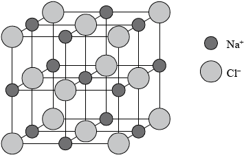
Award [4] for correctly drawn diagram (like above) with ions clearly identified.
Award [3 max] for the following diagram below if no explanation in words is given.

(NH4)3PO4;
Allow use of square brackets.
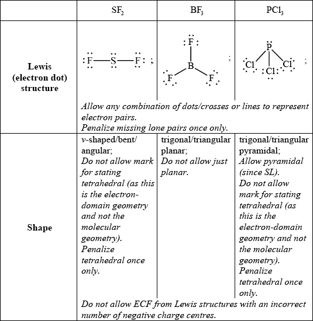
allow any bond angle in the range 97° to less than 109.5° (experimental value is 98°);
due to four negative charge centres/four electron pairs/four electron domains (two of which are lone pairs)/tetrahedral arrangement of electron pairs;
extra repulsion due to two lone pairs of electrons repelling each other / lone pairs occupy more space (than bonding pairs) so F–S–F bond angle decreases from 109.5° / OWTTE;
Answers which refer to electronegativity consideration of F’s also are correct, as long as LP/LP repulsion is also mentioned to score M3.
SF2:
polar because net dipole moment present in molecule / SF bond polarities do not cancel each other out / unsymmetrical distribution of charge / OWTTE;
BF3:
non-polar because no net dipole moment present in molecule / BF bond polarities do cancel each other out / symmetrical distribution of charge / OWTTE;
PCl3:
polar because net dipole moment present in molecule / PCl bond polarities do not cancel each other out / unsymmetrical distribution of charge / OWTTE;
Award [1 max] for SF2 polar, BF3 non-polar, PCl3 polar even if explanations are incorrect or are not given.
Polarity may also be explained using diagrams showing net dipole moments.
IBr:
\(\Delta \chi = (3.0 - 2.7) = 0.3\), covalent
BaCl2:
\(\Delta \chi = (3.2 - 0.9) = 2.3\), ionic
CsI:
\(\Delta \chi = (2.7 - 0.8) = 1.9\), ionic
HBr:
\(\Delta \chi = (3.0 - 2.2) = 0.8\), covalent
Award [2] for all four correct, [1] for two or three correct.
Award [1 max] for stating IBr, HBr covalent and BaCl2, CsI ionic.
Allow polar covalent instead of covalent.
Allow large electronegativity difference for ionic and small electronegativity difference for covalent.
Examiners report
Many candidates failed to score for the meaning of the term ionic bonding in a) (i). A definition should provide an easily scored mark.
Part a) (ii) required a description and a diagram of a sodium chloride lattice. Marks were awarded so that a candidate who attempted a diagram and gave a good description could score full marks.
In a) (iii) the chemical formula of ammonium phosphate was sometimes creatively constructed with amm used as the symbol for the ammonium ion and phosphate as \({\text{P}}{{\text{O}}_{\text{3}}}\) or as \({\text{PO}}_{\text{4}}^{2 - }\).
Lewis structures in b) (i) were generally well done. The most common loss of a mark was due to omitting lone pairs of electrons from atoms.
In b) (ii) many candidates stated that S had two lone pairs of electrons but still based the bond angle on a trigonal planar structure. Even candidates who correctly stated the bond angle could not explain it well.
In b) (iii) many candidates could identify the molecules as polar or non-polar but could not give a valid reason. Some referred to charges cancelling out rather than dipoles.
Part c) required candidates to find differences in electronegativity values to determine if compounds are ionic or covalent. Many candidates answered this well. Some found the electronegativity difference correctly but were confused about how to use this to classify the type of bonding present. A few candidates added the electronegativity values.
Lithium and boron are elements in period 2 of the periodic table. Lithium occurs in group 1 (the alkali metals) and boron occurs in group 3. Isotopes exist for both elements.
Every element has its own unique line emission spectrum.
(i) Define the terms atomic number, mass number and isotopes of an element.
Atomic number:
Mass number:
Isotopes of an element:
(ii) Distinguish between the terms group and period.
(iii) Deduce the electron arrangements of the lithium ion, \({\text{L}}{{\text{i}}^ + }\), and the boron atom, B.
\({\text{L}}{{\text{i}}^ + }\):
B:
(iv) Naturally occurring boron exists as two isotopes with mass numbers of 10 and 11. Calculate the percentage abundance of the lighter isotope, using this information and the relative atomic mass of boron in Table 5 of the Data Booklet.
v) Lithium exists as two isotopes with mass numbers of 6 and 7. Deduce the number of protons, electrons and neutrons for each isotope.

(i) Distinguish between a continuous spectrum and a line spectrum.
(ii) Draw a diagram to show the electron transitions between energy levels in a hydrogen atom that are responsible for the two series of lines in the ultraviolet and visible regions of the spectrum. Label your diagram to show three transitions for each series.
(i) Explain why metals are good conductors of electricity and why they are malleable.
(ii) Iron is described as a transition metal. Identify the two most common ions of iron.
iii) Deduce the chemical formulas of lithium oxide and iron(II) oxide.
Lithium oxide:
Iron(II) oxide:
Markscheme
(i) Atomic number:
number of protons (in nucleus/atom);
Mass number:
(sum of) number of protons and neutrons (in nucleus/atom);
Isotopes of an element:
atoms of same element / atoms with same number of protons/atomic number/Z but different number of neutrons/mass number/A;
Penalize once only use of the term element in the three definitions, for example, number of protons in an element or number of protons and neutrons in an element or element with the same atomic number but different mass number.
(ii) Group: (elements in vertical) columns in periodic table and Period: (elements in horizontal) rows in periodic table;
Allow elements in same group have similar chemical properties and within a period, atoms have same number of shells/energy levels (but number of electrons in valence/outer shell increases).
Allow groups distributed vertically and periods distributed horizontally / OWTTE.
Allow group number gives number of valence/outer shell electrons (for maingroup elements) and period gives same number of shells/energy levels.
(iii) Li+: 2/1s2;
B: 2,3/1s22s22p1;
(iv) correct mathematical expression set-up \({\text{(e.g. }}\left( {\frac{x}{{100}}} \right)(10) + \left[ {\frac{{(100 - x)}}{{(100)}}} \right](11) = 10.81)\);
19%;
Award [2] for correct final answer.
(v) 
Award [1 max] for correct number of neutrons for both isotopes if numbers of protons or electrons is not given.
Award [1 max] for correct number of protons and electrons for both isotopes if number of neutrons is not given or if numbers of neutrons are incorrect.
(i) Continuous spectrum: radiation spread over all wavelengths/frequencies/energies/colours / OWTTE;
Line spectrum: radiation (absorbed/emitted) at certain/specific wavelengths/frequencies/energies/colours / OWTTE;
Allow series of (separate/discrete) lines which converge/get closer together at high energy / OWTTE.
(ii) 
showing y-axis labelled as energy/E or labelling at least two energy levels
(\(n = 1\), \(n = 2\) etc. but not for \(n = 0\));
showing energy levels converging;
showing jumps to \(n = 1\) for ultraviolet series;
showing jumps to \(n = 2\) for visible series;
UV and visible must be labelled.
(i) metals have delocalized electrons / sea of electrons which are mobile/can move / OWTTE;
layers/positive ions/cations/atoms slide past/over each other / OWTTE;
Do not accept nuclei for M2.
(ii) Fe2+ and Fe3+ ;
(iii) Lithium oxide: Li2O and Iron(II) oxide: FeO;
Examiners report
Many candidates defined the atomic number, mass number and isotopes correctly although the weaker candidates incorrectly used the term element instead of atom and others defined mass number in terms of molar mass instead of sum of protons and neutrons in the nucleus. Distinguishing between a group and a period and deducing the electron arrangements of Li+ and boron was handled well by majority of candidates. Many candidates struggled to calculate the percentage abundance of the lighter isotope whereas in part (v), most candidates correctly deduced the number of protons, neutrons and electrons in the two isotopes of lithium.
Distinguishing between a continuous and line spectrum in part (b) proved difficult for many candidates. Similarly, drawing a diagram to show the electron transitions between energy levels in a hydrogen atom was challenging for many candidates. Common errors seen were: starting incorrectly at \(n = 0\), not showing convergence or mixed up between the ultraviolet and visible lines.
In Part (c), although the explanation of why metals are good conductors of electricity was answered well, some candidates did not refer to delocalized or sea of electrons. Explanation of why metals are malleable proved to be difficult for many candidates. Identifying the two most common ions of iron and deducing chemical formulas was correctly answered by majority of the candidates.
Airbags are an important safety feature in vehicles. Sodium azide, potassium nitrate and silicon dioxide have been used in one design of airbag.

Sodium azide, a toxic compound, undergoes the following decomposition reaction under certain conditions.
\[{\text{2Na}}{{\text{N}}_{\text{3}}}{\text{(s)}} \to {\text{2Na(s)}} + {\text{3}}{{\text{N}}_{\text{2}}}{\text{(g)}}\]
Two students looked at data in a simulated computer-based experiment to determine the volume of nitrogen generated in an airbag.
Using the simulation programme, the students entered the following data into the computer.

The chemistry of the airbag was found to involve three reactions. The first reaction involves the decomposition of sodium azide to form sodium and nitrogen. In the second reaction, potassium nitrate reacts with sodium.
\[{\text{2KN}}{{\text{O}}_3}{\text{(s)}} + {\text{10Na(s)}} \to {{\text{K}}_2}{\text{O(s)}} + {\text{5N}}{{\text{a}}_2}{\text{O(s)}} + {{\text{N}}_2}{\text{(g)}}\]
An airbag inflates very quickly.
Sodium azide involves ionic bonding, and metallic bonding is present in sodium. Describe ionic and metallic bonding.
State the number of significant figures for the temperature, mass and pressure data.
T:
m:
p:
Calculate the amount, in mol, of sodium azide present.
Determine the volume of nitrogen gas, in \({\text{d}}{{\text{m}}^{\text{3}}}\), produced under these conditions based on this reaction.
Suggest why it is necessary for sodium to be removed by this reaction.
The metal oxides from the second reaction then react with silicon dioxide to form a silicate in the third reaction.
\[{{\text{K}}_2}{\text{O(s)}} + {\text{N}}{{\text{a}}_2}{\text{O(s)}} + {\text{Si}}{{\text{O}}_2}{\text{(s)}} \to {\text{N}}{{\text{a}}_2}{{\text{K}}_2}{\text{Si}}{{\text{O}}_4}{\text{(s)}}\]
Draw the structure of silicon dioxide and state the type of bonding present.
Structure:
Bonding:
It takes just 0.0400 seconds to produce nitrogen gas in the simulation. Calculate the average rate of formation of nitrogen in (b) (iii) and state its units.
The students also discovered that a small increase in temperature (e.g. 10 °C) causes a large increase (e.g. doubling) in the rate of this reaction. State one reason for this.
Markscheme
Ionic:
(electrostatic) attraction between oppositely charged ions/cations and anions/positive and negative ions;
Do not accept answers such as compounds containing metal and non-metal are ionic.
Metallic:
(electrostatic attraction between lattice of) positive ions/cations/nuclei and delocalized electrons / (bed of) positive ions/cations/nuclei in sea of electrons / OWTTE;
T: 4 and m: 3 and p: 3;
\(n = (65.0/65.02) = 1.00{\text{ (mol)}}\);
No penalty for using whole number atomic masses.
\(n{\text{(}}{{\text{N}}_{\text{2}}}{\text{)}} = \left( {\frac{3}{2} \times 1.00 = } \right){\text{ }}1.50{\text{ (mol)}}\);
\(T = \left( {(25.00 + 273.15) = } \right){\text{ }}298.15{\text{ K}}/(25.00 + 273) = 298{\text{ K}}\);
\(p = 1.08 \times 1.01 \times {10^5}{\text{ Pa}}/1.08 \times 1.01 \times {10^2}{\text{ kPa}}/1.09 \times {10^5}{\text{ Pa}}/1.09 \times {10^2}{\text{ kPa}}\);
\(V = \frac{{nRT}}{p} = \frac{{({{10}^3})(1.50)(8.31)(298.15/298)}}{{(1.08 \times 1.01 \times {{10}^5})}} = 34.1{\text{ (d}}{{\text{m}}^{\text{3}}}{\text{)}}\);
Award [4] for correct final answer.
Award [3 max] for 0.0341 (dm3) or 22.7 (dm3).
Award [3 max] for 34.4 (dm3).
Award [2 max] for 22.9 (dm3).
Award [2 max] for 0.0227 (dm3).
Award [2 max] for 0.034 (dm3).
sodium could react violently with any moisture present / sodium is (potentially) explosive / sodium (is dangerous since it is flammable when it) forms hydrogen on contact with water / OWTTE;
Do not accept answers such as sodium is dangerous or sodium is too reactive.
Structure:
drawing of giant structure showing tetrahedrally arranged silicon;
Minimum information required for mark is Si and 4 O atoms, in a tetrahedral arrangement (not 90° bond angles) but with each of the 4 O atoms showing an extension bond.

Bonding:
(giant/network/3D) covalent;
\(\left( {\frac{{34.1}}{{0.0400}}} \right) = 853{\text{ d}}{{\text{m}}^{\text{3}}}{{\text{s}}^{ - 1}}/\left( {\frac{{1.50}}{{0.0400}}} \right) = 37.5{\text{ mol}}\,{{\text{s}}^{ - 1}}\);
Accept 851 dm3s–1.
Units required for mark.
more energetic collisions / more species have energy \( \geqslant {E_{\text{a}}}\);
Allow more frequent collisions / species collide more often.
Examiners report
Question 1 tested a number of concepts and very few students were able to gain all the marks available. Part (a) was fairly well done and students could explain ionic and metallic bonding although weak students did not explain the bonding but simply stated that ionic was between metal and non metal etc.
Surprisingly in part (b) (i) a number of students could not state the number of significant figures and many stated that 25.00 was 2 SF instead of 4.
Part (b) (ii) required the calculation of the amount of substance in moles, and was generally well done although some did not realise the value was in kg and so had a value 1000 times too small.
In part (b) (iii) a number of students lost marks for forgetting to convert temperature or pressure and also to multiply the amount by 1.5. Also many forgot to convert the pressure into kPa if they wanted their answer in \({\text{d}}{{\text{m}}^{\text{3}}}\). However, most students could obtain at least one of the marks available.
In part (c) (i) many did not relate the removal of sodium to the potential for it to react with water and instead gave a far too vague of answer that it was reactive. However, the very best students were able to answer this hypothesis type question and stated that sodium reacts with water. This proved a good discriminator at the top end of the candidature.
Part (c)(ii) was very poorly answered and the majority of students believed that \({\text{Si}}{{\text{O}}_{\text{2}}}\) had a similar structure to \({\text{C}}{{\text{O}}_{\text{2}}}\). The very few students that drew a giant structure often did not then show a tetrahedral arrangement of the atoms, however most did realise that the bonding was covalent.
Part (d) was generally well answered and most students calculated a rate from their results although some lost the mark for incorrect or absent units.
Most students could then successfully explain why the rate increased with temperature. However a minority forgot to refer to time (i.e. more frequent) in relation to collisions.
In December 2010, researchers in Sweden announced the synthesis of N,N–dinitronitramide, \({\text{N(N}}{{\text{O}}_{\text{2}}}{{\text{)}}_{\text{3}}}\). They speculated that this compound, more commonly called trinitramide, may have significant potential as an environmentally friendly rocket fuel oxidant.
Methanol reacts with trinitramide to form nitrogen, carbon dioxide and water. Deduce the coefficients required to balance the equation for this reaction.
___ \({\text{N(N}}{{\text{O}}_2}{{\text{)}}_3}{\text{(g)}} + \) ___ \({\text{C}}{{\text{H}}_3}{\text{OH(l)}} \to \) ___ \({{\text{N}}_2}{\text{(g)}} + \) ___ \({\text{C}}{{\text{O}}_2}{\text{(g)}} + \) ___ \({{\text{H}}_2}{\text{O(l)}}\)
Calculate the enthalpy change, in \({\text{kJ}}\,{\text{mo}}{{\text{l}}^{ - 1}}\), when one mole of trinitramide decomposes to its elements, using bond enthalpy data from Table 10 of the Data Booklet. Assume that all the N–O bonds in this molecule have a bond enthalpy of \({\text{305 kJ}}\,{\text{mo}}{{\text{l}}^{ - 1}}\).
Outline how the length of the N–N bond in trinitramide compares with the N–N bond in nitrogen gas, \({{\text{N}}_{\text{2}}}\).
Deduce the N–N–N bond angle in trinitramide and explain your reasoning.
Predict, with an explanation, the polarity of the trinitramide molecule.
Methanol can also be burnt as a fuel. Describe an experiment that would allow the molar enthalpy change of combustion to be calculated from the results.
Explain how the results of this experiment could be used to calculate the molar enthalpy change of combustion of methanol.
Predict, with an explanation, how the result obtained would compare with the value in Table 12 of the Data Booklet.
Markscheme
\(\underline {{\text{ (1) }}} {\text{N(N}}{{\text{O}}_2}{{\text{)}}_3}{\text{(g)}} + \underline {{\text{ 2 }}} {\text{C}}{{\text{H}}_3}{\text{OH(l)}} \to \underline {{\text{ 2 }}} {{\text{N}}_2}{\text{(g)}} + \underline {{\text{ 2 }}} {\text{C}}{{\text{O}}_2}{\text{(g)}} + \underline {{\text{ 4 }}} {{\text{H}}_2}{\text{O(l)}}\);
bonds broken: \((6 \times 305) + (3 \times 158) = 1830 + 474 = 2304{\text{ }}({\text{kJ}}\,{\text{mo}}{{\text{l}}^{ - 1}})\);
bonds made: \((2 \times 945) + (3 \times 498) = 1890 + 1494 = 3384{\text{ }}({\text{kJ}}\,{\text{mo}}{{\text{l}}^{ - 1}})\);
enthalpy change: \(2304 - 3384 = - 1080{\text{ }}({\text{kJ}}\,{\text{mo}}{{\text{l}}^{ - 1}})\);
Award [3] for correct final answer.
Award [2 max] for +1080 (kJ mol–1) .
Accept –234 kJ mol–1 which arise from students assuming that 305 kJ mol–1 refers to the strength of a single N–O bond. Students may then take N=O from the data book value (587 kJ mol–1).
bonds broken: (3 \( \times \) 305) + (3 \( \times \) 587) + (3 \( \times \) 158) = 915 + 1761 + 474 = 3150 (kJ mol–1)
bonds made: (2 \( \times \) 945) + (3 \( \times \) 498) = 1890 + 1494 = 3384 (kJ mol–1)
enthalpy change: 3150 – 3384 = –234 (kJ mol–1) .
Award [2 max] for correct calculation of the enthalpy change of reaction for the equation in part (a), which gives –2160 (kJ mol–1).
Award [1] if the final answer is not –2160 but the candidate has correctly calculated the bonds broken in trinitramide as 2304 (kJ mol–1).
(N–N bond in) trinitramide is longer/nitrogen (gas) is shorter / 0.145 nm in trinitramide versus 0.110 nm in nitrogen;
trinitramide has single (N–N) bond and nitrogen (gas) has triple bond;
106°–108°;
Accept \( < \)109°.
Any two for [2 max].
4 (negative) charge centres/electron pairs/electron domains around central nitrogen;
central nitrogen has a lone/non-bonding pair;
lone/non-bonding pairs repel more than bonding pairs;
molecule will be (trigonal/triangular) pyramidal;
(negative) charge centres/electron pairs/electron domains will be tetrahedrally arranged/orientated/ have tetrahedral geometry;
Do not apply ECF.
polar;
net dipole moment present in molecule / unsymmetrical distribution of charge / polar bonds do not cancel out / centre of negatively charged oxygen atoms does not coincide with positively charged nitrogen atom;
Marks may also be awarded for a suitably presented diagram showing net dipole moment.
Do not accept “unsymmetrical molecule”.
For polarity, apply ECF from part (e).
burn/combust a (known) mass/volume/quantity/amount of methanol (in a spirit burner) / weigh methanol/spirit burner before and after combustion;
use flame to heat a (known) mass/volume/quantity/amount of water;
measure the increase/rise/change in temperature (of the water);
calculate the heat gained by the water / calculate the heat evolved by the burning methanol / substitute in \(q = mc\Delta T\);
calculate the amount/moles of methanol / divide the mass of methanol by its molar mass;
divide the heat gained by the water by the amount/moles of methanol;
result would be less exothermic/less negative;
Accept “less/smaller/lower”.
heat loss / incomplete combustion;
Accept methanol is volatile/evaporates / beaker/material of calorimeter absorbs heat.
Examiners report
Most candidates got the correct stoichiometric coefficients for the equation in part (a).
In Part (c), the typical errors were using the incorrect bond enthalpies from the Data Booklet and using the sum of the bond enthalpies of bond forming (products) minus bond breaking (reactants) instead of the reverse. Some candidates surprisingly used the combustion equation from part (a) for their extensive calculations which was partially given credit.
Part (d) was well answered although a number of candidates thought that nitrogen has a single or double bond instead of a triple bond which was worrying. VSEPR theory however was exceptionally poor and most candidates demonstrated little or no understanding. Many incorrect geometries were cited, especially trigonal planar and even linear and v-shaped! Very few candidates related the geometry to four negative charge centres or electron domains around the central nitrogen atom.
In part (f), polarity typically involved just guess work and only few candidates could explain the reason for the polarity or gave a diagram showing the net dipole moment which suggested poor understanding of the topic.
Part (g) was generally well answered and of those that attempted the question they often scored full marks demonstrating good understanding of calorimetry.
Part (g) was generally well answered and of those that attempted the question they often scored full marks demonstrating good understanding of calorimetry.
Part (g) was generally well answered and of those that attempted the question they often scored full marks demonstrating good understanding of calorimetry.
Ammonia, \({\text{N}}{{\text{H}}_{\text{3}}}\), is a weak base.
Iron is more reactive than copper.
Draw the Lewis structure of ammonia and state the shape of the molecule and its bond angles.
The conjugate acid of ammonia is the ammonium ion, \({\text{NH}}_4^ + \). Draw the Lewis structure of the ammonium ion and deduce its shape and bond angles.
Describe two different properties that could be used to distinguish between a \({\text{1.00 mol}}\,{\text{d}}{{\text{m}}^{ - 3}}\) solution of a strong monoprotic acid and a \({\text{1.00 mol}}\,{\text{d}}{{\text{m}}^{ - 3}}\) solution of a weak monoprotic acid.
Explain, using the Brønsted-Lowry theory, how water can act either as an acid or a base. In each case identify the conjugate acid or base formed.
Draw a labelled diagram of a voltaic cell made from an \({\text{Fe(s)}}/{\text{F}}{{\text{e}}^{2 + }}{\text{(aq)}}\) half-cell connected to a \({\text{Cu(s)}}/{\text{C}}{{\text{u}}^{2 + }}{\text{(aq)}}\) half-cell. In your diagram identify the positive electrode (cathode), the negative electrode (anode) and the direction of electron flow in the external circuit.
Deduce the half-equations for the reactions taking place at the positive electrode (cathode) and negative electrode (anode) of this voltaic cell.
Deduce the overall equation for the reaction taking place in the voltaic cell and determine which species acts as the oxidizing agent and which species has been reduced.
Markscheme
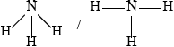 ;
Accept any combination of dots/crosses and lines to represent electron pairs.
(trigonal/triangular) pyramid;
Allow 3D representation using wedges and dotted bonds of trigonal pyramidal molecule.
107°;
Accept any angle between 105° and 108.5°.
No ECF for shape based on incorrect Lewis structure.
 ;
;
Charge needed for mark.
Allow a 3D representation using wedges and dotted bonds of tetrahedral molecule.
109.5°/109°/109° 28';
No ECF for shape based on incorrect Lewis structure.
(measuring) the pH / the strong acid solution will have a lower pH;
conductivity (measurement) / the strong acid will be a better conductor;
the strong acid will react more vigorously with metals/carbonates / the reaction with metals/carbonates;
the heat change when it is neutralized with a base will be different / heat of neutralization / OWTTE;
water can act as a Brønsted-Lowry acid by donating a proton/\({{\text{H}}^ + }\) to form \({\text{O}}{{\text{H}}^ - }\);
water can act as a Brønsted-Lowry base by accepting a proton/\({{\text{H}}^ + }\) to form \({{\text{H}}_{\text{3}}}{{\text{O}}^ + }\);
Accept equations showing the above clearly labelling the acid and basic behaviour and the conjugate acid or base.
Award [1 max] for correct definition of how water can act as a Brønsted-Lowry acid or base.

correct diagram including voltmeter/meter, 4 correct species (state symbols not required) and connecting wires;
No credit if wires to electrodes immersed in the solutions.
labelled salt bridge;
Do not accept name of salt (e.g. potassium nitrate) in place of salt bridge.
correctly labelled electrodes (+)/cathode and (–)/anode;
flow of electrons from Fe to Cu in external circuit;
positive electrode: \({\text{C}}{{\text{u}}^{2 + }} + {\text{2}}{{\text{e}}^ - } \to {\text{Cu}}\);
negative electrode: \({\text{Fe}} \to {\text{F}}{{\text{e}}^{2 + }} + {\text{2}}{{\text{e}}^ - }\);
Award [1] if equations correct but at wrong electrodes or if electrodes are missing.
Award [2] for correct equations if electrodes are missing but were correctly labelled in diagram.
Accept e instead of \({e^ - }\).
Ignore state symbols.
Penalize \( \rightleftharpoons \) once only in equations in (ii) and (iii).
\({\text{Fe}} + {\text{C}}{{\text{u}}^{2 + }} \to {\text{F}}{{\text{e}}^{2 + }} + {\text{Cu}}\);
Ignore state symbols.
\({\text{C}}{{\text{u}}^{2 + }}\) is the oxidizing agent and the species that is reduced;
Examiners report
Candidates could draw the Lewis structures in part (a) and generally they could name the shape and suggest the bond angle.
Most knew what a Lewis acid was but some were careless in their definition and said it was an electron acceptor instead of an electron pair acceptor.
Generally candidates could suggest ways of distinguishing between strong and weak acids using pH or conductivity.
The final part of this question caused some difficulty though as students found it hard to show water acting as an acid and a base even though many could correctly state that an acid is a proton donor and a base is a proton acceptor.
Part (b) focused on electrochemistry and although some candidates were able to score 4 marks most lost marks for their diagrams which were often incomplete and/or incorrectly annotated.
Students that could draw the diagram had little problem writing the equations, however many could not do them correctly.
Students that could draw the diagram had little problem writing the equations, however many could not do them correctly. This carried through to the final part of the question and those that could write the half equations could generally write the overall equation. Identifying the oxidizing agent and the species that has been reduced proved tricky as students were reluctant to suggest the same species- \({\text{C}}{{\text{u}}^{2 + }}\), also some students just said copper which was not specific enough to gain the mark.
Predict the shape and bond angles for the following species:
Ethanoic acid, \({\text{C}}{{\text{H}}_{\text{3}}}{\text{COOH}}\), is a weak acid.
Draw the Lewis structures for carbon monoxide, CO, carbon dioxide, \({\text{C}}{{\text{O}}_{\text{2}}}\) and methanol, \({\text{C}}{{\text{H}}_{\text{3}}}{\text{OH}}\).
List, with an explanation, the three compounds in order of increasing carbon to oxygen bond length (shortest first).
\({\text{C}}{{\text{O}}_{\text{2}}}\)
\({\text{CO}}_3^{2 - }\)
\({\text{BF}}_4^ - \)
Define a Brønsted-Lowry acid.
Deduce the two acids and their conjugate bases in the following reaction:
\[{{\text{H}}_2}{\text{O(l)}} + {\text{N}}{{\text{H}}_3}{\text{(aq)}} \rightleftharpoons {\text{O}}{{\text{H}}^ - }{\text{(aq)}} + {\text{NH}}_4^ + {\text{(aq)}}\]
Define the term weak acid and state the equation for the reaction of ethanoic acid with water.
Vinegar, which contains ethanoic acid, can be used to clean deposits of calcium carbonate from the elements of electric kettles. State the equation for the reaction of ethanoic acid with calcium carbonate.
Markscheme

All outer electron pairs must be shown for mark in each case.
Accept electrons shown as all rather than \( \bullet \) and x.
\({\text{CO}} < {\text{C}}{{\text{O}}_{\text{2}}} < {\text{C}}{{\text{H}}_{\text{3}}}{\text{OH}}\);
triple bonds are shorter than double bonds which are shorter than single bonds / the more pairs of electrons that are shared the stronger the attracting so the shorter the bond / OWTTE;
The order must be correct to gain the second marking point unless ECF from (a).
\({\text{(C}}{{\text{O}}_{\text{2}}}{\text{)}}\)linear;
180°;
\({\text{(CO}}_3^{2 - }{\text{)}}\) trigonal planar/triangular planar;
120°;
\({\text{(BF}}_4^ - {\text{)}}\) tetrahedral;
109.5° / 109° / 109° \(28'\);
donates a proton / \({{\text{H}}^ + }\) ion;
\[\begin{array}{*{20}{c}} {{\text{(acid)}}}&{{\text{(conjugate base)}}} \\ {{{\text{H}}_{\text{2}}}{\text{O}}}&{{\text{O}}{{\text{H}}^ - }{\text{;}}} \\ {{\text{NH}}_4^ + }&{{\text{N}}{{\text{H}}_{\text{3}}}{\text{;}}} \end{array}\]
[1 max] if all four acids and bases given but not clearly paired.
partially dissociated or ionized;
\({\text{C}}{{\text{H}}_3}{\text{COOH}} + {{\text{H}}_2}{\text{O}} \rightleftharpoons {\text{C}}{{\text{H}}_3}{\text{CO}}{{\text{O}}^ - } + {{\text{H}}_3}{{\text{O}}^ + }/{\text{C}}{{\text{H}}_3}{\text{COOH}} \rightleftharpoons {\text{C}}{{\text{H}}_3}{\text{CO}}{{\text{O}}^ - } + {{\text{H}}^ + }\);
\( \rightleftharpoons \) required for mark.
\({\text{2C}}{{\text{H}}_3}{\text{COOH}} + {\text{CaC}}{{\text{O}}_3} \to {\text{Ca(C}}{{\text{H}}_3}{\text{COO}}{{\text{)}}_2} + {\text{C}}{{\text{O}}_2} + {{\text{H}}_2}{\text{O}}\)
Award [1] for correct reactants and products and [1] for balancing.
Examiners report
This was, by far, the most popular choice of question in Section B.
Part (a)(i) was well answered, though the weaker candidates often drew a double bond in carbon monoxide or missed out lone pairs.
These errors then gave rise to problems in attempting to answer (a)(ii).
The better candidates scored all six marks for Part (b), the weaker candidates commonly giving the correct names more often than the correct angles.
The better candidates scored all six marks for Part (b), the weaker candidates commonly giving the correct names more often than the correct angles.
The better candidates scored all six marks for Part (b), the weaker candidates commonly giving the correct names more often than the correct angles.\[28'\]
In Part (c) the definition was generally well answered and the acids and bases were usually correctly identified though not always paired as asked for in the question.
In Part (c) the definition was generally well answered and the acids and bases were usually correctly identified though not always paired as asked for in the question.
In the final equation it was rare to see a correct formula for calcium ethanoate, and even when present, the equation was not usually balanced.
In the final equation it was rare to see a correct formula for calcium ethanoate, and even when present, the equation was not usually balanced.
Methoxymethane, \({\text{C}}{{\text{H}}_{\text{3}}}{\text{OC}}{{\text{H}}_{\text{3}}}\), and ethanol, \({{\text{C}}_{\text{2}}}{{\text{H}}_{\text{5}}}{\text{OH}}\), have the same relative molecular mass. Explain why methoxymethane has a much lower boiling point than ethanol.
Markscheme
methoxymethane is very weakly polar
weak van der Waals’/dipole-dipole forces exist between methoxymethane molecules;
Accept alternatives to van der Waals’ such as London and dispersion forces.
ethanol contains a hydrogen atom bonded directly to an electronegative oxygen atom / hydrogen bonding can occur between two ethanol molecules / intermolecular hydrogen bonding in ethanol;
the forces of attraction between molecules are stronger in ethanol than in methoxymethane / hydrogen bonding stronger than van der Waals’/dipole-dipole attractions;
Award [2 max] if covalent bonds breaking during boiling is mentioned in the answer.
Penalize only once if no reference given to intermolecular nature of hydrogen bonding or van der Waal is missing.
Examiners report
This question was not answered well and many candidates showed they were confused about the different intermolecular forces present between the molecules. Also, many seemed to be trying to explain the difference in boiling point based on the differing strengths of covalent bonds that were present. Those that did correctly identify the stronger hydrogen bonding in ethanol leading to its higher boiling point often forgot to mention that it was intermolecular and between the molecules of ethanol.
Biodiesel makes use of plants’ ability to fix atmospheric carbon by photosynthesis. Many companies and individuals are now using biodiesel as a fuel in order to reduce their carbon footprint. Biodiesel can be synthesized from vegetable oil according to the following reaction.

The reversible arrows in the equation indicate that the production of biodiesel is an equilibrium process.
Identify the organic functional group present in both vegetable oil and biodiesel.
For part of her extended essay investigation into the efficiency of the process, a student reacted a pure sample of a vegetable oil (where \({\text{R}} = {{\text{C}}_{{\text{17}}}}{{\text{H}}_{{\text{33}}}}\)) with methanol. The raw data recorded for the reaction is below.
\[\begin{array}{*{20}{l}} {{\text{Mass of oil}}}&{ = 1013.0{\text{ g}}} \\ {{\text{Mass of methanol}}}&{ = 200.0{\text{ g}}} \\ {{\text{Mass of sodium hydroxide}}}&{ = 3.5{\text{ g}}} \\ {{\text{Mass of biodiesel produced}}}&{ = 811.0{\text{ g}}} \end{array}\]
The relative molecular mass of the oil used by the student is 885.6. Calculate the amount (in moles) of the oil and the methanol used, and hence the amount (in moles) of excess methanol.
State what is meant by the term dynamic equilibrium.
Using the abbreviations [vegetable oil], [methanol], [glycerol] and [biodiesel] deduce the equilibrium constant expression \({\text{(}}{K_{\text{c}}}{\text{)}}\) for this reaction.
Suggest a reason why excess methanol is used in this process.
State and explain the effect that the addition of the sodium hydroxide catalyst will have on the position of equilibrium.
The reactants had to be stirred vigorously because they formed two distinct layers in the reaction vessel. Explain why they form two distinct layers and why stirring increases the rate of reaction.
Calculate the percentage yield of biodiesel obtained in this process.
Markscheme
ester;
amount of oil \( = \frac{{1013.0}}{{885.6}} = 1.144{\text{ mol}}\);
amount of methanol \( = \frac{{200.0}}{{32.05}} = 6.240{\text{ mol}}\);
since three mol of methanol react with one mol of vegetable oil the amount of excess methanol \( = 6.204 - (3 \times 1.144) = 2.808{\text{ mol}}\);
rate of the forward reaction is equal to the rate of the reverse reaction / forward and reverse reactions occur and the concentrations of the reactants and products do not change / OWTTE;
\({K_{\text{c}}} = \frac{{{\text{[glycerol]}} \times {{{\text{[biodiesel]}}}^3}}}{{{\text{[vegetable oil]}} \times {{{\text{[methanol]}}}^3}}}\);
to move the position of equilibrium to the right/product side / increase the yield of biodiesel;
no effect (on position of equilibrium);
increases the rate of the forward and the reverse reactions equally (so equilibrium reached quicker) / it lowers Ea for both the forward and reverse reactions by the same amount / OWTTE;
No ECF for explanation.
vegetable oil is mainly non-polar and methanol is polar / OWTTE;
stirring brings them into more contact with each other / increase the frequency of collisions / OWTTE;
Do not allow simply mixing.
(relative molecular mass of biodiesel, \({{\text{C}}_{19}}{{\text{H}}_{36}}{{\text{O}}_2} = 296.55\))
maximum yield of biodiesel \( = 3.432{\text{ mol}}/1018{\text{ g}}\);
percentage yield \(\frac{{811.0}}{{1018}} \times 100 = 79.67\% \);
Allow 80% for percentage yield.
Examiners report
Part (a) was reasonably well answered with most candidates opting for an ester. Ketone (frequently spelt keytone) and carbonyl were the most common incorrect responses.
In Part (b) most candidates scored 1 or 2 marks, showing that they knew the correct method but the third mark proved to be more difficult to obtain, usually because the factor of 3 was omitted.
In general, equilibrium (Part (c)) seems to be quite well understood. The most common error in (i) was to describe the reaction as constant rather than having opposing reactions with equal rates.
The expression in (ii) was an easy mark for the better candidates. The weaker ones often missed one or both of the powers of three and a small number had + signs in both the numerator and denominator.
In (iii) the most common incorrect answer was ‘to use up all the vegetable oil’.
In (iv) most candidates were aware that a catalyst has no effect on the equilibrium constant but failed to gain the second mark for saying that the catalyst affected both reactions equally, either by increasing the rates equally or lowering the activation energy by the same amount.
Very few candidates scored both marks for Part (d) of the question. The better candidates realised that there was a difference in polarity, though not always identifying which reactant was polar and which was non-polar. The most common answers either simply stated that the two were immiscible or that they had different densities. For the second mark an increase in collisions was often mentioned but not always an increase in the frequency of collisions.
Candidates found Part (e) to be very difficult. This was not helped by the small amount of space available to them on the paper. Many answers expressed the data in terms which would have calculated (100 - %) as though they had been drilled to calculate % impurities.
Group 7 of the periodic table contains a number of reactive elements such as chlorine, bromine and iodine.
Bleaches in which chlorine is the active ingredient are the most common, although some environmental groups have concerns about their use. In aqueous chlorine the equilibrium below produces chloric(I) acid (hypochlorous acid), HOCl, the active bleach.
\[{\text{C}}{{\text{l}}_2}{\text{(aq)}} + {{\text{H}}_2}{\text{O(l)}} \rightleftharpoons {\text{HOCl (aq)}} + {{\text{H}}^ + }{\text{(aq)}} + {\text{C}}{{\text{l}}^ - }{\text{(aq)}}\]
Aqueous sodium chlorate(I), NaOCl, the most common active ingredient in chlorine based bleaches, oxidizes coloured materials to colourless products while being reduced to the chloride ion. It will also oxidize sulfur dioxide to the sulfate ion.
(i) Describe the colour change that occurs when aqueous chlorine is added to aqueous sodium bromide.
(ii) Outline, with the help of a chemical equation, why this reaction occurs.
The colour change in the reaction between aqueous chlorine and aqueous sodium iodide is very similar, but it differs with an excess of aqueous chlorine. Describe the appearance of the reaction mixture when excess aqueous chlorine has been added to aqueous sodium iodide.
Chloric(I) acid is a weak acid, but hydrochloric acid is a strong acid. Outline how this is indicated in the equation above.
State a balanced equation for the reaction of chloric(I) acid with water.
Outline, in terms of the equilibrium above, why it is dangerous to use an acidic toilet cleaner in combination with this kind of bleach.
Suggest why a covalent molecule, such as chloric(I) acid, is readily soluble in water.
Draw the Lewis (electron dot) structure of chloric(I) acid.
Predict the H–O–Cl bond angle in this molecule and explain this in terms of the valence shell electron pair repulsion (VSEPR) theory.
(i) Deduce the coefficients required to balance the half-equations given below.
___ \({\text{Cl}}{{\text{O}}^ - } + \) ___ \({{\text{H}}^ + } + \) ___ \({{\text{e}}^ - } \rightleftharpoons \) ___ \({{\text{H}}_2}{\text{O}} + \) ___ \({\text{C}}{{\text{l}}^ - }\)
___ \({\text{SO}}_4^{2 - }\) ___ \({{\text{H}}^ + } + \) ___ \({{\text{e}}^ - } \rightleftharpoons \) ___ \({\text{S}}{{\text{O}}_2} + \) ___ \({{\text{H}}_2}{\text{O}}\)
(ii) State the initial and final oxidation numbers of both chlorine and sulfur in the equations in part (i).

(iii) Use the half-equations to deduce the balanced equation for the reaction between the chlorate(I) ion and sulfur dioxide.
Markscheme
(i) from (pale) green/colourless to yellow/orange/brown;
Initial colour must be stated.
Do not accept “clear/transparent” instead of “colourless”.
(ii) chlorine more reactive/more powerful oxidizing agent (than bromine);
Accept opposite statements for bromine.
Accept “chloride ion a weaker reducing agent” / “bromide ion a stronger reducing agent”.
Accept “chlorine more electronegative than bromine”.
\({\text{C}}{{\text{l}}_2}{\text{(aq)}} + {\text{2NaBr(aq)}} \to {\text{B}}{{\text{r}}_2}{\text{(aq)}} + {\text{2NaCl(aq)}}\) /
\({\text{C}}{{\text{l}}_2}{\text{(aq)}} + {\text{2B}}{{\text{r}}^ - }{\text{(aq)}} \to {\text{B}}{{\text{r}}_2}{\text{(aq)}} + {\text{2C}}{{\text{l}}^ - }{\text{(aq)}}\);
Ignore state symbols.
Do not accept with equilibrium sign.
solid (in a colourless solution);
Accept “dark brown solution”.
chloric(I) acid (shown as) a molecule/molecular, but hydrochloric acid (shown as being) split into ions / OWTTE;
Accept “chloric(I) acid is partially dissociated and hydrochloric acid is fully dissociated”.
Reference needed to both acids for mark.
\({\text{HOCl(aq)}} \rightleftharpoons {{\text{H}}^ + }{\text{(aq)}} + {\text{Cl}}{{\text{O}}^ - }{\text{(aq)}}/{\text{HOCl(aq)}} + {{\text{H}}_2}{\text{O(l)}} \rightleftharpoons {{\text{H}}_3}{{\text{O}}^ + }{\text{(aq)}} + {\text{Cl}}{{\text{O}}^ - }{\text{(aq)}}\);
Equilibrium sign required for the mark.
Ignore state symbols.
acid displaces the equilibrium to the left (to form chlorine);
chlorine is toxic/poisonous/harmful/lung irritant;
Accept answers that refer to the (c) (ii) equilibrium.
chloric(I) acid has –OH group / hydrogen attached to a very electronegative atom;
Accept polar molecule.
can form hydrogen bonds to water;
hydrogen bonding to water increases its solubility;
(as a weak acid it is) in equilibrium with ions;
 ;
;
Accept lines, dots or crosses to represent electron pairs.
\( \sim\)104°;
Accept values between 102° and 106°.
four electron pairs/regions of high electron density around O atom / electron pairs/regions of high electron density tetrahedrally arranged and two lone/non-bonding electron pairs on O atom;
Accept Lewis structure with two lone pairs on O and two angular bond pairs if given here as equivalent to M2.
lone pair–bonding pair repulsion greater than bonding pair–bonding pair repulsion;
(i) \({\text{(1) Cl}}{{\text{O}}^ - } + \) 2\(\,{{\text{H}}^ + } + \) 2\(\,{{\text{e}}^ - } \rightleftharpoons {\text{(1) }}{{\text{H}}_2}{\text{O}} + {\text{(1) C}}{{\text{l}}^ - }\);
\({\text{(1) SO}}_4^{2 - } + \) 4\(\,{{\text{H}}^ + } + \) 2\(\,{{\text{e}}^ - } \rightleftharpoons {\text{(1) S}}{{\text{O}}_2} + \) 2\(\,{{\text{H}}_2}{\text{O}}\);
(ii) Award [2] for all correct, [1] for 2 or 3 correct.

Remember to apply ECF from previous equations.
Penalize incorrect notation (eg, 4 or 4+ rather than +4) once only, so award [1] for a fully correct answer in an incorrect format.
(iii) \({\text{Cl}}{{\text{O}}^ - }{\text{(aq)}} + {\text{S}}{{\text{O}}_2}{\text{(aq)}} + {{\text{H}}_2}{\text{O(l)}} \rightleftharpoons {\text{SO}}_4^{2 - }{\text{(aq)}} + {\text{2}}{{\text{H}}^ + }{\text{(aq)}} + {\text{C}}{{\text{l}}^ - }{\text{(aq)}}\)
correct reactants and products;
balancing and cancelling \({{\text{e}}^ - }\), \({{\text{H}}^ + }\) and \({{\text{H}}_{\text{2}}}{\text{O}}\);
Ignore state symbols.
Do not penalize equilibrium sign.
Examiners report
This was the least popular and the least successfully answered question on the paper. Many were unable to describe the colour change required in (a)(i) though more could give an appropriate equation and explain why the reaction occurred in terms of electronegativity. (b) was essentially a “dead” mark and perhaps was out of place on a SL paper. Many students seemed to be aware of the difference between strong and weak acids, but few could use this to answer (c)(i), and many were unable to write an equation for its reaction in water. The more able candidates realised that acids would affect the position of the equilibrium and a number recognized that the toxic gas chlorine would be a product. Many students identified hydrogen bonding from the –OH group as being the reason for the solubility of HOCl. Most were able to give the Lewis (electron dot) structure of chloric(I) acid, but few were able to give a detailed explanation of its bond angle, with only a minority referring to electron domains. In part (d) very few students could write, or combine, appropriate half equations, even though the reactants and products were given, though many could deduce the oxidation numbers of the species in the equations. Some marks were unfortunately lost as candidates omitted the sign.
This was the least popular and the least successfully answered question on the paper. Many were unable to describe the colour change required in (a)(i) though more could give an appropriate equation and explain why the reaction occurred in terms of electronegativity. (b) was essentially a “dead” mark and perhaps was out of place on a SL paper. Many students seemed to be aware of the difference between strong and weak acids, but few could use this to answer (c)(i), and many were unable to write an equation for its reaction in water. The more able candidates realised that acids would affect the position of the equilibrium and a number recognized that the toxic gas chlorine would be a product. Many students identified hydrogen bonding from the –OH group as being the reason for the solubility of HOCl. Most were able to give the Lewis (electron dot) structure of chloric(I) acid, but few were able to give a detailed explanation of its bond angle, with only a minority referring to electron domains. In part (d) very few students could write, or combine, appropriate half equations, even though the reactants and products were given, though many could deduce the oxidation numbers of the species in the equations. Some marks were unfortunately lost as candidates omitted the sign.
This was the least popular and the least successfully answered question on the paper. Many were unable to describe the colour change required in (a)(i) though more could give an appropriate equation and explain why the reaction occurred in terms of electronegativity. (b) was essentially a “dead” mark and perhaps was out of place on a SL paper. Many students seemed to be aware of the difference between strong and weak acids, but few could use this to answer (c)(i), and many were unable to write an equation for its reaction in water. The more able candidates realised that acids would affect the position of the equilibrium and a number recognized that the toxic gas chlorine would be a product. Many students identified hydrogen bonding from the –OH group as being the reason for the solubility of HOCl. Most were able to give the Lewis (electron dot) structure of chloric(I) acid, but few were able to give a detailed explanation of its bond angle, with only a minority referring to electron domains. In part (d) very few students could write, or combine, appropriate half equations, even though the reactants and products were given, though many could deduce the oxidation numbers of the species in the equations. Some marks were unfortunately lost as candidates omitted the sign.
This was the least popular and the least successfully answered question on the paper. Many were unable to describe the colour change required in (a)(i) though more could give an appropriate equation and explain why the reaction occurred in terms of electronegativity. (b) was essentially a “dead” mark and perhaps was out of place on a SL paper. Many students seemed to be aware of the difference between strong and weak acids, but few could use this to answer (c)(i), and many were unable to write an equation for its reaction in water. The more able candidates realised that acids would affect the position of the equilibrium and a number recognized that the toxic gas chlorine would be a product. Many students identified hydrogen bonding from the –OH group as being the reason for the solubility of HOCl. Most were able to give the Lewis (electron dot) structure of chloric(I) acid, but few were able to give a detailed explanation of its bond angle, with only a minority referring to electron domains. In part (d) very few students could write, or combine, appropriate half equations, even though the reactants and products were given, though many could deduce the oxidation numbers of the species in the equations. Some marks were unfortunately lost as candidates omitted the sign.
This was the least popular and the least successfully answered question on the paper. Many were unable to describe the colour change required in (a)(i) though more could give an appropriate equation and explain why the reaction occurred in terms of electronegativity. (b) was essentially a “dead” mark and perhaps was out of place on a SL paper. Many students seemed to be aware of the difference between strong and weak acids, but few could use this to answer (c)(i), and many were unable to write an equation for its reaction in water. The more able candidates realised that acids would affect the position of the equilibrium and a number recognized that the toxic gas chlorine would be a product. Many students identified hydrogen bonding from the –OH group as being the reason for the solubility of HOCl. Most were able to give the Lewis (electron dot) structure of chloric(I) acid, but few were able to give a detailed explanation of its bond angle, with only a minority referring to electron domains. In part (d) very few students could write, or combine, appropriate half equations, even though the reactants and products were given, though many could deduce the oxidation numbers of the species in the equations. Some marks were unfortunately lost as candidates omitted the sign.
This was the least popular and the least successfully answered question on the paper. Many were unable to describe the colour change required in (a)(i) though more could give an appropriate equation and explain why the reaction occurred in terms of electronegativity. (b) was essentially a “dead” mark and perhaps was out of place on a SL paper. Many students seemed to be aware of the difference between strong and weak acids, but few could use this to answer (c)(i), and many were unable to write an equation for its reaction in water. The more able candidates realised that acids would affect the position of the equilibrium and a number recognized that the toxic gas chlorine would be a product. Many students identified hydrogen bonding from the –OH group as being the reason for the solubility of HOCl. Most were able to give the Lewis (electron dot) structure of chloric(I) acid, but few were able to give a detailed explanation of its bond angle, with only a minority referring to electron domains. In part (d) very few students could write, or combine, appropriate half equations, even though the reactants and products were given, though many could deduce the oxidation numbers of the species in the equations. Some marks were unfortunately lost as candidates omitted the sign.
This was the least popular and the least successfully answered question on the paper. Many were unable to describe the colour change required in (a)(i) though more could give an appropriate equation and explain why the reaction occurred in terms of electronegativity. (b) was essentially a “dead” mark and perhaps was out of place on a SL paper. Many students seemed to be aware of the difference between strong and weak acids, but few could use this to answer (c)(i), and many were unable to write an equation for its reaction in water. The more able candidates realised that acids would affect the position of the equilibrium and a number recognized that the toxic gas chlorine would be a product. Many students identified hydrogen bonding from the –OH group as being the reason for the solubility of HOCl. Most were able to give the Lewis (electron dot) structure of chloric(I) acid, but few were able to give a detailed explanation of its bond angle, with only a minority referring to electron domains. In part (d) very few students could write, or combine, appropriate half equations, even though the reactants and products were given, though many could deduce the oxidation numbers of the species in the equations. Some marks were unfortunately lost as candidates omitted the sign.
This was the least popular and the least successfully answered question on the paper. Many were unable to describe the colour change required in (a)(i) though more could give an appropriate equation and explain why the reaction occurred in terms of electronegativity. (b) was essentially a “dead” mark and perhaps was out of place on a SL paper. Many students seemed to be aware of the difference between strong and weak acids, but few could use this to answer (c)(i), and many were unable to write an equation for its reaction in water. The more able candidates realised that acids would affect the position of the equilibrium and a number recognized that the toxic gas chlorine would be a product. Many students identified hydrogen bonding from the –OH group as being the reason for the solubility of HOCl. Most were able to give the Lewis (electron dot) structure of chloric(I) acid, but few were able to give a detailed explanation of its bond angle, with only a minority referring to electron domains. In part (d) very few students could write, or combine, appropriate half equations, even though the reactants and products were given, though many could deduce the oxidation numbers of the species in the equations. Some marks were unfortunately lost as candidates omitted the sign.
This was the least popular and the least successfully answered question on the paper. Many were unable to describe the colour change required in (a)(i) though more could give an appropriate equation and explain why the reaction occurred in terms of electronegativity. (b) was essentially a “dead” mark and perhaps was out of place on a SL paper. Many students seemed to be aware of the difference between strong and weak acids, but few could use this to answer (c)(i), and many were unable to write an equation for its reaction in water. The more able candidates realised that acids would affect the position of the equilibrium and a number recognized that the toxic gas chlorine would be a product. Many students identified hydrogen bonding from the –OH group as being the reason for the solubility of HOCl. Most were able to give the Lewis (electron dot) structure of chloric(I) acid, but few were able to give a detailed explanation of its bond angle, with only a minority referring to electron domains. In part (d) very few students could write, or combine, appropriate half equations, even though the reactants and products were given, though many could deduce the oxidation numbers of the species in the equations. Some marks were unfortunately lost as candidates omitted the sign.
Arsenic and nitrogen play a significant role in environmental chemistry. Arsenous acid, H3AsO3, can be found in oxygen-poor (anaerobic) water, and nitrogen-containing fertilizers can contaminate water.
Nitric acid, HNO3, is strong and nitrous acid, HNO2, is weak.
(i) Define oxidation and reduction in terms of electron loss or gain.
Oxidation:
Reduction:
(ii) Deduce the oxidation numbers of arsenic and nitrogen in each of the following species.
\({\text{A}}{{\text{s}}_{\text{2}}}{{\text{O}}_{\text{3}}}\):
\({\text{NO}}_3^ - \):
\({{\text{H}}_{\text{3}}}{\text{As}}{{\text{O}}_{\text{3}}}\):
\({{\text{N}}_{\text{2}}}{{\text{O}}_{\text{3}}}\):
(iii) Distinguish between the terms oxidizing agent and reducing agent.
(iv) In the removal of arsenic from contaminated groundwater, \({{\text{H}}_{\text{3}}}{\text{As}}{{\text{O}}_{\text{3}}}\) is often first oxidized to arsenic acid, \({{\text{H}}_{\text{3}}}{\text{As}}{{\text{O}}_{\text{4}}}\).
The following unbalanced redox reaction shows another method of forming \({{\text{H}}_{\text{3}}}{\text{As}}{{\text{O}}_{\text{4}}}\).
\[{\text{A}}{{\text{s}}_2}{{\text{O}}_3}{\text{(s)}} + {\text{NO}}_3^ - {\text{(aq)}} \to {{\text{H}}_3}{\text{As}}{{\text{O}}_4}{\text{(aq)}} + {{\text{N}}_2}{{\text{O}}_3}{\text{(aq)}}\]
Deduce the balanced redox equation in acid, and then identify both the oxidizing and reducing agents.
Define an acid according to the Brønsted–Lowry and Lewis theories.
Brønsted–Lowry theory:
Lewis theory:
The Lewis (electron dot) structure of nitrous acid is given below.

Identify which nitrogen-oxygen bond is the shorter.
Deduce the approximate value of the hydrogen-oxygen-nitrogen bond angle in nitrous acid and explain your answer.
Distinguish between a strong acid and a weak acid in terms of their dissociation in aqueous solution.
Ammonia, NH3, is a weak base. Deduce the Lewis (electron dot) structure of NH3. State the name of the shape of the molecule and explain why NH3 is a polar molecule.
When lime was added to a sample of soil, the pH changed from 5 to 7. Calculate the factor by which the hydrogen ion concentration changes.
One common nitrogen-containing fertilizer is ammonium sulfate. State its chemical formula.
Markscheme
(i) Oxidation: loss of electrons and Reduction: gain of electrons;
(ii) As2O3: +3;
NO3–: +5;
H3AsO3: +3;
N2O3: +3;
Penalize incorrect notation e.g. III, V, 3+, 5+, 3, 5 once only.
(iii) Oxidizing agent: substance reduced / removes electrons from another substance / causes some other substance to be oxidized / OWTTE and Reducing agent: substance oxidized / gives electrons to another substance / causes some other substance to be reduced / OWTTE;
Accept Oxidizing agent: electron/e/e– acceptor / causes oxidation / oxidation number/state decreases and Reducing agent: electron/e/e– donor / causes reduction / oxidation number/state increases.
(iv) \({\text{A}}{{\text{s}}_2}{{\text{O}}_3}{\text{(s)}} + {\text{2NO}}_3^ - {\text{(aq)}} + {\text{2}}{{\text{H}}^ + }{\text{(aq)}} + {\text{2}}{{\text{H}}_2}{\text{O(l)}} \to {\text{2}}{{\text{H}}_3}{\text{As}}{{\text{O}}_4}{\text{(aq)}} + {{\text{N}}_2}{{\text{O}}_3}{\text{(aq)}}\)
correct coefficients for \({\text{A}}{{\text{s}}_2}{{\text{O}}_3}\), \({{\text{H}}_3}{\text{As}}{{\text{O}}_4}\) and \({\text{NO}}_3^ - \), \({{\text{N}}_2}{{\text{O}}_3}\);
correct balanced equation;
Ignore state symbols.
M1 must be correct to award M2.
Oxidizing agent: \({\text{NO}}_3^ - {\text{(aq)}}\) / nitrate and Reducing agent: \({\text{A}}{{\text{s}}_2}{{\text{O}}_3}{\text{(s)}}\) / arsenic(III) oxide;
Accept HNO3(aq)/nitric acid.
Accept arsenic oxide.
Species must be fully correct to score M3.
Ignore state symbols.
Brønsted Lowry theory: proton/H+ donor;
Lewis theory: electron-pair acceptor;
N=O;
accept any value in range 102–105°;
Actual value is 102°.
lone/non-bonding pairs on oxygen occupy more space/repel more than bonding pairs hence decreasing the H–O–N bond angle (from 109.5° ) / OWTTE;
Strong acid: acid/electrolyte completely/100% dissociated/ionized in solution/water / OWTTE and Weak acid: acid/electrolyte partially dissociated/ionized in solution/water / OWTTE;
 ;
;
Accept any combination of lines, dots or crosses to represent electron pairs.
trigonal/triangular pyramidal;
Accept pyramidal (since SL).
Do not allow tetrahedral.
net dipole moment present in molecule / NH bond polarities do not cancel each other out / unsymmetrical distribution of charge /OWTTE;
Do not accept molecule has no symmetry hence polar.
changes by 102 /100;
Allow changes from 10–5 to 10–7.
\({{\text{(N}}{{\text{H}}_4}{\text{)}}_2}{\text{S}}{{\text{O}}_4}\);
Examiners report
This was the most popular question answered in Section B.
The definition of oxidation and reduction, deducing oxidation numbers (although some forgot the + sign) and distinguishing between an oxidizing and reducing agent was answered very well by a majority of the candidates. However, a surprising number of candidates were unable to balance the redox equation or identify the correct oxidizing and reducing agents in the given reaction.
In part (b), most candidates defined an acid according to the Brønsted–Lowry and Lewis theories and identify the shorter bond in the Lewis structure given of \({\text{HN}}{{\text{O}}_{\text{2}}}\). Many candidates were able to deduce the approximate value of the H―O―N bond angle, however, some candidates were unable to explain in terms of the greater space occupied by the non-bonding electron pairs compared to the bonding electron pairs. Distinguishing between strong and weak acid in terms of their dissociation in aqueous solution was handled very well. The Lewis structure and shape of ammonia was done correctly by most candidates. However, the weaker candidates stated triangular planar instead of triangular pyramidal and that the molecule has no symmetry instead of unsymmetrical distribution of charge giving rise to a net dipole moment. The change in concentration with the change in pH was done well while an overwhelming number of candidates did not write the correct formula of ammonium sulphate.
In part (b), most candidates defined an acid according to the Brønsted–Lowry and Lewis theories and identify the shorter bond in the Lewis structure given of \({\text{HN}}{{\text{O}}_{\text{2}}}\). Many candidates were able to deduce the approximate value of the H―O―N bond angle, however, some candidates were unable to explain in terms of the greater space occupied by the non-bonding electron pairs compared to the bonding electron pairs. Distinguishing between strong and weak acid in terms of their dissociation in aqueous solution was handled very well. The Lewis structure and shape of ammonia was done correctly by most candidates. However, the weaker candidates stated triangular planar instead of triangular pyramidal and that the molecule has no symmetry instead of unsymmetrical distribution of charge giving rise to a net dipole moment. The change in concentration with the change in pH was done well while an overwhelming number of candidates did not write the correct formula of ammonium sulphate.
In part (b), most candidates defined an acid according to the Brønsted–Lowry and Lewis theories and identify the shorter bond in the Lewis structure given of \({\text{HN}}{{\text{O}}_{\text{2}}}\). Many candidates were able to deduce the approximate value of the H―O―N bond angle, however, some candidates were unable to explain in terms of the greater space occupied by the non-bonding electron pairs compared to the bonding electron pairs. Distinguishing between strong and weak acid in terms of their dissociation in aqueous solution was handled very well. The Lewis structure and shape of ammonia was done correctly by most candidates. However, the weaker candidates stated triangular planar instead of triangular pyramidal and that the molecule has no symmetry instead of unsymmetrical distribution of charge giving rise to a net dipole moment. The change in concentration with the change in pH was done well while an overwhelming number of candidates did not write the correct formula of ammonium sulphate.
In part (b), most candidates defined an acid according to the Brønsted–Lowry and Lewis theories and identify the shorter bond in the Lewis structure given of \({\text{HN}}{{\text{O}}_{\text{2}}}\). Many candidates were able to deduce the approximate value of the H―O―N bond angle, however, some candidates were unable to explain in terms of the greater space occupied by the non-bonding electron pairs compared to the bonding electron pairs. Distinguishing between strong and weak acid in terms of their dissociation in aqueous solution was handled very well. The Lewis structure and shape of ammonia was done correctly by most candidates. However, the weaker candidates stated triangular planar instead of triangular pyramidal and that the molecule has no symmetry instead of unsymmetrical distribution of charge giving rise to a net dipole moment. The change in concentration with the change in pH was done well while an overwhelming number of candidates did not write the correct formula of ammonium sulphate.
In part (b), most candidates defined an acid according to the Brønsted–Lowry and Lewis theories and identify the shorter bond in the Lewis structure given of \({\text{HN}}{{\text{O}}_{\text{2}}}\). Many candidates were able to deduce the approximate value of the H―O―N bond angle, however, some candidates were unable to explain in terms of the greater space occupied by the non-bonding electron pairs compared to the bonding electron pairs. Distinguishing between strong and weak acid in terms of their dissociation in aqueous solution was handled very well. The Lewis structure and shape of ammonia was done correctly by most candidates. However, the weaker candidates stated triangular planar instead of triangular pyramidal and that the molecule has no symmetry instead of unsymmetrical distribution of charge giving rise to a net dipole moment. The change in concentration with the change in pH was done well while an overwhelming number of candidates did not write the correct formula of ammonium sulphate.
In part (b), most candidates defined an acid according to the Brønsted–Lowry and Lewis theories and identify the shorter bond in the Lewis structure given of \({\text{HN}}{{\text{O}}_{\text{2}}}\). Many candidates were able to deduce the approximate value of the H―O―N bond angle, however, some candidates were unable to explain in terms of the greater space occupied by the non-bonding electron pairs compared to the bonding electron pairs. Distinguishing between strong and weak acid in terms of their dissociation in aqueous solution was handled very well. The Lewis structure and shape of ammonia was done correctly by most candidates. However, the weaker candidates stated triangular planar instead of triangular pyramidal and that the molecule has no symmetry instead of unsymmetrical distribution of charge giving rise to a net dipole moment. The change in concentration with the change in pH was done well while an overwhelming number of candidates did not write the correct formula of ammonium sulphate.
In part (b), most candidates defined an acid according to the Brønsted–Lowry and Lewis theories and identify the shorter bond in the Lewis structure given of \({\text{HN}}{{\text{O}}_{\text{2}}}\). Many candidates were able to deduce the approximate value of the H―O―N bond angle, however, some candidates were unable to explain in terms of the greater space occupied by the non-bonding electron pairs compared to the bonding electron pairs. Distinguishing between strong and weak acid in terms of their dissociation in aqueous solution was handled very well. The Lewis structure and shape of ammonia was done correctly by most candidates. However, the weaker candidates stated triangular planar instead of triangular pyramidal and that the molecule has no symmetry instead of unsymmetrical distribution of charge giving rise to a net dipole moment. The change in concentration with the change in pH was done well while an overwhelming number of candidates did not write the correct formula of ammonium sulphate.
A class studied the equilibrium established when ethanoic acid and ethanol react together in the presence of a strong acid, using propanone as an inert solvent. The equation is given below.
\[{\text{C}}{{\text{H}}_{\text{3}}}{\text{COOH}} + {{\text{C}}_{\text{2}}}{{\text{H}}_{\text{5}}}{\text{OH}} \rightleftharpoons {\text{C}}{{\text{H}}_{\text{3}}}{\text{COO}}{{\text{C}}_{\text{2}}}{{\text{H}}_{\text{5}}} + {{\text{H}}_{\text{2}}}{\text{O}}\]
One group made the following initial mixture:

After one week, a \(5.00 \pm 0.05{\text{ c}}{{\text{m}}^{\text{3}}}\) sample of the final equilibrium mixture was pipetted out and titrated with \({\text{0.200 mol}}\,{\text{d}}{{\text{m}}^{ - 2}}\) aqueous sodium hydroxide to determine the amount of ethanoic acid remaining. The following titration results were obtained:

The density of ethanoic acid is \({\text{1.05 g}}\,{\text{c}}{{\text{m}}^{ - 3}}\). Determine the amount, in mol, of ethanoic acid present in the initial mixture.
The hydrochloric acid does not appear in the balanced equation for the reaction. State its function.
Identify the liquid whose volume has the greatest percentage uncertainty.
(i) Calculate the absolute uncertainty of the titre for Titration 1 (\({\text{27.60 c}}{{\text{m}}^{\text{3}}}\)).
(ii) Suggest the average volume of alkali, required to neutralize the \({\text{5.00 c}}{{\text{m}}^{\text{3}}}\) sample, that the student should use.
(iii) \({\text{23.00 c}}{{\text{m}}^{\text{3}}}\) of this \({\text{0.200 mol}}\,{\text{d}}{{\text{m}}^{ - 3}}\) aqueous sodium hydroxide reacted with the ethanoic acid in the \({\text{5.00 c}}{{\text{m}}^{\text{3}}}\) sample. Determine the amount, in mol, of ethanoic acid present in the \({\text{50.0 c}}{{\text{m}}^{\text{3}}}\) of final equilibrium mixture.
Referring back to your answer for part (a), calculate the percentage of ethanoic acid converted to ethyl ethanoate.
Deduce the equilibrium constant expression for the reaction.
Outline how you could establish that the system had reached equilibrium at the end of one week.
Outline why changing the temperature has only a very small effect on the value of the equilibrium constant for this equilibrium.
Outline how adding some ethyl ethanoate to the initial mixture would affect the amount of ethanoic acid converted to product.
Propanone is used as the solvent because one compound involved in the equilibrium is insoluble in water. Identify this compound and explain why it is insoluble in water.
Suggest one other reason why using water as a solvent would make the experiment less successful.
Markscheme
\({\text{M(C}}{{\text{H}}_3}{\text{COOH)}}\left( { = (4 \times 1.01) + (2 \times 12.01) + (2 \times 16.00)} \right) = 60.06{\text{ (g}}\,{\text{mo}}{{\text{l}}^{ - 1}}{\text{)}}\);
Accept 60 (g mol–1).
\({\text{mass (C}}{{\text{H}}_3}{\text{COOH)}}( = 5.00 \times 1.05) = 5.25{\text{ (g)}}\);
\(\frac{{5.25}}{{{\text{60.06}}}} = 0.0874{\text{ (mol)}}\);
Award [3] for correct final answer.
Accept 0.0875 (comes from using Mr = 60 g mol–1).
catalyst / OWTTE;
hydrochloric acid/HCl;
(i) \( \pm 0.1/0.10{\text{ (c}}{{\text{m}}^3}{\text{)}}\);
Do not accept without ±.
(ii) \({\text{26.00 (c}}{{\text{m}}^3}{\text{)}}\);
(iii) \(0.200 \times \frac{{23.00}}{{1000}} = 0.0046\);
\({\text{0.0046}} \times \frac{{{\text{50.0}}}}{{{\text{5.00}}}} = {\text{0.0460 (mol)}}\);
\(\frac{{0.0874 - 0.0460}}{{0.0874}} \times 100 = 47.4\% \);
\({\text{(}}{K_{\text{c}}} = {\text{)}}\frac{{{\text{[C}}{{\text{H}}_3}{\text{COO}}{{\text{C}}_2}{{\text{H}}_3}{\text{][}}{{\text{H}}_2}{\text{O]}}}}{{{\text{[}}{{\text{C}}_2}{{\text{H}}_5}{\text{OH][C}}{{\text{H}}_3}{\text{COOH]}}}}\);
Do not penalize minor errors in formulas.
Accept \({\text{(}}{K_{\text{c}}} = {\text{)}}\frac{{{\text{[}}ester{\text{][}}water{\text{]}}}}{{{\text{[}}ethanol / alcohol{\text{][(}}ethanoic{\text{)}} acid{\text{]}}}}\).
repeat the titration a day/week later (and result should be the same) / OWTTE;
Accept “concentrations/physical properties/macroscopic properties of the system do not change”.
enthalpy change/\(\Delta H\) for the reaction is (very) small / OWTTE;
decreases (the amount of ethanoic acid converted);
Accept “increases amount of ethanoic acid present at equilibrium” / OWTTE.
(adding product) shifts position of equilibrium towards reactants/LHS / increases the rate of the reverse reaction / OWTTE;
ethyl ethanoate/\({\text{C}}{{\text{H}}_{\text{3}}}{\text{COO}}{{\text{C}}_{\text{2}}}{{\text{H}}_{\text{5}}}\);
forms only weak hydrogen bonds (to water);
Allow “does not hydrogen bond to water” / “hydrocarbon sections too long” / OWTTE.
M2 can only be given only if M1 correct.
(large excess of) water will shift the position of equilibrium (far to the left) / OWTTE;
Accept any other chemically sound response, such as “dissociation of ethanoic acid would affect equilibrium”.
Examiners report
Generally candidates found some elements of this question quite challenging but there were accessible marks of even the weakest candidates. The majority of students were able to determine the molar mass of ethanoic acid but some struggled to calculate the mass from the volume. Most candidates were able to identify the role of hydrochloric acid as a catalyst but some struggled to identify the liquid whose volume had the greatest uncertainty. Most candidates were able to calculate the absolute uncertainty of the titre but some lost a mark by omitting the \( + \)/\( - \) sign. Candidates did not identify the first titre as incongruent and simply averaged the three values which perhaps suggests limited experimental experience. Most students could determine an equilibrium constant expression, but many did not answer the question in (g) and did not suggest how the equilibrium could be established experimentally with many referring to the equal rate of the forward and backward reaction. Many candidates were aware of Le Chatelier effects on the position of equilibrium, but a significant number failed to use this information to answer the question asked and could not explain the small effect of temperature changes. Whilst most students managed to identify the ester as the component of the mixture that was insoluble in water, many did not refer to its inability to form strong hydrogen bonds to water which was necessary for the mark. Quite a number of students came up with a valid reason why water would not be a suitable though some students appeared to have overlooked that the question asked for “one other reason” than that implied in (j).
Generally candidates found some elements of this question quite challenging but there were accessible marks of even the weakest candidates. The majority of students were able to determine the molar mass of ethanoic acid but some struggled to calculate the mass from the volume. Most candidates were able to identify the role of hydrochloric acid as a catalyst but some struggled to identify the liquid whose volume had the greatest uncertainty. Most candidates were able to calculate the absolute uncertainty of the titre but some lost a mark by omitting the \( + \)/\( - \) sign. Candidates did not identify the first titre as incongruent and simply averaged the three values which perhaps suggests limited experimental experience. Most students could determine an equilibrium constant expression, but many did not answer the question in (g) and did not suggest how the equilibrium could be established experimentally with many referring to the equal rate of the forward and backward reaction. Many candidates were aware of Le Chatelier effects on the position of equilibrium, but a significant number failed to use this information to answer the question asked and could not explain the small effect of temperature changes. Whilst most students managed to identify the ester as the component of the mixture that was insoluble in water, many did not refer to its inability to form strong hydrogen bonds to water which was necessary for the mark. Quite a number of students came up with a valid reason why water would not be a suitable though some students appeared to have overlooked that the question asked for “one other reason” than that implied in (j).
Generally candidates found some elements of this question quite challenging but there were accessible marks of even the weakest candidates. The majority of students were able to determine the molar mass of ethanoic acid but some struggled to calculate the mass from the volume. Most candidates were able to identify the role of hydrochloric acid as a catalyst but some struggled to identify the liquid whose volume had the greatest uncertainty. Most candidates were able to calculate the absolute uncertainty of the titre but some lost a mark by omitting the \( + \)/\( - \) sign. Candidates did not identify the first titre as incongruent and simply averaged the three values which perhaps suggests limited experimental experience. Most students could determine an equilibrium constant expression, but many did not answer the question in (g) and did not suggest how the equilibrium could be established experimentally with many referring to the equal rate of the forward and backward reaction. Many candidates were aware of Le Chatelier effects on the position of equilibrium, but a significant number failed to use this information to answer the question asked and could not explain the small effect of temperature changes. Whilst most students managed to identify the ester as the component of the mixture that was insoluble in water, many did not refer to its inability to form strong hydrogen bonds to water which was necessary for the mark. Quite a number of students came up with a valid reason why water would not be a suitable though some students appeared to have overlooked that the question asked for “one other reason” than that implied in (j).
Generally candidates found some elements of this question quite challenging but there were accessible marks of even the weakest candidates. The majority of students were able to determine the molar mass of ethanoic acid but some struggled to calculate the mass from the volume. Most candidates were able to identify the role of hydrochloric acid as a catalyst but some struggled to identify the liquid whose volume had the greatest uncertainty. Most candidates were able to calculate the absolute uncertainty of the titre but some lost a mark by omitting the \( + \)/\( - \) sign. Candidates did not identify the first titre as incongruent and simply averaged the three values which perhaps suggests limited experimental experience. Most students could determine an equilibrium constant expression, but many did not answer the question in (g) and did not suggest how the equilibrium could be established experimentally with many referring to the equal rate of the forward and backward reaction. Many candidates were aware of Le Chatelier effects on the position of equilibrium, but a significant number failed to use this information to answer the question asked and could not explain the small effect of temperature changes. Whilst most students managed to identify the ester as the component of the mixture that was insoluble in water, many did not refer to its inability to form strong hydrogen bonds to water which was necessary for the mark. Quite a number of students came up with a valid reason why water would not be a suitable though some students appeared to have overlooked that the question asked for “one other reason” than that implied in (j).
Generally candidates found some elements of this question quite challenging but there were accessible marks of even the weakest candidates. The majority of students were able to determine the molar mass of ethanoic acid but some struggled to calculate the mass from the volume. Most candidates were able to identify the role of hydrochloric acid as a catalyst but some struggled to identify the liquid whose volume had the greatest uncertainty. Most candidates were able to calculate the absolute uncertainty of the titre but some lost a mark by omitting the \( + \)/\( - \) sign. Candidates did not identify the first titre as incongruent and simply averaged the three values which perhaps suggests limited experimental experience. Most students could determine an equilibrium constant expression, but many did not answer the question in (g) and did not suggest how the equilibrium could be established experimentally with many referring to the equal rate of the forward and backward reaction. Many candidates were aware of Le Chatelier effects on the position of equilibrium, but a significant number failed to use this information to answer the question asked and could not explain the small effect of temperature changes. Whilst most students managed to identify the ester as the component of the mixture that was insoluble in water, many did not refer to its inability to form strong hydrogen bonds to water which was necessary for the mark. Quite a number of students came up with a valid reason why water would not be a suitable though some students appeared to have overlooked that the question asked for “one other reason” than that implied in (j).
Generally candidates found some elements of this question quite challenging but there were accessible marks of even the weakest candidates. The majority of students were able to determine the molar mass of ethanoic acid but some struggled to calculate the mass from the volume. Most candidates were able to identify the role of hydrochloric acid as a catalyst but some struggled to identify the liquid whose volume had the greatest uncertainty. Most candidates were able to calculate the absolute uncertainty of the titre but some lost a mark by omitting the \( + \)/\( - \) sign. Candidates did not identify the first titre as incongruent and simply averaged the three values which perhaps suggests limited experimental experience. Most students could determine an equilibrium constant expression, but many did not answer the question in (g) and did not suggest how the equilibrium could be established experimentally with many referring to the equal rate of the forward and backward reaction. Many candidates were aware of Le Chatelier effects on the position of equilibrium, but a significant number failed to use this information to answer the question asked and could not explain the small effect of temperature changes. Whilst most students managed to identify the ester as the component of the mixture that was insoluble in water, many did not refer to its inability to form strong hydrogen bonds to water which was necessary for the mark. Quite a number of students came up with a valid reason why water would not be a suitable though some students appeared to have overlooked that the question asked for “one other reason” than that implied in (j).
Generally candidates found some elements of this question quite challenging but there were accessible marks of even the weakest candidates. The majority of students were able to determine the molar mass of ethanoic acid but some struggled to calculate the mass from the volume. Most candidates were able to identify the role of hydrochloric acid as a catalyst but some struggled to identify the liquid whose volume had the greatest uncertainty. Most candidates were able to calculate the absolute uncertainty of the titre but some lost a mark by omitting the \( + \)/\( - \) sign. Candidates did not identify the first titre as incongruent and simply averaged the three values which perhaps suggests limited experimental experience. Most students could determine an equilibrium constant expression, but many did not answer the question in (g) and did not suggest how the equilibrium could be established experimentally with many referring to the equal rate of the forward and backward reaction. Many candidates were aware of Le Chatelier effects on the position of equilibrium, but a significant number failed to use this information to answer the question asked and could not explain the small effect of temperature changes. Whilst most students managed to identify the ester as the component of the mixture that was insoluble in water, many did not refer to its inability to form strong hydrogen bonds to water which was necessary for the mark. Quite a number of students came up with a valid reason why water would not be a suitable though some students appeared to have overlooked that the question asked for “one other reason” than that implied in (j).
Generally candidates found some elements of this question quite challenging but there were accessible marks of even the weakest candidates. The majority of students were able to determine the molar mass of ethanoic acid but some struggled to calculate the mass from the volume. Most candidates were able to identify the role of hydrochloric acid as a catalyst but some struggled to identify the liquid whose volume had the greatest uncertainty. Most candidates were able to calculate the absolute uncertainty of the titre but some lost a mark by omitting the \( + \)/\( - \) sign. Candidates did not identify the first titre as incongruent and simply averaged the three values which perhaps suggests limited experimental experience. Most students could determine an equilibrium constant expression, but many did not answer the question in (g) and did not suggest how the equilibrium could be established experimentally with many referring to the equal rate of the forward and backward reaction. Many candidates were aware of Le Chatelier effects on the position of equilibrium, but a significant number failed to use this information to answer the question asked and could not explain the small effect of temperature changes. Whilst most students managed to identify the ester as the component of the mixture that was insoluble in water, many did not refer to its inability to form strong hydrogen bonds to water which was necessary for the mark. Quite a number of students came up with a valid reason why water would not be a suitable though some students appeared to have overlooked that the question asked for “one other reason” than that implied in (j).
Generally candidates found some elements of this question quite challenging but there were accessible marks of even the weakest candidates. The majority of students were able to determine the molar mass of ethanoic acid but some struggled to calculate the mass from the volume. Most candidates were able to identify the role of hydrochloric acid as a catalyst but some struggled to identify the liquid whose volume had the greatest uncertainty. Most candidates were able to calculate the absolute uncertainty of the titre but some lost a mark by omitting the \( + \)/\( - \) sign. Candidates did not identify the first titre as incongruent and simply averaged the three values which perhaps suggests limited experimental experience. Most students could determine an equilibrium constant expression, but many did not answer the question in (g) and did not suggest how the equilibrium could be established experimentally with many referring to the equal rate of the forward and backward reaction. Many candidates were aware of Le Chatelier effects on the position of equilibrium, but a significant number failed to use this information to answer the question asked and could not explain the small effect of temperature changes. Whilst most students managed to identify the ester as the component of the mixture that was insoluble in water, many did not refer to its inability to form strong hydrogen bonds to water which was necessary for the mark. Quite a number of students came up with a valid reason why water would not be a suitable though some students appeared to have overlooked that the question asked for “one other reason” than that implied in (j).
Generally candidates found some elements of this question quite challenging but there were accessible marks of even the weakest candidates. The majority of students were able to determine the molar mass of ethanoic acid but some struggled to calculate the mass from the volume. Most candidates were able to identify the role of hydrochloric acid as a catalyst but some struggled to identify the liquid whose volume had the greatest uncertainty. Most candidates were able to calculate the absolute uncertainty of the titre but some lost a mark by omitting the \( + \)/\( - \) sign. Candidates did not identify the first titre as incongruent and simply averaged the three values which perhaps suggests limited experimental experience. Most students could determine an equilibrium constant expression, but many did not answer the question in (g) and did not suggest how the equilibrium could be established experimentally with many referring to the equal rate of the forward and backward reaction. Many candidates were aware of Le Chatelier effects on the position of equilibrium, but a significant number failed to use this information to answer the question asked and could not explain the small effect of temperature changes. Whilst most students managed to identify the ester as the component of the mixture that was insoluble in water, many did not refer to its inability to form strong hydrogen bonds to water which was necessary for the mark. Quite a number of students came up with a valid reason why water would not be a suitable though some students appeared to have overlooked that the question asked for “one other reason” than that implied in (j).
Generally candidates found some elements of this question quite challenging but there were accessible marks of even the weakest candidates. The majority of students were able to determine the molar mass of ethanoic acid but some struggled to calculate the mass from the volume. Most candidates were able to identify the role of hydrochloric acid as a catalyst but some struggled to identify the liquid whose volume had the greatest uncertainty. Most candidates were able to calculate the absolute uncertainty of the titre but some lost a mark by omitting the \( + \)/\( - \) sign. Candidates did not identify the first titre as incongruent and simply averaged the three values which perhaps suggests limited experimental experience. Most students could determine an equilibrium constant expression, but many did not answer the question in (g) and did not suggest how the equilibrium could be established experimentally with many referring to the equal rate of the forward and backward reaction. Many candidates were aware of Le Chatelier effects on the position of equilibrium, but a significant number failed to use this information to answer the question asked and could not explain the small effect of temperature changes. Whilst most students managed to identify the ester as the component of the mixture that was insoluble in water, many did not refer to its inability to form strong hydrogen bonds to water which was necessary for the mark. Quite a number of students came up with a valid reason why water would not be a suitable though some students appeared to have overlooked that the question asked for “one other reason” than that implied in (j).
Consider the following three organic compounds: butane, \({\text{C}}{{\text{H}}_{\text{3}}}{\text{C}}{{\text{H}}_{\text{2}}}{\text{C}}{{\text{H}}_{\text{2}}}{\text{C}}{{\text{H}}_{\text{3}}}\); propanal, \({\text{C}}{{\text{H}}_{\text{3}}}{\text{C}}{{\text{H}}_{\text{2}}}{\text{CHO}}\); and ethanoic acid, \({\text{C}}{{\text{H}}_{\text{3}}}{\text{COOH}}\).
Deduce the order of increasing solubility in water of the three compounds.
Explain your reasoning.
Markscheme
\({\text{butane}} < {\text{propanal}} < {\text{ethanoic acid}}/{\text{C}}{{\text{H}}_3}{\text{C}}{{\text{H}}_2}{\text{C}}{{\text{H}}_2}{\text{C}}{{\text{H}}_3} < {\text{C}}{{\text{H}}_3}{\text{C}}{{\text{H}}_2}{\text{CHO}} < {\text{C}}{{\text{H}}_3}{\text{COOH}}\);
all three compounds have similar molar masses;
butane non-polar so no attraction to water molecules/insoluble;
propanal polar so can form some interactions with water molecules;
ethanoic acid can form (more) hydrogen bonds with water molecules / OWTTE;
Award [1 max] for butane is non-polar and propanal and ethanoic acid are both polar.
Examiners report
The order of solubility of butane, propanal and ethanoic acid in water was generally correctly given in (a), but candidates had trouble explaining it, often just discussing functional groups or polarity, without referring to interactions with water in (b). Many referred to the length of the carbon chain. It was apparent that the concept of solubility was poorly understood. Responses were often not an explanation but merely a repetition of the order stated in (a).
The order of solubility of butane, propanal and ethanoic acid in water was generally correctly given in (a), but candidates had trouble explaining it, often just discussing functional groups or polarity, without referring to interactions with water in (b). Many referred to the length of the carbon chain. It was apparent that the concept of solubility was poorly understood. Responses were often not an explanation but merely a repetition of the order stated in (a).
Iron rusts in the presence of oxygen and water. Rusting is a redox process involving several steps that produces hydrated iron(III) oxide, \({\text{F}}{{\text{e}}_{\text{2}}}{{\text{O}}_{\text{3}}} \bullet {\text{n}}{{\text{H}}_{\text{2}}}{\text{O}}\), as the final product.
The half-equations involved for the first step of rusting are given below.
Half-equation 1: \({\text{Fe(s)}} \to {\text{F}}{{\text{e}}^{2 + }}{\text{(aq)}} + {\text{2}}{{\text{e}}^ - }\)
Half-equation 2: \({{\text{O}}_{\text{2}}}{\text{(aq)}} + {\text{4}}{{\text{e}}^ - } + {\text{2}}{{\text{H}}_{\text{2}}}{\text{O(l)}} \to {\text{4O}}{{\text{H}}^ - }{\text{(aq)}}\)
A voltaic cell is made from a half-cell containing a magnesium electrode in a solution of magnesium nitrate and a half-cell containing a silver electrode in a solution of silver(I) nitrate.

Hydrogen peroxide decomposes according to the equation below.
\[{\text{2}}{{\text{H}}_{\text{2}}}{{\text{O}}_{\text{2}}}{\text{(aq)}} \to {\text{2}}{{\text{H}}_{\text{2}}}{\text{O(l)}} + {{\text{O}}_{\text{2}}}{\text{(g)}}\]
The rate of the decomposition can be monitored by measuring the volume of oxygen gas released. The graph shows the results obtained when a solution of hydrogen peroxide decomposed in the presence of a CuO catalyst.

(i) Identify whether half-equation 1 represents oxidation or reduction, giving a reason for your answer.
(ii) Identify the oxidation number of each atom in the three species in half-equation 2.

(iii) Deduce the overall redox equation for the first step of rusting by combining half-equations 1 and 2.
(iv) Identify the reducing agent in the redox equation in part (iii).
The oxygen in half-equation 2 is atmospheric oxygen that is found dissolved in water in very small concentrations. Explain, in terms of intermolecular forces, why oxygen is not very soluble in water.
(i) Given that magnesium is more reactive than silver, deduce the half-equations for the reactions occurring at each electrode, including state symbols.
Negative electrode (anode):
Positive electrode (cathode):
(ii) Outline one function of the salt bridge.
(i) State the property that determines the order in which elements are arranged in the periodic table.
(ii) State the relationship between the electron arrangement of an element and its group and period in the periodic table.
(i) The experiment is repeated with the same amount of a more effective catalyst, \({\text{Mn}}{{\text{O}}_{\text{2}}}\), under the same conditions and using the same concentration and volume of hydrogen peroxide. On the graph above, sketch the curve you would expect.
(ii) Outline how the initial rate of reaction can be found from the graph.
(iii) Outline a different experimental procedure that can be used to monitor the decomposition rate of hydrogen peroxide.
(iv) A Maxwell–Boltzmann energy distribution curve is drawn below. Label both axes and explain, by annotating the graph, how catalysts increase the rate of reaction.

Markscheme
(i) oxidation and (iron/Fe) loses electrons/increases in oxidation number/state;
(ii)  ;
;
Award [2] for five correct.
Award [1] for four correct.
Accept use of oxidation states (0, +1, –2, –2, +1) for oxidation numbers.
Penalize once for incorrect notation (eg, 2, 2–).
(iii) \({{\text{O}}_2}{\text{(aq)}} + {\text{2}}{{\text{H}}_2}{\text{O(l)}} + {\text{2Fe(s)}} \to {\text{2F}}{{\text{e}}^{2 + }}{\text{(aq)}} + {\text{4O}}{{\text{H}}^ - }{\text{(aq)}}\);
Ignore state symbols.
(iv) Fe/iron;
oxygen is non-polar;
needs to break strong hydrogen bonds/H–bonds between water molecules (to dissolve) / oxygen cannot form hydrogen bonds/H–bonds with water;
oxygen can only form (weak) van der Waals’/vdW/LDF/London/dispersion forces with water;
(i) Negative electrode (anode):
\({\text{Mg(s)}} \to {\text{M}}{{\text{g}}^{2 + }}{\text{(aq)}} + {\text{2}}{{\text{e}}^ - }/\frac{1}{2}{\text{Mg(s)}} \to \frac{1}{2}{\text{M}}{{\text{g}}^{2 + }}{\text{(aq)}} + {{\text{e}}^ - }/\)
\({\text{Mg(s)}} - {\text{2}}{{\text{e}}^ - } \to {\text{M}}{{\text{g}}^{2 + }}{\text{(aq)}}/\frac{1}{2}{\text{Mg(s)}} - {{\text{e}}^ - } \to \frac{1}{2}{\text{M}}{{\text{g}}^{2 + }}{\text{(aq)}}\);
Accept equations for the oxidation of water/hydroxide ions.
Positive electrode (cathode):
\({\text{A}}{{\text{g}}^ + }{\text{(aq)}} + {{\text{e}}^ - } \to {\text{Ag (s)}}\);
Accept Ag equation doubled so that both electrodes involve 2 electrons.
Accept e instead of e–.
Award [1 max] if both equations are correct but the state symbols are missing/incorrect.
Award [1 max] if both equations are reversed but state symbols correct.
(ii) provides ions that flow into electrolytes/half-cells / maintains electrical neutrality of solutions/electrolytes / provides electrical continuity by providing path for migrating ions;
Accept completes the (electrical) circuit / allows current to flow / OWTTE.
(i) atomic number / number of protons;
Accept number of electrons in a (neutral) atom.
(ii) groups indicate the number of electrons in the highest energy level/outer/valence shell;
periods indicate the number of (occupied) energy levels/shells (in the atom);
(i) steeper curve with a similar shape that reaches same maximum volume of \({{\text{O}}_{\text{2}}}\);
(ii) (draw a) tangent to the curve at origin/time = 0/start of reaction;
(calculate) the gradient/slope (of the tangent);
(iii) measure/monitor mass/pressure/\({\text{[}}{{\text{H}}_{\text{2}}}{{\text{O}}_{\text{2}}}{\text{]}}\);
Accept measure/monitor temperature of system.
(iv) y-axis: probability / fraction of molecules/particles / probability density
Allow “number of particles/molecules” on y-axis.
and
x-axis: (kinetic) energy;
Accept “speed/velocity” on x-axis.

correct relative position of \({E_{\text{a}}}\) catalysed and \({E_{\text{a}}}\) uncatalysed;
more/greater proportion of molecules/collisions have the lower/required/catalysed \({E_{\text{a}}}\) (and can react upon collision);
M3 can be scored by shading and annotating the graph.
Accept a greater number/proportion of successful collisions as catalyst reduces Ea.
Examiners report
In Part (a) almost all candidates could correctly identify the equation as an oxidation reaction and justify their choice. Assigning oxidation numbers to particular species proved slightly trickier, with many not knowing that elements always have an oxidation state of zero.
Combining the half equations also provided a bit of challenge with many equations having residual electrons, though most students could correctly identify the reducing agent. The aqueous solubility of oxygen gas in Part (b) was poorly explained, with the discussion being most frequently in terms of polarity rather than invoking hydrogen bonding. The electrolysis question in Part (c) was generally well answered, though most relied on “completing the circuit” to obtain the salt bridge mark with few showing any comprehension of the way in which this was achieved. Both the property responsible for the ordering of the periodic table and the relationship of electronic structure to position in the periodic table, required for Part (d), were well known and it was rare for a student not to gain full marks. Similarly in Part (e), most students correctly drew the curve that would result from a more effective catalyst. Many also seemed to be aware of the basic idea of how to find the reaction rate, though correct use of the terms “tangent” and “gradient” was rare and many failed to note it referred to “initial rate”. Most students could also identify an appropriate alternative method for monitoring the rate. In the final section most students could accurately label the axes of a Maxwell-Boltzmann curve and many could also use it to explain the effect of a catalyst, though some weaker students confused this with the effect of temperature and constructed a second curve.
In Part (a) almost all candidates could correctly identify the equation as an oxidation reaction and justify their choice. Assigning oxidation numbers to particular species proved slightly trickier, with many not knowing that elements always have an oxidation state of zero.
Combining the half equations also provided a bit of challenge with many equations having residual electrons, though most students could correctly identify the reducing agent. The aqueous solubility of oxygen gas in Part (b) was poorly explained, with the discussion being most frequently in terms of polarity rather than invoking hydrogen bonding. The electrolysis question in Part (c) was generally well answered, though most relied on “completing the circuit” to obtain the salt bridge mark with few showing any comprehension of the way in which this was achieved. Both the property responsible for the ordering of the periodic table and the relationship of electronic structure to position in the periodic table, required for Part (d), were well known and it was rare for a student not to gain full marks. Similarly in Part (e), most students correctly drew the curve that would result from a more effective catalyst. Many also seemed to be aware of the basic idea of how to find the reaction rate, though correct use of the terms “tangent” and “gradient” was rare and many failed to note it referred to “initial rate”. Most students could also identify an appropriate alternative method for monitoring the rate. In the final section most students could accurately label the axes of a Maxwell-Boltzmann curve and many could also use it to explain the effect of a catalyst, though some weaker students confused this with the effect of temperature and constructed a second curve.
In Part (a) almost all candidates could correctly identify the equation as an oxidation reaction and justify their choice. Assigning oxidation numbers to particular species proved slightly trickier, with many not knowing that elements always have an oxidation state of zero.
Combining the half equations also provided a bit of challenge with many equations having residual electrons, though most students could correctly identify the reducing agent. The aqueous solubility of oxygen gas in Part (b) was poorly explained, with the discussion being most frequently in terms of polarity rather than invoking hydrogen bonding. The electrolysis question in Part (c) was generally well answered, though most relied on “completing the circuit” to obtain the salt bridge mark with few showing any comprehension of the way in which this was achieved. Both the property responsible for the ordering of the periodic table and the relationship of electronic structure to position in the periodic table, required for Part (d), were well known and it was rare for a student not to gain full marks. Similarly in Part (e), most students correctly drew the curve that would result from a more effective catalyst. Many also seemed to be aware of the basic idea of how to find the reaction rate, though correct use of the terms “tangent” and “gradient” was rare and many failed to note it referred to “initial rate”. Most students could also identify an appropriate alternative method for monitoring the rate. In the final section most students could accurately label the axes of a Maxwell-Boltzmann curve and many could also use it to explain the effect of a catalyst, though some weaker students confused this with the effect of temperature and constructed a second curve.
In Part (a) almost all candidates could correctly identify the equation as an oxidation reaction and justify their choice. Assigning oxidation numbers to particular species proved slightly trickier, with many not knowing that elements always have an oxidation state of zero.
Combining the half equations also provided a bit of challenge with many equations having residual electrons, though most students could correctly identify the reducing agent. The aqueous solubility of oxygen gas in Part (b) was poorly explained, with the discussion being most frequently in terms of polarity rather than invoking hydrogen bonding. The electrolysis question in Part (c) was generally well answered, though most relied on “completing the circuit” to obtain the salt bridge mark with few showing any comprehension of the way in which this was achieved. Both the property responsible for the ordering of the periodic table and the relationship of electronic structure to position in the periodic table, required for Part (d), were well known and it was rare for a student not to gain full marks. Similarly in Part (e), most students correctly drew the curve that would result from a more effective catalyst. Many also seemed to be aware of the basic idea of how to find the reaction rate, though correct use of the terms “tangent” and “gradient” was rare and many failed to note it referred to “initial rate”. Most students could also identify an appropriate alternative method for monitoring the rate. In the final section most students could accurately label the axes of a Maxwell-Boltzmann curve and many could also use it to explain the effect of a catalyst, though some weaker students confused this with the effect of temperature and constructed a second curve.
In Part (a) almost all candidates could correctly identify the equation as an oxidation reaction and justify their choice. Assigning oxidation numbers to particular species proved slightly trickier, with many not knowing that elements always have an oxidation state of zero.
Combining the half equations also provided a bit of challenge with many equations having residual electrons, though most students could correctly identify the reducing agent. The aqueous solubility of oxygen gas in Part (b) was poorly explained, with the discussion being most frequently in terms of polarity rather than invoking hydrogen bonding. The electrolysis question in Part (c) was generally well answered, though most relied on “completing the circuit” to obtain the salt bridge mark with few showing any comprehension of the way in which this was achieved. Both the property responsible for the ordering of the periodic table and the relationship of electronic structure to position in the periodic table, required for Part (d), were well known and it was rare for a student not to gain full marks. Similarly in Part (e), most students correctly drew the curve that would result from a more effective catalyst. Many also seemed to be aware of the basic idea of how to find the reaction rate, though correct use of the terms “tangent” and “gradient” was rare and many failed to note it referred to “initial rate”. Most students could also identify an appropriate alternative method for monitoring the rate. In the final section most students could accurately label the axes of a Maxwell-Boltzmann curve and many could also use it to explain the effect of a catalyst, though some weaker students confused this with the effect of temperature and constructed a second curve.
Bonds can be formed in many ways.
The landing module for the Apollo mission used rocket fuel made from a mixture of hydrazine, N2H4, and dinitrogen tetraoxide, N2O4.
N2H4(l) + N2O4(l) → 3N2(g) + 4H2O(g)
State and explain the difference in bond strength between the nitrogen atoms in a hydrazine and nitrogen molecule.
State why hydrazine has a higher boiling point than dinitrogen tetraoxide.
Determine the oxidation state of nitrogen in the two reactants.
![]()
Deduce, giving a reason, which species is the reducing agent.
Deduce the Lewis (electron dot) structures of ozone.
Markscheme
triple bond in nitrogen «molecule» AND single bond in hydrazine
triple bond stronger than single bond
OR
more shared «pairs of» electrons make bond stronger/attract nuclei more
Accept bond enthalpy values from data booklet (158 and 945 kJ\(\,\)mol–1).
[2 marks]
hydrogen bonding «between molecules, dinitrogen tetraoxide does not»
[1 mark]
N2H4: –2 AND N2O4: +4
[1 mark]
N2H4 AND oxidized/oxidation state increases
OR
N2H4 AND loses hydrogen
OR
N2H4 AND reduces/removes oxygen from N2O4
Accept “N2H4 AND gives electrons «to N2O4»”.
[1 mark]
![]()
Accept any combination of lines, dots or crosses to represent electrons.
Do not penalize missing lone pairs if already done in 3b.
Do not accept structure that represents 1.5 bonds.
[2 marks]
Examiners report
Draw the Lewis (electron dot) structure of chloromethane.
Predict the shape of the chloromethane molecule and the H–C–H bond angle.
Shape:
Bond angle:
Explain why chloromethane is a polar molecule.
Methanol has a lower molar mass than chloromethane. Explain why the boiling point of methanol is higher than that of chloromethane.
State the equation for the reaction between potassium and chlorine.
Outline the nature of the metallic bonding present in potassium.
Describe the covalent bond present in the chlorine molecule and how it is formed.
Describe the ionic bonding present in potassium chloride and how the ions are formed.
Potassium also reacts with water to form hydrogen gas. Determine the volume, in \({\text{c}}{{\text{m}}^{\text{3}}}\), of hydrogen gas that could theoretically be produced at 273 K and \(1.01 \times {10^5}{\text{ Pa}}\) when 0.0587 g of potassium reacts with excess water.
Identify the acid-base character of the oxides of each of the elements from sodium to chlorine in period 3.
State the equations for the separate reactions of sodium oxide and phosphorus(V) oxide with water.
Markscheme
 ;
;
Accept any combination of lines, dots or crosses to represent electron pairs.
Shape: tetrahedral;
Bond angle: accept any value in the range: 108° to 111°;
(Literature value is 108.2°).
Cl is more electronegative than C / C–Cl bond polar;
bond dipoles do not cancel / asymmetric distribution of electron cloud / (resultant) net dipole moment (from vectorial addition of bond dipoles) going in direction of C–Cl axis / OWTTE;
hydrogen bonding in methanol;
stronger than dipole-dipole/van der Waals’ attractions/forces in chloromethane;
Accept converse argument.
\({\text{2K(s)}} + {\text{C}}{{\text{l}}_2}{\text{(g)}} \to {\text{2KCl(s)}}\);
Ignore state symbols.
(electrostatic) attraction between lattice of cations/positive ions and delocalized electrons;
(electrostatic) attraction between positively charged nuclei and a pair of electrons;
formed as a result of electron sharing;
(electrostatic) attraction between positive and negative ions/oppositely charged ions/cations and anions;
formed as a result of transfer of an electron from a K atom to a Cl atom / OWTTE;
amount of potassium \( = \left( {\frac{{0.0587}}{{39.10}} = } \right){\text{ }}1.5 \times {10^{ - 3}}{\text{ (mol)}}\);
\({\text{2K}} + {\text{2}}{{\text{H}}_2}{\text{O}} \to {\text{2KO}} + {{\text{H}}_2}\) / amount of hydrogen \( = 7.50 \times {10^{ - 4}}{\text{ (mol)}}\);
volume of hydrogen \( = (7.50 \times {10^{ - 4}} \times 22.4 \times 1000 = ){\text{ }}16.8{\text{ (c}}{{\text{m}}^3}{\text{)}}\);
Accept calculation of volume of hydrogen using PV = nRT (answer is 16.9 cm3).
Award [3] for correct final answer.
Na, Mg (oxides): basic
Al (oxide): amphoteric
Do not accept amphiprotic.
Si to Cl (oxides): acidic
Award [2] for all three listed sets correct.
Award [1] for one or two listed sets correct.
Award [1] for stating oxides become more acidic towards right/Cl or more basic towards left/Na.
Do not penalize if reference is to Ar instead of Cl.
Do not penalize for incorrect formulas of oxides.
\({\text{N}}{{\text{a}}_2}{\text{O(s)}} + {{\text{H}}_2}{\text{O(l)}} \to {\text{2NaOH(aq)}}\);
\({{\text{P}}_4}{{\text{O}}_{10}}{\text{(s)}} + {\text{6}}{{\text{H}}_2}{\text{O(l)}} \to {\text{4}}{{\text{H}}_3}{\text{P}}{{\text{O}}_4}{\text{(aq)}}\);
Ignore state symbols.
Accept P2O5(s) + 3H2O(l) \( \to \) 2H3PO4(aq).
Do not award marks if incorrect formulas of the oxides are used.
Examiners report
Probably the least popular option. The drawing of the diagram of chloromethane was generally excellent, as was the prediction/recall of the shape and bond angle. With the reasons for polarity, the concept of bond polarity was well understood, but the idea of asymmetry resulting in a dipole was less clearly appreciated. The construction of the chemical equation was disappointing, as was the description of the three types of bonding, very often missing the important point, in that they are attractions. With the calculation of volume of hydrogen, it was quite rare to get a fully correct answer. The biggest error was to use an incorrect value for the number of moles of hydrogen in the equation \(pV = nRT\), by failing to halve the moles of hydrogen. The use of \(pV = nRT\) also caused problems with units. The acid base nature of oxides of a period were generally well known. In contrast, the construction or recall of correct chemical equations for the reaction with water was a weakness.
Probably the least popular option. The drawing of the diagram of chloromethane was generally excellent, as was the prediction/recall of the shape and bond angle. With the reasons for polarity, the concept of bond polarity was well understood, but the idea of asymmetry resulting in a dipole was less clearly appreciated. The construction of the chemical equation was disappointing, as was the description of the three types of bonding, very often missing the important point, in that they are attractions. With the calculation of volume of hydrogen, it was quite rare to get a fully correct answer. The biggest error was to use an incorrect value for the number of moles of hydrogen in the equation \(pV = nRT\), by failing to halve the moles of hydrogen. The use of \(pV = nRT\) also caused problems with units. The acid base nature of oxides of a period were generally well known. In contrast, the construction or recall of correct chemical equations for the reaction with water was a weakness.
Probably the least popular option. The drawing of the diagram of chloromethane was generally excellent, as was the prediction/recall of the shape and bond angle. With the reasons for polarity, the concept of bond polarity was well understood, but the idea of asymmetry resulting in a dipole was less clearly appreciated. The construction of the chemical equation was disappointing, as was the description of the three types of bonding, very often missing the important point, in that they are attractions. With the calculation of volume of hydrogen, it was quite rare to get a fully correct answer. The biggest error was to use an incorrect value for the number of moles of hydrogen in the equation \(pV = nRT\), by failing to halve the moles of hydrogen. The use of \(pV = nRT\) also caused problems with units. The acid base nature of oxides of a period were generally well known. In contrast, the construction or recall of correct chemical equations for the reaction with water was a weakness.
Probably the least popular option. The drawing of the diagram of chloromethane was generally excellent, as was the prediction/recall of the shape and bond angle. With the reasons for polarity, the concept of bond polarity was well understood, but the idea of asymmetry resulting in a dipole was less clearly appreciated. The construction of the chemical equation was disappointing, as was the description of the three types of bonding, very often missing the important point, in that they are attractions. With the calculation of volume of hydrogen, it was quite rare to get a fully correct answer. The biggest error was to use an incorrect value for the number of moles of hydrogen in the equation \(pV = nRT\), by failing to halve the moles of hydrogen. The use of \(pV = nRT\) also caused problems with units. The acid base nature of oxides of a period were generally well known. In contrast, the construction or recall of correct chemical equations for the reaction with water was a weakness.
Probably the least popular option. The drawing of the diagram of chloromethane was generally excellent, as was the prediction/recall of the shape and bond angle. With the reasons for polarity, the concept of bond polarity was well understood, but the idea of asymmetry resulting in a dipole was less clearly appreciated. The construction of the chemical equation was disappointing, as was the description of the three types of bonding, very often missing the important point, in that they are attractions. With the calculation of volume of hydrogen, it was quite rare to get a fully correct answer. The biggest error was to use an incorrect value for the number of moles of hydrogen in the equation \(pV = nRT\), by failing to halve the moles of hydrogen. The use of \(pV = nRT\) also caused problems with units. The acid base nature of oxides of a period were generally well known. In contrast, the construction or recall of correct chemical equations for the reaction with water was a weakness.
Probably the least popular option. The drawing of the diagram of chloromethane was generally excellent, as was the prediction/recall of the shape and bond angle. With the reasons for polarity, the concept of bond polarity was well understood, but the idea of asymmetry resulting in a dipole was less clearly appreciated. The construction of the chemical equation was disappointing, as was the description of the three types of bonding, very often missing the important point, in that they are attractions. With the calculation of volume of hydrogen, it was quite rare to get a fully correct answer. The biggest error was to use an incorrect value for the number of moles of hydrogen in the equation \(pV = nRT\), by failing to halve the moles of hydrogen. The use of \(pV = nRT\) also caused problems with units. The acid base nature of oxides of a period were generally well known. In contrast, the construction or recall of correct chemical equations for the reaction with water was a weakness.
Probably the least popular option. The drawing of the diagram of chloromethane was generally excellent, as was the prediction/recall of the shape and bond angle. With the reasons for polarity, the concept of bond polarity was well understood, but the idea of asymmetry resulting in a dipole was less clearly appreciated. The construction of the chemical equation was disappointing, as was the description of the three types of bonding, very often missing the important point, in that they are attractions. With the calculation of volume of hydrogen, it was quite rare to get a fully correct answer. The biggest error was to use an incorrect value for the number of moles of hydrogen in the equation \(pV = nRT\), by failing to halve the moles of hydrogen. The use of \(pV = nRT\) also caused problems with units. The acid base nature of oxides of a period were generally well known. In contrast, the construction or recall of correct chemical equations for the reaction with water was a weakness.
Probably the least popular option. The drawing of the diagram of chloromethane was generally excellent, as was the prediction/recall of the shape and bond angle. With the reasons for polarity, the concept of bond polarity was well understood, but the idea of asymmetry resulting in a dipole was less clearly appreciated. The construction of the chemical equation was disappointing, as was the description of the three types of bonding, very often missing the important point, in that they are attractions. With the calculation of volume of hydrogen, it was quite rare to get a fully correct answer. The biggest error was to use an incorrect value for the number of moles of hydrogen in the equation \(pV = nRT\), by failing to halve the moles of hydrogen. The use of \(pV = nRT\) also caused problems with units. The acid base nature of oxides of a period were generally well known. In contrast, the construction or recall of correct chemical equations for the reaction with water was a weakness.
Probably the least popular option. The drawing of the diagram of chloromethane was generally excellent, as was the prediction/recall of the shape and bond angle. With the reasons for polarity, the concept of bond polarity was well understood, but the idea of asymmetry resulting in a dipole was less clearly appreciated. The construction of the chemical equation was disappointing, as was the description of the three types of bonding, very often missing the important point, in that they are attractions. With the calculation of volume of hydrogen, it was quite rare to get a fully correct answer. The biggest error was to use an incorrect value for the number of moles of hydrogen in the equation \(pV = nRT\), by failing to halve the moles of hydrogen. The use of \(pV = nRT\) also caused problems with units. The acid base nature of oxides of a period were generally well known. In contrast, the construction or recall of correct chemical equations for the reaction with water was a weakness.
Probably the least popular option. The drawing of the diagram of chloromethane was generally excellent, as was the prediction/recall of the shape and bond angle. With the reasons for polarity, the concept of bond polarity was well understood, but the idea of asymmetry resulting in a dipole was less clearly appreciated. The construction of the chemical equation was disappointing, as was the description of the three types of bonding, very often missing the important point, in that they are attractions. With the calculation of volume of hydrogen, it was quite rare to get a fully correct answer. The biggest error was to use an incorrect value for the number of moles of hydrogen in the equation \(pV = nRT\), by failing to halve the moles of hydrogen. The use of \(pV = nRT\) also caused problems with units. The acid base nature of oxides of a period were generally well known. In contrast, the construction or recall of correct chemical equations for the reaction with water was a weakness.
Probably the least popular option. The drawing of the diagram of chloromethane was generally excellent, as was the prediction/recall of the shape and bond angle. With the reasons for polarity, the concept of bond polarity was well understood, but the idea of asymmetry resulting in a dipole was less clearly appreciated. The construction of the chemical equation was disappointing, as was the description of the three types of bonding, very often missing the important point, in that they are attractions. With the calculation of volume of hydrogen, it was quite rare to get a fully correct answer. The biggest error was to use an incorrect value for the number of moles of hydrogen in the equation \(pV = nRT\), by failing to halve the moles of hydrogen. The use of \(pV = nRT\) also caused problems with units. The acid base nature of oxides of a period were generally well known. In contrast, the construction or recall of correct chemical equations for the reaction with water was a weakness.
Across period 3, elements increase in atomic number, decrease in atomic radius and increase in electronegativity.
Define the term electronegativity.
Explain why the atomic radius of elements decreases across the period.
State the equations for the reactions of sodium oxide with water and phosphorus(V) oxide with water.
Suggest the pH of the solutions formed in part (c) (i).
Describe three tests that can be carried out in the laboratory, and the expected results, to distinguish between \({\text{0.10 mol}}\,{\text{d}}{{\text{m}}^{ - 3}}{\text{ HCl(aq)}}\) and \({\text{0.10 mol}}\,{\text{d}}{{\text{m}}^{ - 3}}{\text{ C}}{{\text{H}}_{\text{3}}}{\text{COOH(aq)}}\).
Explain whether BF3 can act as a Brønsted-Lowry acid, a Lewis acid or both.
Describe the bonding and structure of sodium chloride.
State the formula of the compounds formed between the elements below.
Sodium and sulfur:
Magnesium and phosphorus:
Covalent bonds form when phosphorus reacts with chlorine to form \({\text{PC}}{{\text{l}}_{\text{3}}}\). Deduce the Lewis (electron dot) structure, the shape and bond angle in \({\text{PC}}{{\text{l}}_{\text{3}}}\) and explain why the molecule is polar.
Lewis (electron dot) structure:
Name of shape:
Bond angle:
Explanation of polarity of molecule:
Markscheme
ability of atom/nucleus to attract bonding/shared pair of electrons / attraction of nucleus for bonding/shared pair of electrons;
Do not accept “element” instead of “atom/nucleus”.
Do not accept “electrons” alone.
increasing nuclear charge/increasing number of protons / increased attraction of (valence) electrons to nucleus;
electrons added are in same (outer) energy level;
\({\text{N}}{{\text{a}}_{\text{2}}}{\text{O(s)}} + {{\text{H}}_{\text{2}}}{\text{O(l)}} \to {\text{2NaOH(aq)}}\);
Accept \(N{a_2}O(s) + {H_2}O(l) \to 2N{a^ + }(aq) + 2O{H^ - }(aq)\).
\({{\text{P}}_4}{{\text{O}}_{10}}{\text{(s)}} + {\text{6}}{{\text{H}}_2}{\text{O(l)}} \to {\text{4}}{{\text{H}}_3}{\text{P}}{{\text{O}}_3}{\text{(aq)}}\);
Accept \({P_2}{O_5}(s) + 3{H_2}O(l) \to 2{H_3}P{O_4}(aq)\).
Accept \({P_4}{O_{10}}(s) + 6{H_2}O(l) \to 4{H^ + }(aq) + 4{H_2}PO_4^ - (aq)\).
Ignore state symbols.
NaOH: > 7;
Accept any pH greater than 7.
H3PO4: < 7;
Accept any pH less than 7.
Award [1 max] if stated that “NaOH alkali/basic and H3PO4 acidic”, but pH values not given.
measuring electrical conductivity and strong acids have greater electrical
conductivity/weak acids have lower electrical conductivity;
Do not accept conductivity for electrical conductivity.
Accept explanation in terms of lightbulb in circuit.
measure pH/use universal indicator and pH higher for weak acid/pH lower for strong acid;
conduct titration with a strong base and equivalence point higher for weak acid / buffer region for weak acid;
adding a reactive metal/carbonate/hydrogen carbonate and stronger effervescence/faster reaction with strong acids;
Accept converse argument.
Accept correct example.
adding a strong base and strong acid would increase more in temperature/weak acids increase less in temperature;
Accept correct example.
Award [1 max] for three suitable tests without correct results.
Accept specific examples with given strong acid and weak acid.
Accept “addition of AgNO3 (aq) and white precipitate with HCl (aq)”.
Do not accept “smell”.
Lewis acid (only);
electron pair acceptor / not a proton donor;
Bonding: (electrostatic) attraction between oppositely charged ions;
Do not accept ionic bonding without some description.
Structure: lattice/giant structure of ions / each \({\text{N}}{{\text{a}}^ + }\) surrounded by \({\text{6 C}}{{\text{l}}^ - }\) (and vice-versa);
\({\text{N}}{{\text{a}}_2}{\text{S}}\);
\({\text{M}}{{\text{g}}_3}{{\text{P}}_2}\);
Lewis structure:
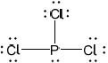 ;
Accept any combination of lines, dots or crosses to represent electron pairs.
Do not award the mark if lone pairs are missing.
Name of shape:
(trigonal/triangular) pyramidal;
Bond angle:
\( < 109.5^\circ \);
Accept any value within the range 100°−109°.
Literature value is 100°.
Explanation of polarity:
dipoles do not cancel (as molecule is not symmetrical) / there is a net dipole (as molecule is not symmetrical) / unsymmetrical distribution of charge;
Accept suitable labelled diagram.
No ECF if original structure is incorrect.
Examiners report
This was by far the most popular question. As before the definition was poorly done and many students defined electronegativity as just attraction for electrons or energy change in gaining an electron. However, many could at least half explain why the atomic radius decreased. In (c) some students could write a correct equation for the addition of sodium oxide to water but very few could correctly write an equation for phosphorous(V) oxide with water, following on few could then correctly state a sensible pH for the solutions formed. Suggesting methods to distinguish between strong and weak acids was reasonably well answered but many student lost marks for the imprecision in their answers. Stating "see if it conducts" and "add pH paper" were common answers without predictions of the expected results. Identification of \({\text{B}}{{\text{F}}_{\text{3}}}\) as a Lewis acid was not always explained well as students mixed up proton donation and electron pair donation. In (f) the description of the bonding and structure of sodium chloride was not well done, although there were a few strong candidates who had little problems with this question. Most candidates could correctly state the ionic formulae though. The last part of this question asked for a Lewis structure of \({\text{PC}}{{\text{l}}_{\text{3}}}\) and most did this well, although some forgot the lone pairs on the chlorine atoms. Most could then correctly state a bond angle although there were a number of candidates who stated 120°. Few candidates could explain why the molecule was polar.
This was by far the most popular question. As before the definition was poorly done and many students defined electronegativity as just attraction for electrons or energy change in gaining an electron. However, many could at least half explain why the atomic radius decreased. In (c) some students could write a correct equation for the addition of sodium oxide to water but very few could correctly write an equation for phosphorous(V) oxide with water, following on few could then correctly state a sensible pH for the solutions formed. Suggesting methods to distinguish between strong and weak acids was reasonably well answered but many student lost marks for the imprecision in their answers. Stating "see if it conducts" and "add pH paper" were common answers without predictions of the expected results. Identification of \({\text{B}}{{\text{F}}_{\text{3}}}\) as a Lewis acid was not always explained well as students mixed up proton donation and electron pair donation. In (f) the description of the bonding and structure of sodium chloride was not well done, although there were a few strong candidates who had little problems with this question. Most candidates could correctly state the ionic formulae though. The last part of this question asked for a Lewis structure of \({\text{PC}}{{\text{l}}_{\text{3}}}\) and most did this well, although some forgot the lone pairs on the chlorine atoms. Most could then correctly state a bond angle although there were a number of candidates who stated 120°. Few candidates could explain why the molecule was polar.
This was by far the most popular question. As before the definition was poorly done and many students defined electronegativity as just attraction for electrons or energy change in gaining an electron. However, many could at least half explain why the atomic radius decreased. In (c) some students could write a correct equation for the addition of sodium oxide to water but very few could correctly write an equation for phosphorous(V) oxide with water, following on few could then correctly state a sensible pH for the solutions formed. Suggesting methods to distinguish between strong and weak acids was reasonably well answered but many student lost marks for the imprecision in their answers. Stating "see if it conducts" and "add pH paper" were common answers without predictions of the expected results. Identification of \({\text{B}}{{\text{F}}_{\text{3}}}\) as a Lewis acid was not always explained well as students mixed up proton donation and electron pair donation. In (f) the description of the bonding and structure of sodium chloride was not well done, although there were a few strong candidates who had little problems with this question. Most candidates could correctly state the ionic formulae though. The last part of this question asked for a Lewis structure of \({\text{PC}}{{\text{l}}_{\text{3}}}\) and most did this well, although some forgot the lone pairs on the chlorine atoms. Most could then correctly state a bond angle although there were a number of candidates who stated 120°. Few candidates could explain why the molecule was polar.
This was by far the most popular question. As before the definition was poorly done and many students defined electronegativity as just attraction for electrons or energy change in gaining an electron. However, many could at least half explain why the atomic radius decreased. In (c) some students could write a correct equation for the addition of sodium oxide to water but very few could correctly write an equation for phosphorous(V) oxide with water, following on few could then correctly state a sensible pH for the solutions formed. Suggesting methods to distinguish between strong and weak acids was reasonably well answered but many student lost marks for the imprecision in their answers. Stating "see if it conducts" and "add pH paper" were common answers without predictions of the expected results. Identification of \({\text{B}}{{\text{F}}_{\text{3}}}\) as a Lewis acid was not always explained well as students mixed up proton donation and electron pair donation. In (f) the description of the bonding and structure of sodium chloride was not well done, although there were a few strong candidates who had little problems with this question. Most candidates could correctly state the ionic formulae though. The last part of this question asked for a Lewis structure of \({\text{PC}}{{\text{l}}_{\text{3}}}\) and most did this well, although some forgot the lone pairs on the chlorine atoms. Most could then correctly state a bond angle although there were a number of candidates who stated 120°. Few candidates could explain why the molecule was polar.
This was by far the most popular question. As before the definition was poorly done and many students defined electronegativity as just attraction for electrons or energy change in gaining an electron. However, many could at least half explain why the atomic radius decreased. In (c) some students could write a correct equation for the addition of sodium oxide to water but very few could correctly write an equation for phosphorous(V) oxide with water, following on few could then correctly state a sensible pH for the solutions formed. Suggesting methods to distinguish between strong and weak acids was reasonably well answered but many student lost marks for the imprecision in their answers. Stating "see if it conducts" and "add pH paper" were common answers without predictions of the expected results. Identification of \({\text{B}}{{\text{F}}_{\text{3}}}\) as a Lewis acid was not always explained well as students mixed up proton donation and electron pair donation. In (f) the description of the bonding and structure of sodium chloride was not well done, although there were a few strong candidates who had little problems with this question. Most candidates could correctly state the ionic formulae though. The last part of this question asked for a Lewis structure of \({\text{PC}}{{\text{l}}_{\text{3}}}\) and most did this well, although some forgot the lone pairs on the chlorine atoms. Most could then correctly state a bond angle although there were a number of candidates who stated 120°. Few candidates could explain why the molecule was polar.
This was by far the most popular question. As before the definition was poorly done and many students defined electronegativity as just attraction for electrons or energy change in gaining an electron. However, many could at least half explain why the atomic radius decreased. In (c) some students could write a correct equation for the addition of sodium oxide to water but very few could correctly write an equation for phosphorous(V) oxide with water, following on few could then correctly state a sensible pH for the solutions formed. Suggesting methods to distinguish between strong and weak acids was reasonably well answered but many student lost marks for the imprecision in their answers. Stating "see if it conducts" and "add pH paper" were common answers without predictions of the expected results. Identification of \({\text{B}}{{\text{F}}_{\text{3}}}\) as a Lewis acid was not always explained well as students mixed up proton donation and electron pair donation. In (f) the description of the bonding and structure of sodium chloride was not well done, although there were a few strong candidates who had little problems with this question. Most candidates could correctly state the ionic formulae though. The last part of this question asked for a Lewis structure of \({\text{PC}}{{\text{l}}_{\text{3}}}\) and most did this well, although some forgot the lone pairs on the chlorine atoms. Most could then correctly state a bond angle although there were a number of candidates who stated 120°. Few candidates could explain why the molecule was polar.
This was by far the most popular question. As before the definition was poorly done and many students defined electronegativity as just attraction for electrons or energy change in gaining an electron. However, many could at least half explain why the atomic radius decreased. In (c) some students could write a correct equation for the addition of sodium oxide to water but very few could correctly write an equation for phosphorous(V) oxide with water, following on few could then correctly state a sensible pH for the solutions formed. Suggesting methods to distinguish between strong and weak acids was reasonably well answered but many student lost marks for the imprecision in their answers. Stating "see if it conducts" and "add pH paper" were common answers without predictions of the expected results. Identification of \({\text{B}}{{\text{F}}_{\text{3}}}\) as a Lewis acid was not always explained well as students mixed up proton donation and electron pair donation. In (f) the description of the bonding and structure of sodium chloride was not well done, although there were a few strong candidates who had little problems with this question. Most candidates could correctly state the ionic formulae though. The last part of this question asked for a Lewis structure of \({\text{PC}}{{\text{l}}_{\text{3}}}\) and most did this well, although some forgot the lone pairs on the chlorine atoms. Most could then correctly state a bond angle although there were a number of candidates who stated 120°. Few candidates could explain why the molecule was polar.
This was by far the most popular question. As before the definition was poorly done and many students defined electronegativity as just attraction for electrons or energy change in gaining an electron. However, many could at least half explain why the atomic radius decreased. In (c) some students could write a correct equation for the addition of sodium oxide to water but very few could correctly write an equation for phosphorous(V) oxide with water, following on few could then correctly state a sensible pH for the solutions formed. Suggesting methods to distinguish between strong and weak acids was reasonably well answered but many student lost marks for the imprecision in their answers. Stating "see if it conducts" and "add pH paper" were common answers without predictions of the expected results. Identification of \({\text{B}}{{\text{F}}_{\text{3}}}\) as a Lewis acid was not always explained well as students mixed up proton donation and electron pair donation. In (f) the description of the bonding and structure of sodium chloride was not well done, although there were a few strong candidates who had little problems with this question. Most candidates could correctly state the ionic formulae though. The last part of this question asked for a Lewis structure of \({\text{PC}}{{\text{l}}_{\text{3}}}\) and most did this well, although some forgot the lone pairs on the chlorine atoms. Most could then correctly state a bond angle although there were a number of candidates who stated 120°. Few candidates could explain why the molecule was polar.
This was by far the most popular question. As before the definition was poorly done and many students defined electronegativity as just attraction for electrons or energy change in gaining an electron. However, many could at least half explain why the atomic radius decreased. In (c) some students could write a correct equation for the addition of sodium oxide to water but very few could correctly write an equation for phosphorous(V) oxide with water, following on few could then correctly state a sensible pH for the solutions formed. Suggesting methods to distinguish between strong and weak acids was reasonably well answered but many student lost marks for the imprecision in their answers. Stating "see if it conducts" and "add pH paper" were common answers without predictions of the expected results. Identification of \({\text{B}}{{\text{F}}_{\text{3}}}\) as a Lewis acid was not always explained well as students mixed up proton donation and electron pair donation. In (f) the description of the bonding and structure of sodium chloride was not well done, although there were a few strong candidates who had little problems with this question. Most candidates could correctly state the ionic formulae though. The last part of this question asked for a Lewis structure of \({\text{PC}}{{\text{l}}_{\text{3}}}\) and most did this well, although some forgot the lone pairs on the chlorine atoms. Most could then correctly state a bond angle although there were a number of candidates who stated 120°. Few candidates could explain why the molecule was polar.
Both sodium and sodium chloride can conduct electricity.
Compare how electric current passes through sodium and sodium chloride by completing the table below.

Sodium can be obtained by electrolysis from molten sodium chloride. Describe, using a diagram, the essential components of this electrolytic cell.
Markscheme

Award [1] for each feature that is correct for both sodium and sodium chloride.
Accept equation or half-equations for the reaction of sodium chloride in “reaction occurring”.

clear diagram containing all elements (power supply, connecting wires, electrodes, container and electrolyte);
labelled positive electrode/anode and negative electrode/cathode;
Accept positive and negative by correct symbols near power supply.
Accept power supply if shown as conventional long/short lines (as in diagram above) or clearly labelled DC power supply.
labelled electrolyte/NaCl(l);
State of NaCl not needed.
Examiners report
Very poorly answered. The state of matter received most marks, conducting particles seldom correct and reaction occurring generally misunderstood by candidates.
Diagrams were very poorly drawn, many without power supplies and the wires within the electrolyte. The electrodes were often mis-signed as Na and/or Cl. Many candidates seem to confuse voltaic cells with electrolytic cells.
Phosphine (IUPAC name phosphane) is a hydride of phosphorus, with the formula PH3.
(i) Draw a Lewis (electron dot) structure of phosphine.
(ii) Outline whether you expect the bonds in phosphine to be polar or non-polar, giving a brief reason.
(iii) Explain why the phosphine molecule is not planar.
(iv) Phosphine has a much greater molar mass than ammonia. Explain why phosphine has a significantly lower boiling point than ammonia.
Phosphine is usually prepared by heating white phosphorus, one of the allotropes of phosphorus, with concentrated aqueous sodium hydroxide. The equation for the reaction is:
P4 (s) + 3OH− (aq) + 3H2O (l) → PH3 (g) + 3H2PO2− (aq)
(i) Identify one other element that has allotropes and list two of its allotropes.
Element:
Allotrope 1:
Allotrope 2:
(ii) The first reagent is written as P4, not 4P. Describe the difference between P4 and 4P.
(iii) The ion H2PO2− is amphiprotic. Outline what is meant by amphiprotic, giving the formulas of both species it is converted to when it behaves in this manner.
(iv) State the oxidation state of phosphorus in P4 and H2PO2−.
P4:
H2PO2−:
(v) Oxidation is now defined in terms of change of oxidation number. Explore how earlier definitions of oxidation and reduction may have led to conflicting answers for the conversion of P4 to H2PO2− and the way in which the use of oxidation numbers has resolved this.
2.478 g of white phosphorus was used to make phosphine according to the equation:
P4(s) +3OH−(aq)+3H2O(l) → PH3(g)+3H2PO2−(aq)
(i) Calculate the amount, in mol, of white phosphorus used.
(ii) This phosphorus was reacted with 100.0 cm3 of 5.00 mol dm−3 aqueous sodium hydroxide. Deduce, showing your working, which was the limiting reagent.
(iii) Determine the excess amount, in mol, of the other reagent.
(iv) Determine the volume of phosphine, measured in cm3 at standard temperature and pressure, that was produced.
Markscheme
(i)![]()
Accept structures using dots and/or crosses to indicate bonds and/or lone pair.
(ii)
non-polar AND P and H have the same electronegativity
Accept “similar electronegativities”.
Accept “polar” if there is a reference to a small difference in electronegativity and apply ECF in 1 a (iv).
(iii)
4 electron domains/pairs/negative charge centres «around the central atom»
OR
a lone/non-bonding pair «and three bonding pairs around the central atom»
repulsion between electron domains/pairs/negative charge centres «produces non-planar shape»
OR
«repulsion causes» tetrahedral orientation/pyramidal shape
(iv)
PH3 has London «dispersion» forces
NH3 forms H-bonds
H-bonds are stronger
OR
London forces are weaker
Accept van der Waals’ forces, dispersion forces and instantaneous dipole – induced dipole forces.
Accept “dipole-dipole forces” as molecule is polar.
H-bonds in NH3 (only) must be mentioned to score [2].
Do not award M2 or M3 if:
• implies covalent bond is the H-bond
• implies covalent bonds break.
Accept “dipole-dipole forces are weaker”.
(i)
Element
carbon/C
OR
oxygen/O/O2
Allotropes
Award [1] for two of:
diamond
graphite
graphene
C60 / buckminsterfullerene
OR
ozone/O3 AND «diatomic/molecular» oxygen/O2
Accept two correctly named allotropes of any other named element (S, Se, Sn, As, etc.).
Accept fullerene, “buckyballs” etc. instead of buckminsterfullerene.
(ii)
P4 is a molecule «comprising 4P atoms» AND 4P is four/separate «P» atoms
OR
P4 represents «4P» atoms bonded together AND 4P represents «4» separate/non-bonded «P» atoms
(iii)
can act as both a «Brønsted–Lowry» acid and a «Brønsted–Lowry» base
OR
can accept and/or donate a hydrogen ion/proton/H+
HPO22− AND H3PO2
(iv)H2PO2− : +1
OR
negative charge «on product/H2PO2− » /gain of electrons so could be reduction
Do not award M3 for “oxidation number changes”.
(i)
«\(\left\langle {\frac{{2.478}}{{4 \times 30.97}}} \right\rangle \)»= 0.02000«mol»
(ii)
n(NaOH)=«0.1000×5.00=»0.500«mol» AND P4/phosphorus is limiting reagent
Accept n(H2O) =\(\frac{{100}}{{18}}\) = 5.50 AND P4 is limiting reagent.
(iii)
amount in excess «= 0.500 - (3 × 0.02000)» = 0.440 «mol»
(iv)
«22.7 × 1000 × 0.02000» = 454 «cm3»
Accept methods employing pV = nRT, with p as either 100 (454 cm3) or 101.3 kPa (448 cm3).
Do not accept answers in dm3.
Examiners report
PF3, SF2 and SiF4 have different shapes. Draw their Lewis structures and use the VSEPR theory to predict the name of the shape of each molecule.

Markscheme
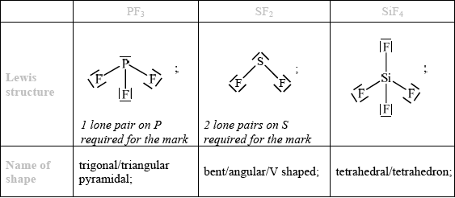
Penalise missing lone pairs on fluorine atoms once in correct structures only.
For Lewis structures candidates are not expected to draw exact shapes of molecules.
Do not allow ECF for wrong Lewis structures.
Accept dots or crosses instead of lines.
Examiners report
This question was generally well answered and many high scores were seen. Common errors included the omission of non-bonding pairs of electrons from fluorine atoms and using S instead of Si as the symbol for the central atom in \({\text{Si}}{{\text{F}}_{\text{4}}}\).The shapes were well known although a significant number of candidates fell into the trap of saying \({\text{S}}{{\text{F}}_{\text{2}}}\) was linear and some thought that \({\text{P}}{{\text{F}}_{\text{3}}}\) was planar. A number of students stated that \({\text{S}}{{\text{F}}_{\text{2}}}\) was bent linear, which is not correct. A few candidates, especially those answering in Spanish did not read the question properly and tried to write the name of the compound instead of its shape.
Intermolecular forces are attractive forces between molecules.
Consider the compounds \({{\text{(C}}{{\text{H}}_{\text{3}}}{\text{)}}_{\text{2}}}{\text{NH}}\) and \({\text{C}}{{\text{H}}_{\text{4}}}\).
Identify the intermolecular forces present in hydrogen iodide in the liquid state, HI(l).
Deduce the full structural formula for both compounds, showing all the bonds present.
\({{\text{(C}}{{\text{H}}_{\text{3}}}{\text{)}}_{\text{2}}}{\text{NH}}\)\(\quad \quad \quad \quad \quad \quad \quad \quad \quad \quad \quad \quad \quad \quad \quad \)\({\text{C}}{{\text{H}}_{\text{4}}}\)
State and explain which compound can form hydrogen bonds with water.
Draw a diagram showing the resulting hydrogen bonds between water and the compound chosen in (ii).
Markscheme
van der Waals’/London/dispersion and dipole-dipole;
Allow abbreviations for van der Waals’ as vdW or for London/dispersion as FDL.
(CH3)2NH :
 ;
;
Lone pair not necessary.
CH4 :
 ;
;
All bonds (including CH bonds of methyl groups) must be shown for both structures.
Penalize missing hydrogens once only.
(CH3)2NH ;
(intermolecular) attraction between hydrogen (atom) in O–H/N–H (polar) bond and (lone pair on) electronegative N/O / hydrogen between two very electronegative elements (nitrogen and oxygen) / OWTTE;
Accept hydrogen bonded to nitrogen which is electronegative/has lone pair.
Do not allow ECF if M1 incorrect.
representative drawing showing hydrogen bond between (CH3)2NH and

Do not penalize if lone pair as part of hydrogen bond is not shown.
Allow any representation of hydrogen bond (for example, dashed lines, dots etc.) which differs from full stick representation of the other covalent bonds in amine and water molecules.
Allow full line if labelled as hydrogen bond.
Lone pairs on oxygen not necessary.
Award mark if two hydrogen bonds drawn between the molecules from the lone pair and the H on the N.
Examiners report
Question 4 a) asked candidates to identify intermolecular forces in HI(l). A quick check of the Data Booklet should reveal an electronegativity difference of 0.5, so HI is polar and has dipole-dipole forces between molecules. Candidates should also be aware that the large number of electrons on iodine (large mass) would contribute to large van der Waals’ forces. Both answers were required for 1 mark. Many candidates only gave one response.
In b) (i) nearly all candidates could correctly draw the full structural formula of CH4 although some showed Lewis structures with dots and crosses. Fewer candidates could sketch the full structural formula of (CH3)2NH and drew the structure of ethylamine instead. Some candidates did not show all the bonds, leaving CH3 groups intact.
In b) (ii) candidates were asked which of these two compounds could form hydrogen bonds with water. A few did not realise that the question referred to the compounds already mentioned. This suggests that for some candidates their examination preparation has not included an understanding of question structures.
Most successfully identified (CH3)2NH but could not explain the hydrogen bond formation for the second mark. Many candidates then managed to draw a diagram of the hydrogen bonds, although some showed their lack of understanding of the nature of a hydrogen bond and drew them as covalent or dative covalent bonds.
Phosphorus tribromide (\({\text{PB}}{{\text{r}}_{\text{3}}}\)) is used to manufacture alprazolam, a drug used to treat anxiety disorders. Methanal (HCHO) is used as a disinfectant.
Consider the following reaction sequence:

Deduce the balanced chemical equation for the reaction between sodium and sulfur. State the electron arrangements of the reactants and product, and explain whether sulfur is oxidized or reduced.
Describe the acid-base character of the oxides of the period 3 elements, Na to Cl. For the compounds sodium oxide and phosphorus(V) oxide, state the balanced chemical equations for the reaction of each oxide with water.
For each of the species \({\text{PB}}{{\text{r}}_{\text{3}}}\) and HCHO:
• deduce the Lewis structure.
• predict the shape and bond angle.
Explain why \({\text{PB}}{{\text{r}}_{\text{3}}}\) is a polar molecule.
State the name of A.
Describe the redox behaviour of chromium with reference to oxidation numbers in the conversion of B to C.
Define the term oxidizing agent and identify the oxidizing agent in the following
reaction.
\[{\text{C}}{{\text{r}}_2}{\text{O}}_7^{2 - }{\text{(aq)}} + {{\text{I}}^ - }{\text{(aq)}} + {\text{8}}{{\text{H}}^ + }{\text{(aq)}} \to {\text{2C}}{{\text{r}}^{3 + }}{\text{(aq)}} + {\text{IO}}_3^ - {\text{(aq)}} + {\text{4}}{{\text{H}}_2}{\text{O(l)}}\]
Markscheme
\({\text{2Na(s)}} + {\text{S(s)}} \to {\text{N}}{{\text{a}}_2}{\text{S(s)}}/{\text{2Na(s)}} + \frac{1}{2}{{\text{S}}_2}{\text{(g)}} \to {\text{N}}{{\text{a}}_2}{\text{S(s)}}/{\text{16Na(s)}} + {{\text{S}}_2}{\text{(s)}} \to {\text{8N}}{{\text{a}}_2}{\text{S(s)}}\);
Ignore state symbols.
Na: 2, 8,1 and S: 2, 8, 6;
\({\text{N}}{{\text{a}}^ + }\): 2, 8 and \({{\text{S}}^{2 - }}\): 2,8,8;
reduced since it has gained electrons / reduced since oxidation number has decreased;
Do not award mark if incorrect oxidation numbers are given.
Na, Mg: basic
Al: amphoteric
Do not accept amphiprotic.
Si to Cl: acidic
Award [2] for all three listed sets correct, [1] for one or two listed sets correct.
Award [1] for stating oxides become more basic towards left/Na and more acidic towards right/Cl.
Do not penalize incorrect formulas of oxides.
\({\text{N}}{{\text{a}}_2}{\text{O(s)}} + {{\text{H}}_2}{\text{O(l)}} \to {\text{2NaOH(aq)}}\);
\({{\text{P}}_4}{{\text{O}}_{10}}{\text{(s)}} + {\text{6}}{{\text{H}}_2}{\text{O(l)}} \to {\text{4}}{{\text{H}}_3}{\text{P}}{{\text{O}}_4}{\text{(aq)}}\);
Ignore state symbols.
Allow P2O3(s) \( + \) 3H2O(l) \( \to \) 2H3PO4(aq).
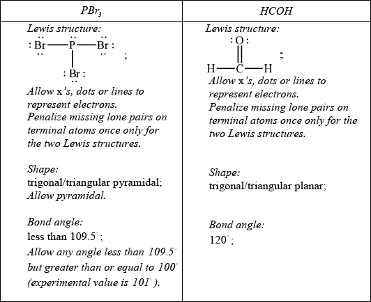
Do not allow ECF in this question from incorrect Lewis structure.
Br more electronegative than P / P–Br bond polar;
bond dipoles do not cancel / there is a net dipole / asymmetric distribution of electron cloud;

Allow polar bonds do not cancel or that it is an asymmetric molecule.
Award [2] for diagram showing net dipole moment as shown.
chromium(III) oxide;
Do not award mark for chromium oxide.
chromium is neither oxidized or reduced since there is no change in oxidation number/+6 to +6;
substance reduced / causes other substance to be oxidized / increase oxidation number of another species / gains electrons / OWTTE;
Oxidizing agent:
\({\text{C}}{{\text{r}}_2}{\text{O}}_7^{2 - }\) / dichromate (ion);
Examiners report
This was one of the least popular questions but those candidates that did attempt it, often performed well. In part (a) the equation was well answered, as were the electron arrangements of sodium and sulfur, but candidates struggled with the electron arrangements of the ions. Also, some forgot to give a reason as to why sulfur is reduced.
The first part on acid-base behaviour was well answered though a few stated that silicon is amphoteric which is incorrect, unfortunately this is an error that has appeared in some IB textbooks. As regards the equations, hydrogen was often given as a product, and although many could successfully write the equation of sodium oxide with water, very few could successfully write the equation with phosphorous (V) oxide.
In part (c) candidates could draw the Lewis structures and generally they could name the shape and suggest the bond angle. However lone pairs were often omitted, especially on oxygen and bromine.
Explaining molecular polarity often was more challenging, and clearly it is poorly understood.
Few candidates correctly used the Roman numeral III.
Many candidates did realise in part (ii) that there was no change in oxidation number of chromium and so no redox reaction.
In part (iii) candidates could define what an oxidizing agent was and most correctly identified dichromate, as the oxidizing agent, however some just incorrectly stated chromium.
Chloroethene, C2H3Cl, is an important organic compound used to manufacture the polymer poly(chloroethene).
Draw the Lewis structure for chloroethene and predict the H–C–Cl bond angle.
Draw a section of poly(chloroethene) containing six carbon atoms.
Outline why the polymerization of alkenes is of economic importance and why the disposal of plastics is a problem.
Chloroethene can be converted to ethanol in two steps. For each step deduce an overall equation for the reaction taking place.
Step 1:
Step 2:
State the reagents and conditions necessary to prepare ethanoic acid from ethanol in the laboratory.
State an equation, including state symbols, for the reaction of ethanoic acid with water. Identify a Brønsted-Lowry acid in the equation and its conjugate base.
Markscheme
 ;
;
Accept lines, dots or crosses for electron pairs.
Lone pairs required on chlorine.
(approximately) 120°;
Accept any bond angle in the range 113–120°.
 ;
;
Brackets not required for mark.
Continuation bonds from each carbon are required.
Cl atoms can be above or below carbon spine or alternating above and below.
plastics are cheap/versatile/a large industry / plastics have many uses / OWTTE;
plastics are not biodegradeable / plastics take up large amounts of space in landfill / pollution caused by burning of plastics / OWTTE;
Do not accept plastics cause litter.
Allow plastics don’t decompose quickly / OWTTE.
(i) Step 1:
\({\text{C}}{{\text{H}}_2}{\text{CHCl}} + {{\text{H}}_2} \to {\text{C}}{{\text{H}}_3}{\text{C}}{{\text{H}}_2}{\text{Cl}}\);
Step 2:
\({\text{C}}{{\text{H}}_3}{\text{C}}{{\text{H}}_2}{\text{Cl}} + {\text{O}}{{\text{H}}^ - } \to {\text{C}}{{\text{H}}_3}{\text{C}}{{\text{H}}_2}{\text{OH}} + {\text{C}}{{\text{l}}^ - }\);
Allow NaOH or NaCl etc. instead of OH– and Cl–.
Allow abbreviated formulas C2H3Cl, C2H5Cl, C2H5OH.
\({{\text{H}}_{\text{2}}}{\text{S}}{{\text{O}}_{\text{4}}}\)/\({{\text{H}}^ + }\)/acidified and \({\text{C}}{{\text{r}}_{\text{2}}}{\text{O}}_{_{\text{7}}}^{2 - }\)/(potassium/sodium) dichromate;
Accept suitable oxidizing agents (e.g. KMnO4 etc.) but only with acid.
Ignore missing or incorrect oxidation states in reagents.
(heat under) reflux;
Second mark can be scored even if reagent is incorrect.
\({\text{C}}{{\text{H}}_3}{\text{COOH(aq)}} + {{\text{H}}_2}{\text{O(l)}} \rightleftharpoons {\text{C}}{{\text{H}}_3}{\text{CO}}{{\text{O}}^ - }{\text{(aq)}} + {{\text{H}}_3}{{\text{O}}^ + }{\text{(aq)}}\)
OR
\({\text{C}}{{\text{H}}_3}{\text{COOH(l)}} + {{\text{H}}_2}{\text{O(l)}} \rightleftharpoons {\text{C}}{{\text{H}}_3}{\text{CO}}{{\text{O}}^ - }{\text{(aq)}} + {{\text{H}}_3}{{\text{O}}^ + }{\text{(aq)}}\)
OR
\({\text{C}}{{\text{H}}_3}{\text{COOH(aq)}} \rightleftharpoons {\text{C}}{{\text{H}}_3}{\text{CO}}{{\text{O}}^ - }{\text{(aq)}} + {{\text{H}}^ + }{\text{(aq)}}\)
correct equation;
state symbols and \( \rightleftharpoons \);
BL acid is \({\text{C}}{{\text{H}}_{\text{3}}}{\text{COOH}}\) and cb is \({\text{C}}{{\text{H}}_{\text{3}}}{\text{CO}}{{\text{O}}^ - }\) / BL acid is \({{\text{H}}_{\text{3}}}{{\text{O}}^ + }\) and cb is \({{\text{H}}_{\text{2}}}{\text{O}}\);
Examiners report
The main G2 comments on this question related to the inclusion of organic chemistry in Section A. It should be noted that ANY Topic can be asked in Section A of P2, and there is no set-formula in relation to question setting. Organic chemistry is an integral part of the IB SL Chemistry programme, and is covered in Topic 10 of the guide (12 hours in total). Hence, candidates should be adequately prepared for questions on this topic, even in Section A. In 3(a), the Lewis structure of chlorethene was generally drawn correctly, though the weaker candidates often omitted the lone pairs on the chlorine. The bond angle was usually predicted, although right angles and 109.5° were often given. Even some of the better candidates explained their choice of bond angle, based on the fact that the double bond occupies more space causing the HCCl bond angle to drop less than 120°.
Many candidates gave double bonds and some forgot to include continuation bonds.
The Aim 8 question in part (iii) was very well answered this session. Almost all candidates scored the disposal problem of plastics mark and many achieved the economics importance mark also.
In general (b) was very poorly answered, again showing a clear weakness in organic chemistry, which is an area of major concern. (i) was poorly done. Candidates who managed a correct reaction for the first step often used water instead of hydroxide ion for the second step.
In general (b) was very poorly answered, again showing a clear weakness in organic chemistry, which is an area of major concern. In (ii), candidates who mentioned dichromate(VI) or permanganate(VIII) often omitted the acid. In addition, reflux was often missing.
In general (b) was very poorly answered, again showing a clear weakness in organic chemistry, which is an area of major concern. In (iii), very few candidates scored all three marks here, even though the question itself was easy. The equation was often correct, but the equilibrium arrow was rarely given. Some candidates did not know the formula for ethanoic acid which was surprising.
Define the term isotopes.
A sample of silicon contains three isotopes.

Calculate the relative atomic mass of silicon using this data.
Describe the structure and bonding in silicon dioxide and carbon dioxide.
Draw the Lewis structure of NH3, state its shape and deduce and explain the H–N–H bond angle in \({\text{N}}{{\text{H}}_{\text{3}}}\).
The graph below shows the boiling points of the hydrides of group 5. Discuss the variation in the boiling points.

Explain, using diagrams, why CO and \({\text{N}}{{\text{O}}_{\text{2}}}\) are polar molecules but \({\text{C}}{{\text{O}}_{\text{2}}}\) is a non-polar molecule.
Markscheme
atoms of the same element with the same atomic number/Z/same number of protons, but different mass numbers/A/different number of neutrons;
\((0.9223 \times 28) + (0.0468 \times 29) + (0.0309 \times 30)\);
28.1/28.11;
Working must be shown to get [2], do not accept 28.09 on its own (given in the data booklet).
Silicon dioxide
single covalent (bonds);
network/giant covalent/ macromolecular / repeating tetrahedral units;
Carbon dioxide
double covalent (bonds);
(simple / discrete) molecular;
Marks may be obtained from suitable structural representations of SiO2 and CO2.
 ;
;
Allow crosses or dots for lone-pair.
trigonal/triangular pyramidal;
(\( \sim \))107° / less than 109.5°;
Do not allow ECF.
LP-BP repulsion \( > \) BP-BP repulsion / one lone pair and three bond pairs / lone pairs/non-bonding pairs repel more than bonding-pairs;
Do not accept repulsion between atoms.
boiling points increase going down the group (from \({\text{P}}{{\text{H}}_{\text{3}}}\) to \({\text{As}}{{\text{H}}_{\text{3}}}\) to \({\text{Sb}}{{\text{H}}_{\text{3}}}\));
\({M_{\text{r}}}\)/number of electrons/molecular size increases down the group;
Accept electron cloud increases down the group for the second marking point.
greater dispersion/London/van der Waal’s forces;
\({\text{N}}{{\text{H}}_{\text{3}}}\)/ammonia has a higher boiling point than expected due to the hydrogen bonding between the molecules;
Do not accept hydrogen bonding alone.
CO:

Award [1] for showing the net dipole moment, or explaining it in words (unsymmetrical distribution of charge).
\(N{O_2}\):

Award [1] for correct representation of the bent shape and [1] for showing the net dipole moment, or explaining it in words (unsymmetrical distribution of charge).
\(C{O_2}\):

Award [1] for correct representation of the linear shape and [1] for showing the two equal but opposite dipoles or explaining it in words (symmetrical distribution of charge).
For all three molecules, allow either arrow or arrow with bar for representation of dipole moment.
Allow correct partial charges instead of the representation of the vector dipole moment.
Ignore incorrect bonds.
Lone pairs not needed.
Examiners report
In general the definition of isotopes was correct in (a) (i), but there are still some candidates who stated “isotopes are elements” and not “atoms of the same element”.
Nearly everybody gave the correct answer of 28.1 for the relative atomic mass of silicon in (ii).
Part (a) (iii) proved to be very difficult for the candidates. There was a lot of confusion about the two molecules; some candidates stated that they had the same double bond. Not many candidates mentioned the giant covalent structure for the silicon dioxide or the simple molecular structure for the carbon dioxide.
In (b) (i) the majority of candidates drew the Lewis structure of the ammonia molecule correctly showing the lone pair of electrons and the correct shape and angle and (ii) was well answered by most candidates.
They realised that \({\text{N}}{{\text{H}}_{\text{3}}}\) had a higher boiling point than \({\text{P}}{{\text{H}}_{\text{3}}}\) because of the intermolecular hydrogen bonding present in \({\text{N}}{{\text{H}}_{\text{3}}}\).
For (c) most answers given here showed diagrams of the three molecules, including distribution of charges, bonding and shapes. Some candidates gave very good answers showing a good understanding of the polarity of molecules.
A sample of magnesium contains three isotopes: magnesium-24, magnesium-25 and magnesium-26, with abundances of 77.44%, 10.00% and 12.56% respectively.
Phosphorus(V) oxide, \({{\text{P}}_{\text{4}}}{{\text{O}}_{{\text{10}}}}{\text{ }}({M_{\text{r}}} = 283.88)\), reacts vigorously with water \(({M_{\text{r}}} = 18.02)\), according to the equation below.
\[{{\text{P}}_{\text{4}}}{{\text{O}}_{{\text{10}}}}{\text{(s)}} + {\text{6}}{{\text{H}}_{\text{2}}}{\text{O(l)}} \to {\text{4}}{{\text{H}}_{\text{3}}}{\text{P}}{{\text{O}}_{\text{4}}}{\text{(aq)}}\]
Calculate the relative atomic mass of this sample of magnesium correct to two decimal places.
Predict the relative atomic radii of the three magnesium isotopes, giving your reasons.
Describe the bonding in magnesium.
State an equation for the reaction of magnesium oxide with water.
A student added 5.00 g of \({{\text{P}}_{\text{4}}}{{\text{O}}_{{\text{10}}}}\) to 1.50 g of water. Determine the limiting reactant, showing your working.
Calculate the mass of phosphoric(V) acid, \({{\text{H}}_{\text{3}}}{\text{P}}{{\text{O}}_{\text{4}}}\), formed in the reaction.
State a balanced equation for the reaction of aqueous \({{\text{H}}_{\text{3}}}{\text{P}}{{\text{O}}_{\text{4}}}\) with excess aqueous sodium hydroxide, including state symbols.
State the formula of the conjugate base of \({{\text{H}}_{\text{3}}}{\text{P}}{{\text{O}}_{\text{4}}}\).
(i) Deduce the Lewis structure of \({\text{PH}}_4^ + \).
(ii) Predict, giving a reason, the bond angle around the phosphorus atom in \({\text{PH}}_4^ + \).
(iii) Predict whether or not the P–H bond is polar, giving a reason for your choice.
Markscheme
\(\left( {\frac{{(77.44 \times 24) + (10.00 \times 25) + (12.56{\text{ }}26)}}{{100}}} \right)\);
24.35;
Award [2] for correct final answer.
Two decimal places are required for M2.
Do not award any marks for 24.31 without showing method (as the value can be copied from the Data Booklet).
same atomic radii / 160 pm;
isotopes only differ by number of neutrons/size of nucleus / radius
determined by electron shells and number of protons / OWTTE;
Accept neutrons do not affect distance of electrons / OWTTE.
(lattice of) positive ions/cations and mobile/free/delocalized electrons;
Accept “sea of electrons” instead of “delocalized electrons”.
Award M1 for a suitable diagram.
electrostatic attraction (between ions and delocalized electrons);
\({\text{MgO}} + {{\text{H}}_{\text{2}}}{\text{O}} \to {\text{Mg(OH}}{{\text{)}}_{\text{2}}}/{\text{M}}{{\text{g}}^{2 + }} + {\text{2O}}{{\text{H}}^ - }\);
Accept reversible arrow.
\({{\text{P}}_4}{{\text{O}}_{10}}{\text{: }}\left( {\frac{{{\text{5.00}}}}{{{\text{283.88}}}} = } \right){\text{ 0.0176 (mol)}}\) and \({{\text{H}}_2}{\text{O: }}\left( {\frac{{{\text{1.50}}}}{{{\text{18.02}}}} = } \right){\text{ 0.0832 (mol)}}\);
\({{\text{H}}_2}{\text{O}}\) is the limiting reactant and reason related to stoichiometry;
\(\frac{{0.0832 \times 4}}{6}/0.0555{\text{ (mol)}}\);
\((0.0555 \times 98.00 = ){\text{ }}5.44{\text{ g}}\);
The unit is needed for M2.
Award [2] for correct final answer.
Do not penalize slight numerical variations due to premature rounding.
\({{\text{H}}_3}{\text{P}}{{\text{O}}_4}{\text{(aq)}} + {\text{3NaOH(aq)}} \to {\text{N}}{{\text{a}}_3}{\text{P}}{{\text{O}}_4}{\text{(aq)}} + {\text{3}}{{\text{H}}_2}{\text{O(l)}}\)
correct products and balancing;
correct state symbols;
Accept valid ionic equations.
\({{\text{H}}_2}{\text{PO}}_4^ - \);
(i) 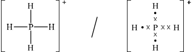 ;
Accept dots, crosses or lines for pairs of electrons.
No need to distinguish the dative covalent bond from the other bonds.
Charge is required for the mark.
Do not penalize missing square brackets.
(ii) \(109^\circ 27'/109.5^\circ /109^\circ \);
4 electron domains/pairs/(negative) charge centres (around central atom/P);
Accept ion is tetrahedral / electron pairs/domains repel each other.
(iii) non-polar and P and H have the same electronegativity / OWTTE;
Accept slightly polar as precise electronegativities of P and H are not identical / OWTTE.
Examiners report
In Part (a) most candidates gained full marks, with the most common error being a failure to quote the answer to the precision specified, but the explanations of deflection, and more particularly detection, in the mass spectrometer were weak. The prediction of relative atomic radii of the isotopes, something that required the application of reason rather than recall, also proved much more challenging. Part (b) revealed that many candidates have a very weak understanding of the metallic bond with many thinking the bonding was ionic.
Even when they knew about a cation lattice and delocalized electrons, a mark was frequently dropped by failing to specify that the attraction between them was electrostatic. Most candidates wrote the correct equation in Part (c), but it is still disturbing that some students at this level cannot write even the most straightforward chemical equation. In Part (d) many students proved capable of carrying out routine stoichiometric calculations to identify the limiting reactant and use the result to find the mass of the product.
Even if the final result was incorrect quite frequently students gained some credit through the application of ECF. Only the better candidates could write an equation for the neutralisation of phosphoric(V) acid and even the routine derivation of a conjugate base from the formula of the acid proved difficult for many. In Part (e) most students could manage the correct Lewis structure, though some lost the mark through omitting the charge. Many candidates also scored well on the shape of the ion and the polarity of the P-H bond.
In Part (a) most candidates gained full marks, with the most common error being a failure to quote the answer to the precision specified, but the explanations of deflection, and more particularly detection, in the mass spectrometer were weak. The prediction of relative atomic radii of the isotopes, something that required the application of reason rather than recall, also proved much more challenging. Part (b) revealed that many candidates have a very weak understanding of the metallic bond with many thinking the bonding was ionic.
Even when they knew about a cation lattice and delocalized electrons, a mark was frequently dropped by failing to specify that the attraction between them was electrostatic. Most candidates wrote the correct equation in Part (c), but it is still disturbing that some students at this level cannot write even the most straightforward chemical equation. In Part (d) many students proved capable of carrying out routine stoichiometric calculations to identify the limiting reactant and use the result to find the mass of the product.
Even if the final result was incorrect quite frequently students gained some credit through the application of ECF. Only the better candidates could write an equation for the neutralisation of phosphoric(V) acid and even the routine derivation of a conjugate base from the formula of the acid proved difficult for many. In Part (e) most students could manage the correct Lewis structure, though some lost the mark through omitting the charge. Many candidates also scored well on the shape of the ion and the polarity of the P-H bond.
In Part (a) most candidates gained full marks, with the most common error being a failure to quote the answer to the precision specified, but the explanations of deflection, and more particularly detection, in the mass spectrometer were weak. The prediction of relative atomic radii of the isotopes, something that required the application of reason rather than recall, also proved much more challenging. Part (b) revealed that many candidates have a very weak understanding of the metallic bond with many thinking the bonding was ionic.
Even when they knew about a cation lattice and delocalized electrons, a mark was frequently dropped by failing to specify that the attraction between them was electrostatic. Most candidates wrote the correct equation in Part (c), but it is still disturbing that some students at this level cannot write even the most straightforward chemical equation. In Part (d) many students proved capable of carrying out routine stoichiometric calculations to identify the limiting reactant and use the result to find the mass of the product.
Even if the final result was incorrect quite frequently students gained some credit through the application of ECF. Only the better candidates could write an equation for the neutralisation of phosphoric(V) acid and even the routine derivation of a conjugate base from the formula of the acid proved difficult for many. In Part (e) most students could manage the correct Lewis structure, though some lost the mark through omitting the charge. Many candidates also scored well on the shape of the ion and the polarity of the P-H bond.
In Part (a) most candidates gained full marks, with the most common error being a failure to quote the answer to the precision specified, but the explanations of deflection, and more particularly detection, in the mass spectrometer were weak. The prediction of relative atomic radii of the isotopes, something that required the application of reason rather than recall, also proved much more challenging. Part (b) revealed that many candidates have a very weak understanding of the metallic bond with many thinking the bonding was ionic.
Even when they knew about a cation lattice and delocalized electrons, a mark was frequently dropped by failing to specify that the attraction between them was electrostatic. Most candidates wrote the correct equation in Part (c), but it is still disturbing that some students at this level cannot write even the most straightforward chemical equation. In Part (d) many students proved capable of carrying out routine stoichiometric calculations to identify the limiting reactant and use the result to find the mass of the product.
Even if the final result was incorrect quite frequently students gained some credit through the application of ECF. Only the better candidates could write an equation for the neutralisation of phosphoric(V) acid and even the routine derivation of a conjugate base from the formula of the acid proved difficult for many. In Part (e) most students could manage the correct Lewis structure, though some lost the mark through omitting the charge. Many candidates also scored well on the shape of the ion and the polarity of the P-H bond.
In Part (a) most candidates gained full marks, with the most common error being a failure to quote the answer to the precision specified, but the explanations of deflection, and more particularly detection, in the mass spectrometer were weak. The prediction of relative atomic radii of the isotopes, something that required the application of reason rather than recall, also proved much more challenging. Part (b) revealed that many candidates have a very weak understanding of the metallic bond with many thinking the bonding was ionic.
Even when they knew about a cation lattice and delocalized electrons, a mark was frequently dropped by failing to specify that the attraction between them was electrostatic. Most candidates wrote the correct equation in Part (c), but it is still disturbing that some students at this level cannot write even the most straightforward chemical equation. In Part (d) many students proved capable of carrying out routine stoichiometric calculations to identify the limiting reactant and use the result to find the mass of the product.
Even if the final result was incorrect quite frequently students gained some credit through the application of ECF. Only the better candidates could write an equation for the neutralisation of phosphoric(V) acid and even the routine derivation of a conjugate base from the formula of the acid proved difficult for many. In Part (e) most students could manage the correct Lewis structure, though some lost the mark through omitting the charge. Many candidates also scored well on the shape of the ion and the polarity of the P-H bond.
In Part (a) most candidates gained full marks, with the most common error being a failure to quote the answer to the precision specified, but the explanations of deflection, and more particularly detection, in the mass spectrometer were weak. The prediction of relative atomic radii of the isotopes, something that required the application of reason rather than recall, also proved much more challenging. Part (b) revealed that many candidates have a very weak understanding of the metallic bond with many thinking the bonding was ionic.
Even when they knew about a cation lattice and delocalized electrons, a mark was frequently dropped by failing to specify that the attraction between them was electrostatic. Most candidates wrote the correct equation in Part (c), but it is still disturbing that some students at this level cannot write even the most straightforward chemical equation. In Part (d) many students proved capable of carrying out routine stoichiometric calculations to identify the limiting reactant and use the result to find the mass of the product.
Even if the final result was incorrect quite frequently students gained some credit through the application of ECF. Only the better candidates could write an equation for the neutralisation of phosphoric(V) acid and even the routine derivation of a conjugate base from the formula of the acid proved difficult for many. In Part (e) most students could manage the correct Lewis structure, though some lost the mark through omitting the charge. Many candidates also scored well on the shape of the ion and the polarity of the P-H bond.
In Part (a) most candidates gained full marks, with the most common error being a failure to quote the answer to the precision specified, but the explanations of deflection, and more particularly detection, in the mass spectrometer were weak. The prediction of relative atomic radii of the isotopes, something that required the application of reason rather than recall, also proved much more challenging. Part (b) revealed that many candidates have a very weak understanding of the metallic bond with many thinking the bonding was ionic.
Even when they knew about a cation lattice and delocalized electrons, a mark was frequently dropped by failing to specify that the attraction between them was electrostatic. Most candidates wrote the correct equation in Part (c), but it is still disturbing that some students at this level cannot write even the most straightforward chemical equation. In Part (d) many students proved capable of carrying out routine stoichiometric calculations to identify the limiting reactant and use the result to find the mass of the product.
Even if the final result was incorrect quite frequently students gained some credit through the application of ECF. Only the better candidates could write an equation for the neutralisation of phosphoric(V) acid and even the routine derivation of a conjugate base from the formula of the acid proved difficult for many. In Part (e) most students could manage the correct Lewis structure, though some lost the mark through omitting the charge. Many candidates also scored well on the shape of the ion and the polarity of the P-H bond.
In Part (a) most candidates gained full marks, with the most common error being a failure to quote the answer to the precision specified, but the explanations of deflection, and more particularly detection, in the mass spectrometer were weak. The prediction of relative atomic radii of the isotopes, something that required the application of reason rather than recall, also proved much more challenging. Part (b) revealed that many candidates have a very weak understanding of the metallic bond with many thinking the bonding was ionic.
Even when they knew about a cation lattice and delocalized electrons, a mark was frequently dropped by failing to specify that the attraction between them was electrostatic. Most candidates wrote the correct equation in Part (c), but it is still disturbing that some students at this level cannot write even the most straightforward chemical equation. In Part (d) many students proved capable of carrying out routine stoichiometric calculations to identify the limiting reactant and use the result to find the mass of the product.
Even if the final result was incorrect quite frequently students gained some credit through the application of ECF. Only the better candidates could write an equation for the neutralisation of phosphoric(V) acid and even the routine derivation of a conjugate base from the formula of the acid proved difficult for many. In Part (e) most students could manage the correct Lewis structure, though some lost the mark through omitting the charge. Many candidates also scored well on the shape of the ion and the polarity of the P-H bond.
In Part (a) most candidates gained full marks, with the most common error being a failure to quote the answer to the precision specified, but the explanations of deflection, and more particularly detection, in the mass spectrometer were weak. The prediction of relative atomic radii of the isotopes, something that required the application of reason rather than recall, also proved much more challenging. Part (b) revealed that many candidates have a very weak understanding of the metallic bond with many thinking the bonding was ionic.
Even when they knew about a cation lattice and delocalized electrons, a mark was frequently dropped by failing to specify that the attraction between them was electrostatic. Most candidates wrote the correct equation in Part (c), but it is still disturbing that some students at this level cannot write even the most straightforward chemical equation. In Part (d) many students proved capable of carrying out routine stoichiometric calculations to identify the limiting reactant and use the result to find the mass of the product.
Even if the final result was incorrect quite frequently students gained some credit through the application of ECF. Only the better candidates could write an equation for the neutralisation of phosphoric(V) acid and even the routine derivation of a conjugate base from the formula of the acid proved difficult for many. In Part (e) most students could manage the correct Lewis structure, though some lost the mark through omitting the charge. Many candidates also scored well on the shape of the ion and the polarity of the P-H bond.
The element boron has two naturally occurring isotopes, \(^{{\text{10}}}{\text{B}}\) and \(^{{\text{11}}}{\text{B}}\).
Define the term isotopes of an element.
Calculate the percentage abundance of each isotope, given that the relative atomic mass of B is 10.81.
Deduce the Lewis structures of \({\text{N}}{{\text{H}}_{\text{3}}}\) and \({\text{B}}{{\text{F}}_{\text{3}}}\).
\[{\text{N}}{{\text{H}}_{\text{3}}}\quad \quad \quad \quad \quad \quad \quad \quad \quad \quad \quad \quad \quad \quad \quad {\text{B}}{{\text{F}}_{\text{3}}}\]
Describe how covalent bonds are formed.
Compare the shapes of the two molecules and explain the difference using valence shell electron pair repulsion theory (VSEPR).
Predict and explain whether the molecules \({\text{N}}{{\text{H}}_{\text{3}}}\) and \({\text{B}}{{\text{F}}_{\text{3}}}\) are polar molecules.
Markscheme
atoms of the same element/with the same number of protons/with same atomic
number but different number of neutrons/mass number/mass;
\(10x + 11(1 - x) = 10.81,{\text{ }}x = 0.19\);
Accept similar method.
10B: 19% and 11B: 81%;

Accept any combination of lines, dots or crosses to represent electron pairs.
sharing of electrons between atoms;
\({\text{N}}{{\text{H}}_{\text{3}}}\): (trigonal/triangular) pyramidal;
\({\text{B}}{{\text{F}}_{\text{3}}}\): trigonal/triangular planar;
\({\text{N}}{{\text{H}}_{\text{3}}}\) has 4 negative centres of charge/three bonding pairs and one lone pair and \({\text{B}}{{\text{F}}_{\text{3}}}\) has 3 negative centres of charge/three bonding pairs / OWTTE;
(bond angles) 107° in \({\text{N}}{{\text{H}}_{\text{3}}}\) and 120° in \({\text{B}}{{\text{F}}_{\text{3}}}\);
Accept 107.5° for NH3.
\({\text{B}}{{\text{F}}_{\text{3}}}\) not polar as no net dipole moment / BF bond polarities cancel each other out / symmetrical distribution of charge;
\({\text{N}}{{\text{H}}_{\text{3}}}\) polar as net dipole moment present / NH bond polarities do not cancel each other out / unsymmetrical distribution of charge;
Accept suitable diagram showing dipole moments.
Do not accept electronegativities cancel out.
Examiners report
Few candidates defined isotopes in terms of atoms.
The percentage abundance was generally done well.
The Lewis structure of \({\text{N}}{{\text{H}}_{\text{3}}}\) was well answered, though many forgot the non-bonding electron pairs of fluorine.
The covalent bond was often just described as electron sharing between non-metals.
Shapes of molecules and angles were often well known, but the explanation using the VSEPR theory was very weak, with many students not being able to describe the bonding and lone pairs in terms of negative charge centres.
Polarity was very poorly understood, with almost no candidates actually talking about polarity of bonds or showing an understanding of the impact of symmetry on the overall dipole moment.
The concentration of a solution of a weak acid, such as ethanedioic acid, can be determined
by titration with a standard solution of sodium hydroxide, NaOH (aq).
Distinguish between a weak acid and a strong acid.
Weak acid:
Strong acid:
Suggest why it is more convenient to express acidity using the pH scale instead of using the concentration of hydrogen ions.
5.00 g of an impure sample of hydrated ethanedioic acid, (COOH)2•2H2O, was dissolved in water to make 1.00 dm3 of solution. 25.0 cm3 samples of this solution were titrated against a 0.100 mol dm-3 solution of sodium hydroxide using a suitable indicator.
(COOH)2 (aq) + 2NaOH (aq) → (COONa)2 (aq) + 2H2O (l)
The mean value of the titre was 14.0 cm3.
(i) Calculate the amount, in mol, of NaOH in 14.0 cm3 of 0.100 mol dm-3 solution.
(ii) Calculate the amount, in mol, of ethanedioic acid in each 25.0 cm3 sample.
(iii) Determine the percentage purity of the hydrated ethanedioic acid sample.
The Lewis (electron dot) structure of the ethanedioate ion is shown below.
![]()
Outline why all the C–O bond lengths in the ethanedioate ion are the same length and suggest a value for them. Use section 10 of the data booklet.
Markscheme
Weak acid: partially dissociated/ionized «in solution/water»
AND
Strong acid: «assumed to be almost» completely/100% dissociated/ionized «in solution/water»
Accept answers relating to pH, conductivity, reactivity if solutions of equal concentrations stated.
«log scale» reduces a wide range of numbers to a small range
OR
simple/easy to use
OR
converts exponential expressions into linear scale/simple numbers
Do not accept “easy for calculations”
i
«n(NaOH) = \(\left( {\frac{{14.0}}{{1000}}} \right)\) dm-3 x 0.100 mol dm-3 =» 1.40 x 10-3 «mol»
ii
«\(\frac{1}{2} \times 1.40 \times {10^{ - 3}} = \) \(7.00 \times {10^{ - 4}}\) «mol»
iii
ALTERNATIVE 1:
«mass of pure hydrated ethanedioic acid in each titration = 7.00 × 10-4 mol × 126.08 g mol-1 =» 0.0883 / 8.83 × 10-2 «g»
mass of sample in each titration = «\(\frac{{25}}{{1000}}\)×5.00g=»0.125«g»
«% purity = \(\frac{{0.0883{\rm{g}}}}{{0.125{\rm{g}}}}\) × 100 =» 70.6 «%»
ALTERNATIVE 2:
«mol of pure hydrated ethanedioic acid in 1 dm3 solution = 7.00 × 10-4 × \(\frac{{1000}}{{25}}\) =» 2.80×10-2 «mol»
«mass of pure hydrated ethanedioic acid in sample = 2.80 × 10-2 mol × 126.08 g mol-1 =» 3.53 «g»
«% purity = \(\frac{{3.53{\rm{g}}}}{{5.00{\rm{g}}}}\) × 100 =» 70.6 «%»
ALTERNATIVE 3:
mol of hydrated ethanedioic acid (assuming sample to be pure) = \(\frac{{5.00{\rm{g}}}}{{126.08{\rm{gmo}}{{\rm{l}}^{ - 1}}}}\) = 0.03966 «mol»
actual amount of hydrated ethanedioic acid = «7.00 × 10-4 × \(\frac{{1000}}{{25}}\) =» 2.80 × 10-2 «mol»
«% purity = \(\frac{{2.80 \times {{10}^{ - 2}}}}{{0.03966}}\) × 100 =» 70.6 «%»
Award suitable part marks for alternative methods.
Award [3] for correct final answer.
Award [2 max] for 50.4 % if anhydrous ethanedioic acid assumed.
electrons delocalized «across the O–C–O system»
OR
resonance occurs
Accept delocalized π-bond(s).
122 «pm» < C–O < 143 «pm»
Accept any answer in the range 123 «pm» to 142 «pm». Accept “bond intermediate between single and double bond” or “bond order 1.5”.
Examiners report
Aspirin, one of the most widely used drugs in the world, can be prepared according to the equation given below.

A student reacted some salicylic acid with excess ethanoic anhydride. Impure solid aspirin was obtained by filtering the reaction mixture. Pure aspirin was obtained by recrystallization. The following table shows the data recorded by the student.

State the names of the three organic functional groups in aspirin.
Determine the amount, in mol, of salicylic acid, \({{\text{C}}_{\text{6}}}{{\text{H}}_{\text{4}}}{\text{(OH)COOH}}\), used.
Calculate the theoretical yield, in g, of aspirin, \({{\text{C}}_{\text{6}}}{{\text{H}}_{\text{4}}}{\text{(OCOC}}{{\text{H}}_{\text{3}}}{\text{)COOH}}\).
Determine the percentage yield of pure aspirin.
State the number of significant figures associated with the mass of pure aspirin obtained, and calculate the percentage uncertainty associated with this mass.
Another student repeated the experiment and obtained an experimental yield of 150%. The teacher checked the calculations and found no errors. Comment on the result.
The following is a three-dimensional computer-generated representation of aspirin.

A third student measured selected bond lengths in aspirin, using this computer program and reported the following data.

The following hypothesis was suggested by the student: “Since all the measured carbon-carbon bond lengths are equal, all the carbon-oxygen bond lengths must also be equal in aspirin. Therefore, the C8–O4 bond length must be 1.4 \( \times \) 10–10 m”. Comment on whether or not this is a valid hypothesis.
The other product of the reaction is ethanoic acid, \({\text{C}}{{\text{H}}_{\text{3}}}{\text{COOH}}\). Define an acid according to the Brønsted-Lowry theory and state the conjugate base of \({\text{C}}{{\text{H}}_{\text{3}}}{\text{COOH}}\).
Brønsted-Lowry definition of an acid:
Conjugate base of \({\text{C}}{{\text{H}}_{\text{3}}}{\text{COOH}}\):
Markscheme
carboxylic acid / carboxyl;
ester;
Do not allow carbonyl / acid / ethanoate / formula(–COOH).
aryl group / benzene ring / phenyl;
\({M_{\text{r}}}{\text{(}}{{\text{C}}_7}{{\text{H}}_6}{{\text{O}}_3}{\text{)}} = {\text{138.13}}\);
\(n = \left( {\frac{{3.15}}{{138.13}} = } \right){\text{ }}2.28 \times {10^{ - 2}}{\text{ (mol)}}\);
Award [2] for the correct final answer.
\({M_{\text{r}}}{\text{(}}{{\text{C}}_9}{{\text{H}}_8}{{\text{O}}_4}{\text{)}} = 180.17\);
\(m = (180.17 \times 2.28 \times {10^{ - 2}} = ){\text{ }}4.11{\text{ (g)}}\);
Accept range 4.10–4.14
Award [2] for the correct final answer.
\({\text{(percentage yield}} = \frac{{2.50}}{{4.11}} \times 100 = ){\text{ }}60.8\% \);
Accept 60–61%.
3;
\({\text{(percentage uncertainty }} = \frac{{0.02}}{{2.50}} \times 100 = {\text{) }}0.80\% \);
Allow 0.8%
sample contaminated with ethanoic acid / aspirin not dry / impure sample;
Accept specific example of a systematic error.
Do not accept error in reading balance/weighing scale.
Do not accept yield greater than 100%.
hypothesis not valid/incorrect;
Accept any of the following for the second mark
C–O and C=O bond lengths will be different;
C2–O3 bond is longer than C8–O4 bond;
C8–O4 bond shorter than C2–O3 bond;
a CO single bond is longer than a CO double bond;
Accept C8–O4 is a double bond hence shorter.
Brønsted-Lowry definition of an acid
proton/H+/hydrogen ion donor;
Conjugate base of CH3COOH
\({\text{C}}{{\text{H}}_3}{\text{CO}}{{\text{O}}^ - }{\text{/C}}{{\text{H}}_3}{\text{CO}}_2^ - \);
Do not accept C2H3O2–/ethanoate.
Examiners report
In (a) Some candidates gave the correct three names of the functional groups; however some candidates gave answers such as alkene, ketone, aldehyde, ether, and carbonyl.
Candidates did not have problems determining the number of moles of salicylic acid used in (b) (i), although a few gave the answer with one significant digit only.
For (ii) the majority of candidates correctly used the value obtained in (i) to calculate the theoretical yield of aspirin.
In (iii) the percentage yield was calculated correctly in most cases.
The calculation of the percentage uncertainty (part (iv) proved to be a little more difficult, but many candidates gave the correct answer of 0.80%.
Part (v) was correctly answered by only a few candidates who stated that aspirin was contaminated or that the aspirin was not dry.
Nearly all the candidates correctly stated that the suggested hypothesis was not valid in (vi), giving the right reasons.
In (vii) most candidates gave the correct definition of an acid according to Brønsted-Lowry theory, although a few defined the acid according to Lewis theory. The conjugate base of the ethanoic acid was not always correct.
Periodic trends enable chemists to predict the behaviour of related compounds.
Chlorine gas, \({\text{C}}{{\text{l}}_{\text{2}}}{\text{(g)}}\), is bubbled through separate solutions of aqueous bromine, \({\text{B}}{{\text{r}}_{\text{2}}}{\text{(aq)}}\), and potassium bromide, \({\text{KBr(aq)}}\).
The hydrogen halides do not show perfect periodicity. A bar chart of boiling points shows that the boiling point of hydrogen fluoride, HF, is much higher than periodic trends would indicate.

\({\text{N}}{{\text{a}}_{\text{2}}}{\text{O}}\) and \({\text{S}}{{\text{O}}_{\text{3}}}\) are two oxides of period 3 elements.
(i) State the equation for the reaction of sodium metal with water.
(ii) Describe two changes that could be observed during the reaction.
(iii) Predict the relative reaction rates of lithium, sodium and potassium with water.
(i) Predict any changes that may be observed in each case.
\({\text{B}}{{\text{r}}_{\text{2}}}{\text{(aq)}}\):
\({\text{KBr(aq)}}\):
(ii) State the half-equations for the reactions that occur.
(i) Explain why the boiling point of HF is much higher than the boiling points of the other hydrogen halides.
(ii) Explain the trend in the boiling points of HCl, HBr and HI.
Explain why the ionic radius of a chloride ion is greater than the atomic radius of a chlorine atom.
\({\text{N}}{{\text{a}}_{\text{2}}}{\text{O}}\) does not conduct electricity in the solid state but it does when molten. Pure \({\text{S}}{{\text{O}}_{\text{3}}}\) does not conduct electricity in either the solid or liquid states.
Explain these facts.
State the acid-base natures of \({\text{N}}{{\text{a}}_{\text{2}}}{\text{O}}\) and \({\text{S}}{{\text{O}}_{\text{3}}}\).
State equations for the reactions of \({\text{N}}{{\text{a}}_{\text{2}}}{\text{O}}\) and \({\text{S}}{{\text{O}}_{\text{3}}}\) with water.
Markscheme
(i) \({\text{2Na(s)}} + {\text{2}}{{\text{H}}_2}{\text{O(l)}} \to {{\text{H}}_2}{\text{(g)}} + {\text{2NaOH(aq)}}/{\text{Na(s)}} + {{\text{H}}_2}{\text{O(l)}} \to \frac{1}{2}{{\text{H}}_2}{\text{(g)}} + {\text{NaOH(aq)}}\);
Ignore state symbols.
(ii) bubbles/gas produced / crackling / fizzing / OWTTE;
temperature (of water) increases;
sodium floats on water / melts into a ball / disappears / OWTTE;
sharp smell;
small yellow sparks;
(iii) K > Na > Li;
(i) \({\text{B}}{{\text{r}}_{\text{2}}}{\text{(aq)}}\): no change;
\({\text{KBr(aq)}}\): colour change / from colourless to red/yellow/orange/brown;
(ii) \({\text{2B}}{{\text{r}}^ - }{\text{(aq)}} \to {\text{B}}{{\text{r}}_2}{\text{(aq)}} + {\text{2}}{{\text{e}}^ - }\);
\({\text{C}}{{\text{l}}_2}{\text{(g)}} + {\text{2}}{{\text{e}}^ - } \to {\text{2C}}{{\text{l}}^ - }{\text{(aq)}}\);
Ignore state symbols.
Accept e instead of e–.
(i) HF has hydrogen bonds (between molecules);
(ii) strength of van der Waals’/London/dispersion forces increases;
as mass/size/number of electrons of halogen atom/molecule increases;
\({\text{C}}{{\text{l}}^ - }\) has an extra electron so extra repulsions push electrons farther apart / \({\text{C}}{{\text{l}}^ - }\) and Cl have same number of occupied electron shells and \({\text{C}}{{\text{l}}^ - }\) has one more electron than protons / Cl has 17 electrons and 17 protons and \({\text{C}}{{\text{l}}^ - }\) has 18 electrons and 17 protons so electrons are held less tightly / Cl 2, 8, 7 and \({\text{C}}{{\text{l}}^ - }\) 2, 8, 8 so electrons are held less tightly;
\({\text{N}}{{\text{a}}_{\text{2}}}{\text{O}}\) ionic and \({\text{S}}{{\text{O}}_{\text{3}}}\) covalent;
\({\text{N}}{{\text{a}}_{\text{2}}}{\text{O}}\) has ions which are free to move in the liquid state;
\({\text{S}}{{\text{O}}_{\text{3}}}\) has no free charged particles;
Accept “no free moving ions” / “no delocalized electrons”.
\({\text{N}}{{\text{a}}_{\text{2}}}{\text{O}}\) basic and \({\text{S}}{{\text{O}}_{\text{3}}}\) acidic;
\({\text{N}}{{\text{a}}_2}{\text{O(s)}} + {{\text{H}}_2}{\text{O(l)}} \to {\text{2NaOH(aq)}}\);
\({\text{S}}{{\text{O}}_3}{\text{(g)}} + {{\text{H}}_2}{\text{O(l)}} \to {{\text{H}}_2}{\text{S}}{{\text{O}}_4}{\text{(aq)}}\);
Ignore state symbols.
Examiners report
Question 5 was a popular choice in Section B. There were many candidates who stated a correct equation for the reaction of sodium with water, but many gave \({\text{N}}{{\text{a}}_{\text{2}}}{\text{O}}\) instead of NaOH as a product in (a)(i). Candidates could frequently state one observation of this reaction in (a)(ii) and most candidates correctly predicted relative reaction rates for lithium, sodium and potassium with water in (a)(iii). Question (b)(i) required candidates to predict changes which may be observed when chlorine gas is bubbled through separate solutions of aqueous bromine and potassium bromide. Very few candidates correctly predicted both of the changes observed and there was some confusion between observations and statements of the expected reactions. In (b)(ii) many candidates gave the complete equation between chlorine and bromide ions and not the half-equations as requested. Part (c) referred to the periodicity of boiling points of hydrogen halides. Most candidates referred to the hydrogen bonding between HF molecules as the reason for the high boiling point of HF in (c)(i) although some said that the bond in H–F is a hydrogen bond and so hard to break, indicating a lack of understanding of what is happening on a molecular level when boiling occurs. Many had difficulties explaining the trend of the boiling points of the hydrogen halides, often referring to the elements themselves in (c)(ii). Only the better candidates referred to the strength of van der Waals’ forces increasing with increasing electrons or molecular mass. In part (d) very few candidates could explain why the ionic radius of a chloride ion is greater than the atomic radius of a chlorine atom, forgetting the extra repulsion between the electrons. Some answered in terms of the nuclear charge. Many simply stated that non-metal ions are larger than the non-metal atom, suggesting that the command terms are not well understood. Many candidates did not mention that \({\text{N}}{{\text{a}}_{\text{2}}}{\text{O}}\) has an ionic bond and \({\text{S}}{{\text{O}}_{\text{3}}}\) a covalent one in (e)(i) and many candidates also had problems explaining why \({\text{N}}{{\text{a}}_{\text{2}}}{\text{O}}\) conducts electricity when molten, referring to free moving electrons instead of ions. A surprising number of candidates seemed to think that as \({\text{N}}{{\text{a}}_{\text{2}}}{\text{O}}\) melts, the sodium reverts to its metallic structure and hence is an electrical conductor. Several others referred to electrons being able to move through the ions which were no longer fixed in position. Several candidates could not state the acid-base nature of \({\text{N}}{{\text{a}}_{\text{2}}}{\text{O}}\) and \({\text{S}}{{\text{O}}_{\text{3}}}\), although many could state their equations with water in (e)(iii). Many candidates correctly identified a source of \({\text{S}}{{\text{O}}_{\text{3}}}\) in (e)(iv) and those who did not often had a vague answer such as engine or factory. Most candidates correctly named acid rain as the environmental effect of sulfur trioxide pollution. Some respondents felt that this was beyond the scope of the syllabus but there is clear reference to these effects in 3.3.2 and 8.3.1.
Question 5 was a popular choice in Section B. There were many candidates who stated a correct equation for the reaction of sodium with water, but many gave \({\text{N}}{{\text{a}}_{\text{2}}}{\text{O}}\) instead of NaOH as a product in (a)(i). Candidates could frequently state one observation of this reaction in (a)(ii) and most candidates correctly predicted relative reaction rates for lithium, sodium and potassium with water in (a)(iii). Question (b)(i) required candidates to predict changes which may be observed when chlorine gas is bubbled through separate solutions of aqueous bromine and potassium bromide. Very few candidates correctly predicted both of the changes observed and there was some confusion between observations and statements of the expected reactions. In (b)(ii) many candidates gave the complete equation between chlorine and bromide ions and not the half-equations as requested. Part (c) referred to the periodicity of boiling points of hydrogen halides. Most candidates referred to the hydrogen bonding between HF molecules as the reason for the high boiling point of HF in (c)(i) although some said that the bond in H–F is a hydrogen bond and so hard to break, indicating a lack of understanding of what is happening on a molecular level when boiling occurs. Many had difficulties explaining the trend of the boiling points of the hydrogen halides, often referring to the elements themselves in (c)(ii). Only the better candidates referred to the strength of van der Waals’ forces increasing with increasing electrons or molecular mass. In part (d) very few candidates could explain why the ionic radius of a chloride ion is greater than the atomic radius of a chlorine atom, forgetting the extra repulsion between the electrons. Some answered in terms of the nuclear charge. Many simply stated that non-metal ions are larger than the non-metal atom, suggesting that the command terms are not well understood. Many candidates did not mention that \({\text{N}}{{\text{a}}_{\text{2}}}{\text{O}}\) has an ionic bond and \({\text{S}}{{\text{O}}_{\text{3}}}\) a covalent one in (e)(i) and many candidates also had problems explaining why \({\text{N}}{{\text{a}}_{\text{2}}}{\text{O}}\) conducts electricity when molten, referring to free moving electrons instead of ions. A surprising number of candidates seemed to think that as \({\text{N}}{{\text{a}}_{\text{2}}}{\text{O}}\) melts, the sodium reverts to its metallic structure and hence is an electrical conductor. Several others referred to electrons being able to move through the ions which were no longer fixed in position. Several candidates could not state the acid-base nature of \({\text{N}}{{\text{a}}_{\text{2}}}{\text{O}}\) and \({\text{S}}{{\text{O}}_{\text{3}}}\), although many could state their equations with water in (e)(iii). Many candidates correctly identified a source of \({\text{S}}{{\text{O}}_{\text{3}}}\) in (e)(iv) and those who did not often had a vague answer such as engine or factory. Most candidates correctly named acid rain as the environmental effect of sulfur trioxide pollution. Some respondents felt that this was beyond the scope of the syllabus but there is clear reference to these effects in 3.3.2 and 8.3.1.
Question 5 was a popular choice in Section B. There were many candidates who stated a correct equation for the reaction of sodium with water, but many gave \({\text{N}}{{\text{a}}_{\text{2}}}{\text{O}}\) instead of NaOH as a product in (a)(i). Candidates could frequently state one observation of this reaction in (a)(ii) and most candidates correctly predicted relative reaction rates for lithium, sodium and potassium with water in (a)(iii). Question (b)(i) required candidates to predict changes which may be observed when chlorine gas is bubbled through separate solutions of aqueous bromine and potassium bromide. Very few candidates correctly predicted both of the changes observed and there was some confusion between observations and statements of the expected reactions. In (b)(ii) many candidates gave the complete equation between chlorine and bromide ions and not the half-equations as requested. Part (c) referred to the periodicity of boiling points of hydrogen halides. Most candidates referred to the hydrogen bonding between HF molecules as the reason for the high boiling point of HF in (c)(i) although some said that the bond in H–F is a hydrogen bond and so hard to break, indicating a lack of understanding of what is happening on a molecular level when boiling occurs. Many had difficulties explaining the trend of the boiling points of the hydrogen halides, often referring to the elements themselves in (c)(ii). Only the better candidates referred to the strength of van der Waals’ forces increasing with increasing electrons or molecular mass. In part (d) very few candidates could explain why the ionic radius of a chloride ion is greater than the atomic radius of a chlorine atom, forgetting the extra repulsion between the electrons. Some answered in terms of the nuclear charge. Many simply stated that non-metal ions are larger than the non-metal atom, suggesting that the command terms are not well understood. Many candidates did not mention that \({\text{N}}{{\text{a}}_{\text{2}}}{\text{O}}\) has an ionic bond and \({\text{S}}{{\text{O}}_{\text{3}}}\) a covalent one in (e)(i) and many candidates also had problems explaining why \({\text{N}}{{\text{a}}_{\text{2}}}{\text{O}}\) conducts electricity when molten, referring to free moving electrons instead of ions. A surprising number of candidates seemed to think that as \({\text{N}}{{\text{a}}_{\text{2}}}{\text{O}}\) melts, the sodium reverts to its metallic structure and hence is an electrical conductor. Several others referred to electrons being able to move through the ions which were no longer fixed in position. Several candidates could not state the acid-base nature of \({\text{N}}{{\text{a}}_{\text{2}}}{\text{O}}\) and \({\text{S}}{{\text{O}}_{\text{3}}}\), although many could state their equations with water in (e)(iii). Many candidates correctly identified a source of \({\text{S}}{{\text{O}}_{\text{3}}}\) in (e)(iv) and those who did not often had a vague answer such as engine or factory. Most candidates correctly named acid rain as the environmental effect of sulfur trioxide pollution. Some respondents felt that this was beyond the scope of the syllabus but there is clear reference to these effects in 3.3.2 and 8.3.1.
Question 5 was a popular choice in Section B. There were many candidates who stated a correct equation for the reaction of sodium with water, but many gave \({\text{N}}{{\text{a}}_{\text{2}}}{\text{O}}\) instead of NaOH as a product in (a)(i). Candidates could frequently state one observation of this reaction in (a)(ii) and most candidates correctly predicted relative reaction rates for lithium, sodium and potassium with water in (a)(iii). Question (b)(i) required candidates to predict changes which may be observed when chlorine gas is bubbled through separate solutions of aqueous bromine and potassium bromide. Very few candidates correctly predicted both of the changes observed and there was some confusion between observations and statements of the expected reactions. In (b)(ii) many candidates gave the complete equation between chlorine and bromide ions and not the half-equations as requested. Part (c) referred to the periodicity of boiling points of hydrogen halides. Most candidates referred to the hydrogen bonding between HF molecules as the reason for the high boiling point of HF in (c)(i) although some said that the bond in H–F is a hydrogen bond and so hard to break, indicating a lack of understanding of what is happening on a molecular level when boiling occurs. Many had difficulties explaining the trend of the boiling points of the hydrogen halides, often referring to the elements themselves in (c)(ii). Only the better candidates referred to the strength of van der Waals’ forces increasing with increasing electrons or molecular mass. In part (d) very few candidates could explain why the ionic radius of a chloride ion is greater than the atomic radius of a chlorine atom, forgetting the extra repulsion between the electrons. Some answered in terms of the nuclear charge. Many simply stated that non-metal ions are larger than the non-metal atom, suggesting that the command terms are not well understood. Many candidates did not mention that \({\text{N}}{{\text{a}}_{\text{2}}}{\text{O}}\) has an ionic bond and \({\text{S}}{{\text{O}}_{\text{3}}}\) a covalent one in (e)(i) and many candidates also had problems explaining why \({\text{N}}{{\text{a}}_{\text{2}}}{\text{O}}\) conducts electricity when molten, referring to free moving electrons instead of ions. A surprising number of candidates seemed to think that as \({\text{N}}{{\text{a}}_{\text{2}}}{\text{O}}\) melts, the sodium reverts to its metallic structure and hence is an electrical conductor. Several others referred to electrons being able to move through the ions which were no longer fixed in position. Several candidates could not state the acid-base nature of \({\text{N}}{{\text{a}}_{\text{2}}}{\text{O}}\) and \({\text{S}}{{\text{O}}_{\text{3}}}\), although many could state their equations with water in (e)(iii). Many candidates correctly identified a source of \({\text{S}}{{\text{O}}_{\text{3}}}\) in (e)(iv) and those who did not often had a vague answer such as engine or factory. Most candidates correctly named acid rain as the environmental effect of sulfur trioxide pollution. Some respondents felt that this was beyond the scope of the syllabus but there is clear reference to these effects in 3.3.2 and 8.3.1.
Question 5 was a popular choice in Section B. There were many candidates who stated a correct equation for the reaction of sodium with water, but many gave \({\text{N}}{{\text{a}}_{\text{2}}}{\text{O}}\) instead of NaOH as a product in (a)(i). Candidates could frequently state one observation of this reaction in (a)(ii) and most candidates correctly predicted relative reaction rates for lithium, sodium and potassium with water in (a)(iii). Question (b)(i) required candidates to predict changes which may be observed when chlorine gas is bubbled through separate solutions of aqueous bromine and potassium bromide. Very few candidates correctly predicted both of the changes observed and there was some confusion between observations and statements of the expected reactions. In (b)(ii) many candidates gave the complete equation between chlorine and bromide ions and not the half-equations as requested. Part (c) referred to the periodicity of boiling points of hydrogen halides. Most candidates referred to the hydrogen bonding between HF molecules as the reason for the high boiling point of HF in (c)(i) although some said that the bond in H–F is a hydrogen bond and so hard to break, indicating a lack of understanding of what is happening on a molecular level when boiling occurs. Many had difficulties explaining the trend of the boiling points of the hydrogen halides, often referring to the elements themselves in (c)(ii). Only the better candidates referred to the strength of van der Waals’ forces increasing with increasing electrons or molecular mass. In part (d) very few candidates could explain why the ionic radius of a chloride ion is greater than the atomic radius of a chlorine atom, forgetting the extra repulsion between the electrons. Some answered in terms of the nuclear charge. Many simply stated that non-metal ions are larger than the non-metal atom, suggesting that the command terms are not well understood. Many candidates did not mention that \({\text{N}}{{\text{a}}_{\text{2}}}{\text{O}}\) has an ionic bond and \({\text{S}}{{\text{O}}_{\text{3}}}\) a covalent one in (e)(i) and many candidates also had problems explaining why \({\text{N}}{{\text{a}}_{\text{2}}}{\text{O}}\) conducts electricity when molten, referring to free moving electrons instead of ions. A surprising number of candidates seemed to think that as \({\text{N}}{{\text{a}}_{\text{2}}}{\text{O}}\) melts, the sodium reverts to its metallic structure and hence is an electrical conductor. Several others referred to electrons being able to move through the ions which were no longer fixed in position. Several candidates could not state the acid-base nature of \({\text{N}}{{\text{a}}_{\text{2}}}{\text{O}}\) and \({\text{S}}{{\text{O}}_{\text{3}}}\), although many could state their equations with water in (e)(iii). Many candidates correctly identified a source of \({\text{S}}{{\text{O}}_{\text{3}}}\) in (e)(iv) and those who did not often had a vague answer such as engine or factory. Most candidates correctly named acid rain as the environmental effect of sulfur trioxide pollution. Some respondents felt that this was beyond the scope of the syllabus but there is clear reference to these effects in 3.3.2 and 8.3.1.
Question 5 was a popular choice in Section B. There were many candidates who stated a correct equation for the reaction of sodium with water, but many gave \({\text{N}}{{\text{a}}_{\text{2}}}{\text{O}}\) instead of NaOH as a product in (a)(i). Candidates could frequently state one observation of this reaction in (a)(ii) and most candidates correctly predicted relative reaction rates for lithium, sodium and potassium with water in (a)(iii). Question (b)(i) required candidates to predict changes which may be observed when chlorine gas is bubbled through separate solutions of aqueous bromine and potassium bromide. Very few candidates correctly predicted both of the changes observed and there was some confusion between observations and statements of the expected reactions. In (b)(ii) many candidates gave the complete equation between chlorine and bromide ions and not the half-equations as requested. Part (c) referred to the periodicity of boiling points of hydrogen halides. Most candidates referred to the hydrogen bonding between HF molecules as the reason for the high boiling point of HF in (c)(i) although some said that the bond in H–F is a hydrogen bond and so hard to break, indicating a lack of understanding of what is happening on a molecular level when boiling occurs. Many had difficulties explaining the trend of the boiling points of the hydrogen halides, often referring to the elements themselves in (c)(ii). Only the better candidates referred to the strength of van der Waals’ forces increasing with increasing electrons or molecular mass. In part (d) very few candidates could explain why the ionic radius of a chloride ion is greater than the atomic radius of a chlorine atom, forgetting the extra repulsion between the electrons. Some answered in terms of the nuclear charge. Many simply stated that non-metal ions are larger than the non-metal atom, suggesting that the command terms are not well understood. Many candidates did not mention that \({\text{N}}{{\text{a}}_{\text{2}}}{\text{O}}\) has an ionic bond and \({\text{S}}{{\text{O}}_{\text{3}}}\) a covalent one in (e)(i) and many candidates also had problems explaining why \({\text{N}}{{\text{a}}_{\text{2}}}{\text{O}}\) conducts electricity when molten, referring to free moving electrons instead of ions. A surprising number of candidates seemed to think that as \({\text{N}}{{\text{a}}_{\text{2}}}{\text{O}}\) melts, the sodium reverts to its metallic structure and hence is an electrical conductor. Several others referred to electrons being able to move through the ions which were no longer fixed in position. Several candidates could not state the acid-base nature of \({\text{N}}{{\text{a}}_{\text{2}}}{\text{O}}\) and \({\text{S}}{{\text{O}}_{\text{3}}}\), although many could state their equations with water in (e)(iii). Many candidates correctly identified a source of \({\text{S}}{{\text{O}}_{\text{3}}}\) in (e)(iv) and those who did not often had a vague answer such as engine or factory. Most candidates correctly named acid rain as the environmental effect of sulfur trioxide pollution. Some respondents felt that this was beyond the scope of the syllabus but there is clear reference to these effects in 3.3.2 and 8.3.1.
Question 5 was a popular choice in Section B. There were many candidates who stated a correct equation for the reaction of sodium with water, but many gave \({\text{N}}{{\text{a}}_{\text{2}}}{\text{O}}\) instead of NaOH as a product in (a)(i). Candidates could frequently state one observation of this reaction in (a)(ii) and most candidates correctly predicted relative reaction rates for lithium, sodium and potassium with water in (a)(iii). Question (b)(i) required candidates to predict changes which may be observed when chlorine gas is bubbled through separate solutions of aqueous bromine and potassium bromide. Very few candidates correctly predicted both of the changes observed and there was some confusion between observations and statements of the expected reactions. In (b)(ii) many candidates gave the complete equation between chlorine and bromide ions and not the half-equations as requested. Part (c) referred to the periodicity of boiling points of hydrogen halides. Most candidates referred to the hydrogen bonding between HF molecules as the reason for the high boiling point of HF in (c)(i) although some said that the bond in H–F is a hydrogen bond and so hard to break, indicating a lack of understanding of what is happening on a molecular level when boiling occurs. Many had difficulties explaining the trend of the boiling points of the hydrogen halides, often referring to the elements themselves in (c)(ii). Only the better candidates referred to the strength of van der Waals’ forces increasing with increasing electrons or molecular mass. In part (d) very few candidates could explain why the ionic radius of a chloride ion is greater than the atomic radius of a chlorine atom, forgetting the extra repulsion between the electrons. Some answered in terms of the nuclear charge. Many simply stated that non-metal ions are larger than the non-metal atom, suggesting that the command terms are not well understood. Many candidates did not mention that \({\text{N}}{{\text{a}}_{\text{2}}}{\text{O}}\) has an ionic bond and \({\text{S}}{{\text{O}}_{\text{3}}}\) a covalent one in (e)(i) and many candidates also had problems explaining why \({\text{N}}{{\text{a}}_{\text{2}}}{\text{O}}\) conducts electricity when molten, referring to free moving electrons instead of ions. A surprising number of candidates seemed to think that as \({\text{N}}{{\text{a}}_{\text{2}}}{\text{O}}\) melts, the sodium reverts to its metallic structure and hence is an electrical conductor. Several others referred to electrons being able to move through the ions which were no longer fixed in position. Several candidates could not state the acid-base nature of \({\text{N}}{{\text{a}}_{\text{2}}}{\text{O}}\) and \({\text{S}}{{\text{O}}_{\text{3}}}\), although many could state their equations with water in (e)(iii). Many candidates correctly identified a source of \({\text{S}}{{\text{O}}_{\text{3}}}\) in (e)(iv) and those who did not often had a vague answer such as engine or factory. Most candidates correctly named acid rain as the environmental effect of sulfur trioxide pollution. Some respondents felt that this was beyond the scope of the syllabus but there is clear reference to these effects in 3.3.2 and 8.3.1.
Consider the following reactions.

An important environmental consideration is the appropriate disposal of cleaning solvents. An environmental waste treatment company analysed a cleaning solvent, J, and found it to contain the elements carbon, hydrogen and chlorine only. The chemical composition of J was determined using different analytical chemistry techniques.
Combustion Reaction:
Combustion of 1.30 g of J gave 0.872 g \({\text{C}}{{\text{O}}_{\text{2}}}\) and 0.089 g \({{\text{H}}_{\text{2}}}{\text{O}}\).
Precipitation Reaction with AgNO3(aq):
0.535 g of J gave 1.75 g AgCl precipitate.
One example of a homologous series is the alcohols. Describe two features of a homologous series.
The IUPAC name of X is 4-methylpentan-1-ol. State the IUPAC names of Y and Z.
Y:
Z:
State the reagents and reaction conditions used to convert X to Y and X to Z.
X to Y:
X to Z:
Z is an example of a weak acid. State what is meant by the term weak acid.
Discuss the volatility of Y compared to Z.
Determine the percentage by mass of carbon and hydrogen in J, using the combustion data.
Determine the percentage by mass of chlorine in J, using the precipitation data.
The molar mass was determined to be \({\text{131.38 g}}\,{\text{mo}}{{\text{l}}^{ - 1}}\). Deduce the molecular formula of J.
Markscheme
same functional group;
successive/neighbouring members differ by \({\text{C}}{{\text{H}}_{\text{2}}}\);
same general formula;
similar chemical properties;
gradation in physical properties;
Y: 4-methylpentanal;
Z: 4-methylpentanoic acid;
Award [1] if student has correct endings for both molecules but has used incorrect stem.
For both reactions reagents:
named suitable acidified oxidizing agent;
Suitable oxidizing agents are potassium dichromate(VI)/K2Cr2O7 / sodium dichromate(VI)/Na2Cr2O7 / dichromate/Cr2O72– / potassium manganate(VII)/potassium permanganate/KMnO4 / permanganate/manganate(VII)/MnO4–.
Accept H+/H2SO4 instead of sulfuric acid and acidified.
Allow potassium dichromate or sodium dichromate (i.e. without (VI)) or potassium manganate (i.e. without (VII).
Conditions:
distillation for X to Y and reflux for X to Z;
Award [1] if correct reagents and conditions identified for one process only.
acid partially dissociates/ionizes;
Y more volatile than Z;
hydrogen bonding in carboxylic acid/Z;
Accept converse argument.
\(\left( {\left( {\frac{{2 \times 1.01}}{{18.02}}} \right)(0.089) = } \right){\text{ }}1.0 \times {10^{ - 2}}{\text{ g H}}\) and \(\left( {\left( {\frac{{12.01}}{{44.01}}} \right)(0.872) = } \right){\text{ }}2.38 \times {10^{ - 1}}{\text{ g C}}\);
\(\left( {\left( {\frac{{0.238}}{{1.30}}} \right)(100) = } \right){\text{ }}18.3\% {\text{ C}}\);
\(\left( {\frac{{1.0 \times {{10}^{ - 2}}}}{{1.30}}} \right)(100) = 0.77\% {\text{ H}}\);
Award [3] for correct final answer of 18.3% C and 0.77% H without working.
Allow whole numbers for molar masses.
\(\left( {(1.75)\left( {\frac{{35.45}}{{143.32}}} \right) = } \right){\text{ }}0.433{\text{ g (Cl)}}\) and \(\left( {\left( {\frac{{0.433}}{{0.535}}} \right)(100) = } \right){\text{ }}80.9\% {\text{ (Cl)}}\);
Allow whole numbers for molar masses.
\(\left( {\frac{{18.3}}{{12.01}}} \right) = 1.52{\text{ mol C}}\) and \(\left( {\frac{{0.77}}{{1.01}}} \right) = 0.76{\text{ mol H}}\) and \(\left( {\frac{{80.9}}{{35.45}}} \right) = 2.28{\text{ mol Cl}}\);
Allow whole numbers for atomic masses.
Empirical formula \( = {{\text{C}}_2}{\text{HC}}{{\text{l}}_3}\);
Award [2] for correct empirical formula without working.
\({M_{\text{r}}} = (24.02 + 1.01 + 106.35) = 131.38\), so molecular formula is \({{\text{C}}_2}{\text{HC}}{{\text{l}}_3}\);
Award [3] for correct final answer without working.
Allow whole numbers for atomic masses.
Examiners report
Part (a) which asked for a description of a homologous series was generally very well answered.
1 out of 2 marks were commonly awarded, as students had the incorrect prefix or made errors such as 4-methylpentan-1-al instead of 4-methylpentanal.
Most candidates knew the reagents for the conversions of the alcohol but only the best candidates also knew the conditions.
Explanations of a weak acid were well done.
Explanations of volatility were well done.
Part (d) was a moles calculation based on experimental data, and was done very well by some of those that attempted it. However many candidates could not get through it and some left it blank.
Part (d) was a moles calculation based on experimental data, and was done very well by some of those that attempted it. However many candidates could not get through it and some left it blank.
Part (d) was a moles calculation based on experimental data, and was done very well by some of those that attempted it. However many candidates could not get through it and some left it blank.
Alkenes are an economically and chemically important family of organic compounds.
The reaction of alkenes with bromine water provides a test for unsaturation in the laboratory. Describe the colour change when bromine water is added to chloroethene.
Deduce the Lewis structure of chloroethene and identify the formula of the repeating unit of the polymer poly(chloroethene).
(i) Deduce the structural formulas of the two alcohol isomers of molecular formula \({{\text{C}}_{\text{3}}}{{\text{H}}_{\text{8}}}{\text{O}}\). Name each isomer and identify each as either a primary or a secondary alcohol.
(ii) Oxidation of the alcohol isomers lead to the formation of different organic products. Determine the structures of the organic products formed from the oxidation of each alcohol isomer in (c) (i) above and list the conditions required to obtain the different products.
Markscheme
colour change from yellow/orange/rust colour/red/brown to colourless;
No mark for change to clear, or for decolourized with no reference to original colour.
Chloroethene:
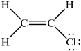 ;
No mark if the lone pairs missing on Cl.
Accept lines, dots or crosses for e– pairs.
Poly(chloroethene):
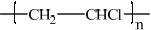 ;
n and square brackets are not required.
Continuation bonds must be shown.
(i) \({\text{C}}{{\text{H}}_3}{\text{C}}{{\text{H}}_2}{\text{C}}{{\text{H}}_2}{\text{OH}}\), propan-1-ol/1-propanol;
\({\text{C}}{{\text{H}}_3}{\text{CH(OH)C}}{{\text{H}}_3}\), propan-2-ol/2-propanol;
Need both formula and name for mark.
Accept either condensed or full structural formulas.
CH3CH2CH2OH: primary and CH3CH(OH)CH3: secondary;
(ii) \({\text{C}}{{\text{H}}_3}{\text{C}}{{\text{H}}_2}{\text{CHO}}\);
\({\text{C}}{{\text{H}}_3}{\text{C}}{{\text{H}}_2}{\text{COOH}}\);
\({\text{C}}{{\text{H}}_3}{\text{COC}}{{\text{H}}_3}\);
Accept either condensed or full structural formulas.
from propan-1-ol: \({\text{C}}{{\text{H}}_3}{\text{C}}{{\text{H}}_2}{\text{CHO}}\) (propanal) obtained by distillation (as product is formed);
propan-1-ol gives \({\text{C}}{{\text{H}}_3}{\text{C}}{{\text{H}}_2}{\text{COOH}}\) (propanoic acid) by (heating under) reflux;
Award [1] if CH3CH2CHO and CH3CH2COOH identified but conditions not
given/incorrect.
propan-2-ol gives \({\text{C}}{{\text{H}}_3}{\text{COC}}{{\text{H}}_3}\) by (heating under) reflux;
Examiners report
Although this was the least popular question it was generally accessible with candidates often scoring high marks. The colour change when bromine water is added to an alkene was well answered by most candidates although some either did not state the colour of bromine or stated that it becomes clear, rather than colourless.
Most candidates deduced the correct Lewis structure of chloroethene although some did not include the lone electron pairs on the Cl atom. The formula of the repeating unit of the polymer poly(chloroethene) was generally done well.
(c) was generally well answered.
The most common error in (c) (i) was just giving ‘propanol’ with no reference to the position of the OH group. The structures of the organic products were well known although the experimental conditions needed to extract the products were less familiar.
Carbon and silicon belong to the same group of the periodic table.
Both silicon and carbon form oxides.
State the period numbers of both carbon and silicon.
Describe and compare three features of the structure and bonding in the three allotropes of carbon: diamond, graphite and \({{\text{C}}_{{\text{60}}}}\) fullerene.
Draw the Lewis structure of \({\text{C}}{{\text{O}}_{\text{2}}}\) and predict its shape and bond angle.
Describe the structure and bonding in \({\text{Si}}{{\text{O}}_{\text{2}}}\).
Explain why silicon dioxide is a solid and carbon dioxide is a gas at room temperature.
Describe the bonding within the carbon monoxide molecule.
Silicon has three stable isotopes, \(^{{\text{28}}}{\text{Si}}\), \(^{{\text{29}}}{\text{Si}}\) and \(^{{\text{30}}}{\text{Si}}\). The heaviest isotope, \(^{{\text{30}}}{\text{Si}}\), has a percentage abundance of 3.1%. Calculate the percentage abundance of the lightest isotope to one decimal place.
Markscheme
C: 2 and Si: 3;
Award [2 max] for three of the following features:
Bonding
Graphite and C60 fullerene: covalent bonds and van der Waals’/London/dispersion forces;
Diamond: covalent bonds (and van der Waals’/London/dispersion forces);
Delocalized electrons
Graphite and C60 fullerene: delocalized electrons;
Diamond: no delocalized electrons;
Structure
Diamond: network/giant structure / macromolecular / three-dimensional structure and Graphite: layered structure / two-dimensional structure / planar;
C60 fullerene: consists of molecules / spheres made of atoms arranged in hexagons/pentagons;
Bond angles
Graphite: 120° and Diamond: 109°;
C60 fullerene: bond angles between 109–120°;
Allow Graphite: sp2 and Diamond: sp3.
Allow C60 fullerene: sp2 and sp3.
Number of atoms each carbon is bonded to
Graphite and C60 fullerene: each C atom attached to 3 others;
Diamond: each C atom attached to 4 atoms / tetrahedral arrangement of C (atoms);

linear and 180°;
Accept crosses, lines or dots as electron pairs.
network/giant structure / macromolecular;
each Si atom bonded covalently to 4 oxygen atoms and each O atom bonded covalently to 2 Si atoms / single covalent bonds;
Award [1 max] for answers such as network-covalent, giant-covalent or macromolecular-covalent.
Both M1 and M2 can be scored by a suitable diagram.
Silicon dioxide: strong/covalent bonds in network/giant structure/macromolecule;
Carbon dioxide: weak/van der Waals’/dispersion/London forces between molecules;
triple (covalent) bond;
one electron pair donated by oxygen to carbon atom / dative (covalent)/coordinate (covalent) bond;
Award [1 max] for representation of C\(\equiv\)O.
Award [2] if CO shown with dative covalent bond.
\(2809 = 3.10 \times 30 + 28x + 29(96.9 - x)\);
\(\% {{\text{ }}^{28}}{\text{Si}} = (93 + 2810.1 - 2809) = 94.1\% \);
Award [2] for correct final answer.
Examiners report
Part (b) was exceptionally well done.
Many candidates struggled with Part (c) not being able to clearly identify the bonding and structure in the allotropes of carbon. Candidates often incorrectly discussed the properties of the allotropes.
In Part (d), candidates were competent at drawing carbon dioxide but struggled to identify the bonding and structure in silicon dioxide.
Most candidates incorrectly identifying silicon dioxide as molecular compound.
Candidates also struggled to explain why \({\text{C}}{{\text{O}}_{\text{2}}}\) was a gas and \({\text{Si}}{{\text{O}}_{\text{2}}}\) was a solid a room temperature and again commented on the properties of the compounds rather than the structure and bonding.
In part (e) many candidates failed to state that a dative bond was present in CO.
Although the calculation in (f) was more challenging than similar questions in the past, it was managed by many candidates.
0.100 g of magnesium ribbon is added to \({\text{50.0 c}}{{\text{m}}^{\text{3}}}\) of \({\text{1.00 mol}}\,{\text{d}}{{\text{m}}^{ - 3}}\) sulfuric acid to produce hydrogen gas and magnesium sulfate.
\[{\text{Mg(s)}} + {{\text{H}}_2}{\text{S}}{{\text{O}}_4}{\text{(aq)}} \to {{\text{H}}_2}{\text{(g)}} + {\text{MgS}}{{\text{O}}_4}{\text{(aq)}}\]
Magnesium sulfate can exist in either the hydrated form or in the anhydrous form. Two students wished to determine the enthalpy of hydration of anhydrous magnesium sulfate. They measured the initial and the highest temperature reached when anhydrous magnesium sulfate, \({\text{MgS}}{{\text{O}}_{\text{4}}}{\text{(s)}}\), was dissolved in water. They presented their results in the following table.

The students repeated the experiment using 6.16 g of solid hydrated magnesium sulfate, \({\text{MgS}}{{\text{O}}_{\text{4}}} \bullet {\text{7}}{{\text{H}}_{\text{2}}}{\text{O(s)}}\), and \({\text{50.0 c}}{{\text{m}}^{\text{3}}}\) of water. They found the enthalpy change, \(\Delta {H_2}\), to be \( + 18{\text{ kJ}}\,{\text{mo}}{{\text{l}}^{ - 1}}\).
The enthalpy of hydration of solid anhydrous magnesium sulfate is difficult to determine experimentally, but can be determined using the diagram below.

Magnesium sulfate is one of the products formed when acid rain reacts with dolomitic limestone. This limestone is a mixture of magnesium carbonate and calcium carbonate.
(i) The graph shows the volume of hydrogen produced against time under these experimental conditions.

Sketch two curves, labelled I and II, to show how the volume of hydrogen produced (under the same temperature and pressure) changes with time when:
I. using the same mass of magnesium powder instead of a piece of magnesium ribbon;
II. 0.100 g of magnesium ribbon is added to \({\text{50 c}}{{\text{m}}^{\text{3}}}\) of \({\text{0.500 mol}}\,{\text{d}}{{\text{m}}^{ - 3}}\) sulfuric acid.
(ii) Outline why it is better to measure the volume of hydrogen produced against time rather than the loss of mass of reactants against time.
(i) Calculate the amount, in mol, of anhydrous magnesium sulfate.
(ii) Calculate the enthalpy change, \(\Delta {H_1}\), for anhydrous magnesium sulfate dissolving in water, in \({\text{kJ}}\,{\text{mo}}{{\text{l}}^{ - 1}}\). State your answer to the correct number of significant figures.
(i) Determine the enthalpy change, \(\Delta H\), in \({\text{kJ}}\,{\text{mo}}{{\text{l}}^{ - 1}}\), for the hydration of solid anhydrous magnesium sulfate, \({\text{MgS}}{{\text{O}}_{\text{4}}}\).
(ii) The literature value for the enthalpy of hydration of anhydrous magnesium sulfate is \( - 103{\text{ kJ}}\,{\text{mo}}{{\text{l}}^{ - 1}}\). Calculate the percentage difference between the literature value and the value determined from experimental results, giving your answer to one decimal place. (If you did not obtain an answer for the experimental value in (c)(i) then use the value of \( - 100{\text{ kJ}}\,{\text{mo}}{{\text{l}}^{ - 1}}\), but this is not the correct value.)
Another group of students experimentally determined an enthalpy of hydration of \( - 95{\text{ kJ}}\,{\text{mo}}{{\text{l}}^{ - 1}}\). Outline two reasons which may explain the variation between the experimental and literature values.
(i) State the equation for the reaction of sulfuric acid with magnesium carbonate.
(ii) Deduce the Lewis (electron dot) structure of the carbonate ion, giving the shape and the oxygen-carbon-oxygen bond angle.
Lewis (electron dot) structure:
Shape:
Bond angle:
Markscheme
(i) 
I: line which is steeper/increases faster and finishes at the same height;
II: line which is less steep/increases more slowly and finishes at the same height;
(ii) mass of hydrogen produced is very small (so not accurate) / decrease in mass is very small (so not accurate);
(i) \(n({\text{MgS}}{{\text{O}}_4}) = \left( {\frac{{3.01}}{{120.37}} = } \right){\text{ }}0.0250{\text{ (mol)}}\);
(ii) energy released \( = 50.0 \times 4.18 \times 9.7 \times 2027{\text{ (J)}}/2.027{\text{ (kJ)}}\);
\(\Delta {H_1} = - 81{\text{ (kJ}}\,{\text{mo}}{{\text{l}}^{ - 1}}{\text{)}}\);
Award [2] for correct answer.
Award [2] if 53.01 is used giving an answer of –86 (kJ mol–1).
Award [1 max] for +81/81/+86/86 (kJ mol−1).
Award [1 max] for –81000/–86000 if units are stated as J mol−1.
Allow answers to 3 significant figures.
(i) \(\Delta H{\text{ }}( = \Delta {H_1} - \Delta {H_2}) = - 99{\text{ (kJ}}\,{\text{mo}}{{\text{l}}^{ - 1}})\);
Award [1] if –86 is used giving an answer of –104 (kJ mol−1).
(ii) \(\frac{{(103 - 99)}}{{103}} \times 100 = 3.9\% \);
Accept answer of 2.9 % if –100 used but only if a value for (b)(i) is not
present.
Award [1] if –104 is used giving an answer of 1.0% .
Accept correct answers which are not to 1 decimal place.
\({\text{MgS}}{{\text{O}}_{\text{4}}}\) not completely anhydrous / OWTTE;
\({\text{MgS}}{{\text{O}}_{\text{4}}}\) is impure;
heat loss to the atmosphere/surroundings;
specific heat capacity of solution is taken as that of pure water;
experiment was done once only so it is not scientific;
density of solution is taken to be \(1{\text{ g}}\,{\text{c}}{{\text{m}}^{ - 3}}\);
mass of \(7{{\text{H}}_2}{\text{O}}\) ignored in calculation;
uncertainty of thermometer is high so temperature change is unreliable;
literature values determined under standard conditions but this experiment is not;
all solid not dissolved;
(i) \({{\text{H}}_2}{\text{S}}{{\text{O}}_4}{\text{(aq)}} + {\text{MgC}}{{\text{O}}_3}{\text{(s)}} \to {\text{MgS}}{{\text{O}}_4}{\text{(aq)}} + {\text{C}}{{\text{O}}_2}{\text{(g)}} + {{\text{H}}_2}{\text{O(l)}}\);
Ignore state symbols.
Do not accept H2CO3.
(ii)  ;
;
Accept crosses, lines or dots as electron pairs.
Accept any correct resonance structure.
Award [0] if structure is drawn without brackets and charge.
Award [0] if lone pairs not shown on O atoms.
shape: trigonal/triangular planar;
bond angle: 120°;
Accept answers trigonal/triangular planar and 120° if M1 incorrect, but no other answer should be given credit.
Examiners report
Many candidates could sketch correct curves in (a)(i), though many did not realize that the same final volume of hydrogen is formed. Lines were generally poorly drawn with several lines for one curve, and curve I often did not join smoothly with the given curve, but dropped near the end or overshot the final volume and then fell back down. Candidates are advised to draw graphs in pencil first. In (a)(ii), very few students indicated that because the mass of hydrogen is very small it is better to measure reaction rate using gas volume; most indicated that it is not precise because the mass of a mixture is measured. It seems that very few candidates are aware that measuring loss of mass per unit time is a valid tool for determining the rate of a reaction when \({\text{C}}{{\text{O}}_{\text{2}}}\) is produced. The moles of magnesium sulfate were mostly calculated correctly in (b)(i), but in (b)(ii) most candidates had problems calculating the enthalpy change, working with the mass of magnesium sulfate instead of water or solution and not giving the enthalpy change a negative sign. Several candidates only found the temperature change and called this the enthalpy change, or found the energy change and ignored the number of moles. Few candidates correctly applied Hess’s law in (c)(i). Some respondents felt that this was not on the SL course, but it is clearly stated in 5.3.1. Some candidates had no idea how to calculate the percentage difference in (c)(ii) and several left this blank despite a value being given for the experimental results for candidates to use if they had not found a value themselves. Quite a few others determined the percentage difference correctly. In (d) most candidates stated heat loss to the surroundings as an error, mentioning further irrelevant errors. Only the better candidates also referred to the partial hydration of the anhydrous salt. The equation for the reaction between sulfuric acid and magnesium carbonate was generally done well in (e)(i) but \({{\text{H}}_{\text{2}}}{\text{C}}{{\text{O}}_{\text{3}}}\) was frequently (incorrectly) given as a product. A few candidates did not know the formulas for sulfuric acid and magnesium carbonate. Very few candidates could give a correct Lewis structure for the carbonate ion in (ii). Some almost scored but failed to include brackets and charge. Some decided that the carbonate ion was a synonym for carbon dioxide and drew that. The formula for the carbonate ion should be known (assessment statement 4.1.7) and only one Lewis structure was required so students did not need to know about resonance structures. Shape and bond angle were also done poorly but there were a few candidates who knew the shape and bond angle of the carbonate ion even though they couldn’t draw the Lewis structure.
Many candidates could sketch correct curves in (a)(i), though many did not realize that the same final volume of hydrogen is formed. Lines were generally poorly drawn with several lines for one curve, and curve I often did not join smoothly with the given curve, but dropped near the end or overshot the final volume and then fell back down. Candidates are advised to draw graphs in pencil first. In (a)(ii), very few students indicated that because the mass of hydrogen is very small it is better to measure reaction rate using gas volume; most indicated that it is not precise because the mass of a mixture is measured. It seems that very few candidates are aware that measuring loss of mass per unit time is a valid tool for determining the rate of a reaction when \({\text{C}}{{\text{O}}_{\text{2}}}\) is produced. The moles of magnesium sulfate were mostly calculated correctly in (b)(i), but in (b)(ii) most candidates had problems calculating the enthalpy change, working with the mass of magnesium sulfate instead of water or solution and not giving the enthalpy change a negative sign. Several candidates only found the temperature change and called this the enthalpy change, or found the energy change and ignored the number of moles. Few candidates correctly applied Hess’s law in (c)(i). Some respondents felt that this was not on the SL course, but it is clearly stated in 5.3.1. Some candidates had no idea how to calculate the percentage difference in (c)(ii) and several left this blank despite a value being given for the experimental results for candidates to use if they had not found a value themselves. Quite a few others determined the percentage difference correctly. In (d) most candidates stated heat loss to the surroundings as an error, mentioning further irrelevant errors. Only the better candidates also referred to the partial hydration of the anhydrous salt. The equation for the reaction between sulfuric acid and magnesium carbonate was generally done well in (e)(i) but \({{\text{H}}_{\text{2}}}{\text{C}}{{\text{O}}_{\text{3}}}\) was frequently (incorrectly) given as a product. A few candidates did not know the formulas for sulfuric acid and magnesium carbonate. Very few candidates could give a correct Lewis structure for the carbonate ion in (ii). Some almost scored but failed to include brackets and charge. Some decided that the carbonate ion was a synonym for carbon dioxide and drew that. The formula for the carbonate ion should be known (assessment statement 4.1.7) and only one Lewis structure was required so students did not need to know about resonance structures. Shape and bond angle were also done poorly but there were a few candidates who knew the shape and bond angle of the carbonate ion even though they couldn’t draw the Lewis structure.
Many candidates could sketch correct curves in (a)(i), though many did not realize that the same final volume of hydrogen is formed. Lines were generally poorly drawn with several lines for one curve, and curve I often did not join smoothly with the given curve, but dropped near the end or overshot the final volume and then fell back down. Candidates are advised to draw graphs in pencil first. In (a)(ii), very few students indicated that because the mass of hydrogen is very small it is better to measure reaction rate using gas volume; most indicated that it is not precise because the mass of a mixture is measured. It seems that very few candidates are aware that measuring loss of mass per unit time is a valid tool for determining the rate of a reaction when \({\text{C}}{{\text{O}}_{\text{2}}}\) is produced. The moles of magnesium sulfate were mostly calculated correctly in (b)(i), but in (b)(ii) most candidates had problems calculating the enthalpy change, working with the mass of magnesium sulfate instead of water or solution and not giving the enthalpy change a negative sign. Several candidates only found the temperature change and called this the enthalpy change, or found the energy change and ignored the number of moles. Few candidates correctly applied Hess’s law in (c)(i). Some respondents felt that this was not on the SL course, but it is clearly stated in 5.3.1. Some candidates had no idea how to calculate the percentage difference in (c)(ii) and several left this blank despite a value being given for the experimental results for candidates to use if they had not found a value themselves. Quite a few others determined the percentage difference correctly. In (d) most candidates stated heat loss to the surroundings as an error, mentioning further irrelevant errors. Only the better candidates also referred to the partial hydration of the anhydrous salt. The equation for the reaction between sulfuric acid and magnesium carbonate was generally done well in (e)(i) but \({{\text{H}}_{\text{2}}}{\text{C}}{{\text{O}}_{\text{3}}}\) was frequently (incorrectly) given as a product. A few candidates did not know the formulas for sulfuric acid and magnesium carbonate. Very few candidates could give a correct Lewis structure for the carbonate ion in (ii). Some almost scored but failed to include brackets and charge. Some decided that the carbonate ion was a synonym for carbon dioxide and drew that. The formula for the carbonate ion should be known (assessment statement 4.1.7) and only one Lewis structure was required so students did not need to know about resonance structures. Shape and bond angle were also done poorly but there were a few candidates who knew the shape and bond angle of the carbonate ion even though they couldn’t draw the Lewis structure.
Many candidates could sketch correct curves in (a)(i), though many did not realize that the same final volume of hydrogen is formed. Lines were generally poorly drawn with several lines for one curve, and curve I often did not join smoothly with the given curve, but dropped near the end or overshot the final volume and then fell back down. Candidates are advised to draw graphs in pencil first. In (a)(ii), very few students indicated that because the mass of hydrogen is very small it is better to measure reaction rate using gas volume; most indicated that it is not precise because the mass of a mixture is measured. It seems that very few candidates are aware that measuring loss of mass per unit time is a valid tool for determining the rate of a reaction when \({\text{C}}{{\text{O}}_{\text{2}}}\) is produced. The moles of magnesium sulfate were mostly calculated correctly in (b)(i), but in (b)(ii) most candidates had problems calculating the enthalpy change, working with the mass of magnesium sulfate instead of water or solution and not giving the enthalpy change a negative sign. Several candidates only found the temperature change and called this the enthalpy change, or found the energy change and ignored the number of moles. Few candidates correctly applied Hess’s law in (c)(i). Some respondents felt that this was not on the SL course, but it is clearly stated in 5.3.1. Some candidates had no idea how to calculate the percentage difference in (c)(ii) and several left this blank despite a value being given for the experimental results for candidates to use if they had not found a value themselves. Quite a few others determined the percentage difference correctly. In (d) most candidates stated heat loss to the surroundings as an error, mentioning further irrelevant errors. Only the better candidates also referred to the partial hydration of the anhydrous salt. The equation for the reaction between sulfuric acid and magnesium carbonate was generally done well in (e)(i) but \({{\text{H}}_{\text{2}}}{\text{C}}{{\text{O}}_{\text{3}}}\) was frequently (incorrectly) given as a product. A few candidates did not know the formulas for sulfuric acid and magnesium carbonate. Very few candidates could give a correct Lewis structure for the carbonate ion in (ii). Some almost scored but failed to include brackets and charge. Some decided that the carbonate ion was a synonym for carbon dioxide and drew that. The formula for the carbonate ion should be known (assessment statement 4.1.7) and only one Lewis structure was required so students did not need to know about resonance structures. Shape and bond angle were also done poorly but there were a few candidates who knew the shape and bond angle of the carbonate ion even though they couldn’t draw the Lewis structure.
Many candidates could sketch correct curves in (a)(i), though many did not realize that the same final volume of hydrogen is formed. Lines were generally poorly drawn with several lines for one curve, and curve I often did not join smoothly with the given curve, but dropped near the end or overshot the final volume and then fell back down. Candidates are advised to draw graphs in pencil first. In (a)(ii), very few students indicated that because the mass of hydrogen is very small it is better to measure reaction rate using gas volume; most indicated that it is not precise because the mass of a mixture is measured. It seems that very few candidates are aware that measuring loss of mass per unit time is a valid tool for determining the rate of a reaction when \({\text{C}}{{\text{O}}_{\text{2}}}\) is produced. The moles of magnesium sulfate were mostly calculated correctly in (b)(i), but in (b)(ii) most candidates had problems calculating the enthalpy change, working with the mass of magnesium sulfate instead of water or solution and not giving the enthalpy change a negative sign. Several candidates only found the temperature change and called this the enthalpy change, or found the energy change and ignored the number of moles. Few candidates correctly applied Hess’s law in (c)(i). Some respondents felt that this was not on the SL course, but it is clearly stated in 5.3.1. Some candidates had no idea how to calculate the percentage difference in (c)(ii) and several left this blank despite a value being given for the experimental results for candidates to use if they had not found a value themselves. Quite a few others determined the percentage difference correctly. In (d) most candidates stated heat loss to the surroundings as an error, mentioning further irrelevant errors. Only the better candidates also referred to the partial hydration of the anhydrous salt. The equation for the reaction between sulfuric acid and magnesium carbonate was generally done well in (e)(i) but \({{\text{H}}_{\text{2}}}{\text{C}}{{\text{O}}_{\text{3}}}\) was frequently (incorrectly) given as a product. A few candidates did not know the formulas for sulfuric acid and magnesium carbonate. Very few candidates could give a correct Lewis structure for the carbonate ion in (ii). Some almost scored but failed to include brackets and charge. Some decided that the carbonate ion was a synonym for carbon dioxide and drew that. The formula for the carbonate ion should be known (assessment statement 4.1.7) and only one Lewis structure was required so students did not need to know about resonance structures. Shape and bond angle were also done poorly but there were a few candidates who knew the shape and bond angle of the carbonate ion even though they couldn’t draw the Lewis structure.
Explain why:
Define the term first ionization energy.
Explain why the first ionization energy of magnesium is higher than that of sodium.
calcium has a higher melting point than potassium.
sodium oxide has a higher melting point than sulfur trioxide.
Define the terms acid and base according to the Brønsted-Lowry theory and state one example of a weak acid and one example of a strong base.
Describe two different methods, one chemical and one physical, other than measuring the pH, that could be used to distinguish between ethanoic acid and hydrochloric acid solutions of the same concentration.
Black coffee has a pH of 5 and toothpaste has a pH of 8. Identify which is more acidic and deduce how many times the \({\text{[}}{{\text{H}}^ + }{\text{]}}\) is greater in the more acidic product.
Samples of sodium oxide and sulfur trioxide are added to separate beakers of water. Deduce the equation for each reaction and identify each oxide as acidic, basic or neutral.
Markscheme
the amount of energy required to remove one (mole of) electron(s);
from (one mole of) an atom(s) in the gaseous state;
greater positive charge on nucleus / greater number of protons / greater core charge;
greater attraction by Mg nucleus for electrons (in the same shell) / smaller atomic radius;
calcium ionic charge is twice/greater than the potassium ionic charge / calcium has more delocalized electrons than potassium;
greater attraction of delocalized electrons and \({\text{C}}{{\text{a}}^{2 + }}\) / less attraction between the delocalized electrons and \({{\text{K}}^ + }\);
Do not accept calcium ion has a 2+ without comparison to \({{\text{K}}^ + }\).
Na2O ionic/(stronger electrostatic) attractions between \({\text{N}}{{\text{a}}^ + }\) and \({{\text{O}}^{2 - }}\);
\({\text{S}}{{\text{O}}_{\text{3}}}\) has (weak) intermolecular/van der Waals’/London/dispersion/dipoledipole attractions;
intermolecular/van der Waals’/London/dispersion/dipole-dipole forces are weaker/more easily broken than (strong) ionic bonds / ionic bonds are stronger/harder to break than intermolecular bond/van der Waals’/London/dispersion/dipole-dipole forces;
acid is a proton/\({{\text{H}}^ + }\) donor and base is a proton/\({{\text{H}}^ + }\) acceptor;
\({{\text{H}}_{\text{2}}}{\text{C}}{{\text{O}}_{\text{3}}}\)/\({\text{C}}{{\text{H}}_{\text{3}}}{\text{COOH}}\) and NaOH/KOH/\({\text{Ba(OH}}{{\text{)}}_{\text{2}}}\);
Accept any suitable examples.
Chemical
reaction with reactive metal/Mg/Zn/carbonate/hydrogen carbonate;
hydrochloric acid would react faster/more vigorously / ethanoic acid would react slower/less vigorously;
OR
react with alkali;
temperature change will be more for hydrochloric acid / temperature change will be less for ethanoic acid;
Physical
conductivity;
hydrochloric acid will conduct more/higher / ethanoic acid will conduct less/lower;
Accept other suitable examples.
black coffee;
\({\text{1}}{{\text{0}}^{\text{3}}}\)/1000 times;
\({\text{N}}{{\text{a}}_{\text{2}}}{\text{O(s)}} + {{\text{H}}_{\text{2}}}{\text{O(l)}} \to {\text{2NaOH(aq)}}\);
\({\text{S}}{{\text{O}}_3}{\text{(l)}} + {{\text{H}}_2}{\text{O(l)}} \to {{\text{H}}_2}{\text{S}}{{\text{O}}_4}{\text{(aq)}}\);
Ignore state symbols.
\({\text{N}}{{\text{a}}_{\text{2}}}{\text{O}}\): basic and \({\text{S}}{{\text{O}}_{\text{3}}}\): acidic;
Examiners report
The definition of first ionisation energy given by most candidates in (a) (i) was incomplete. The word gaseous was missing from most definitions given.
Candidates also struggled to explain the differences in first ionization energies of magnesium and sodium. Candidates did not need knowledge of subshells as was suggested in one comment in the G2 forms. Candidates needed to make reference to nuclear charge and size of atomic radius and their effect on the attraction to the electrons.
Part (b) (i) clearly indicated that candidates were not familiar with metallic bonding.
In part (ii) the candidates incorrectly discussed the bonding in the sulfur trioxide molecule rather than the intermolecular forces. Many candidates incorrectly wrote words to the effect that ionic bonding was stronger than covalent bonding to explain the differences in melting point of the two compounds.
Parts (c) (i) and (iii) were well managed with candidates correctly defining acids and bases according to the Brønsted-Lowry theory and had a good understanding of the relationship between pH and concentration of \({{\text{H}}^ + }\) ions.
Part (c) (ii) was reasonably well answered but candidates did not always provided one chemical and one physical method to distinguish between the two acids.
Even though candidates were able to identify sodium oxide and sulfur trioxide as basic and acidic respectively they struggled to write correct equations for the oxides with water in part (d).
An organic compound, X, with a molar mass of approximately \({\text{88 g}}\,{\text{mo}}{{\text{l}}^{ - 1}}\) contains 54.5% carbon, 36.3% oxygen and 9.2% hydrogen by mass.
(i) Distinguish between the terms empirical formula and molecular formula.
Empirical formula:
Molecular formula:
(ii) Determine the empirical formula of X.
(iii) Determine the molecular formula of X.
(iv) X is a straight-chain carboxylic acid. Draw its structural formula.
(v) Draw the structural formula of an isomer of X which is an ester.
(vi) The carboxylic acid contains two different carbon-oxygen bonds. Identify which bond is stronger and which bond is longer.
Stronger bond:
Longer bond:
(i) State and explain which of propan-1-ol, \({\text{C}}{{\text{H}}_{\text{3}}}{\text{C}}{{\text{H}}_{\text{2}}}{\text{C}}{{\text{H}}_{\text{2}}}{\text{OH}}\), and methoxyethane, \({\text{C}}{{\text{H}}_{\text{3}}}{\text{OC}}{{\text{H}}_{\text{2}}}{\text{C}}{{\text{H}}_{\text{3}}}\), is more volatile.
(ii) Propan-1-ol, \({\text{C}}{{\text{H}}_{\text{3}}}{\text{C}}{{\text{H}}_{\text{2}}}{\text{C}}{{\text{H}}_{\text{2}}}{\text{OH}}\), and hexan-l-ol, \({\text{C}}{{\text{H}}_{\text{3}}}{{\text{(C}}{{\text{H}}_{\text{2}}}{\text{)}}_{\text{4}}}{\text{C}}{{\text{H}}_{\text{2}}}{\text{OH}}\), are both alcohols. State and explain which compound is more soluble in water.
Graphite is used as a lubricant and is an electrical conductor. Diamond is hard and does not conduct electricity. Explain these statements in terms of the structure and bonding of these allotropes of carbon.
Graphite:
Diamond:
Markscheme
(i) Empirical formula:
simplest (whole number) ratio of atoms/moles of each element present in a compound/molecule;
Molecular formula:
actual numbers of atoms/moles of each element present in a compound/molecule / whole number multiple of empirical formula;
(ii) \(n{\text{(C)}} = 4.54{\text{ (mol), }}n{\text{(H)}} = 9.11{\text{ (mol)}}\) and \(n{\text{(O)}} = 2.27{\text{ (mol)}}\);
\({{\text{C}}_{\text{2}}}{{\text{H}}_{\text{4}}}{\text{O}}\);
Accept other valid method for calculation.
(iii) \({{\text{C}}_{\text{4}}}{{\text{H}}_{\text{8}}}{{\text{O}}_{\text{2}}}\);
(iv) \({\text{C}}{{\text{H}}_{\text{3}}}{\text{C}}{{\text{H}}_{\text{2}}}{\text{C}}{{\text{H}}_{\text{2}}}{\text{COOH}}\);
Accept full or condensed structural formulas.
(v) \({\text{C}}{{\text{H}}_{\text{3}}}{\text{C}}{{\text{H}}_2}{\text{COOC}}{{\text{H}}_3}/{\text{C}}{{\text{H}}_3}{\text{COOC}}{{\text{H}}_2}{\text{C}}{{\text{H}}_3}/{\text{HCOOC}}{{\text{H}}_2}{\text{C}}{{\text{H}}_2}{\text{C}}{{\text{H}}_3}/{\text{HCOOCH(C}}{{\text{H}}_3}{{\text{)}}_2}\);
Accept full or condensed structural formulas.
(vi) Stronger bond:
C=O/double bond;
Longer bond:
C–O/single bond;
(i) methoxyethane/ \({\text{C}}{{\text{H}}_3}{\text{OC}}{{\text{H}}_2}{\text{C}}{{\text{H}}_3}\) as there are only dipole-dipole forces (and van der Waals’ forces) between molecules;
propan-1-ol has hydrogen bonding between molecules;
hydrogen bonding is stronger than dipole-dipole forces;
(ii) propan-1-ol/ \({\text{C}}{{\text{H}}_3}{\text{C}}{{\text{H}}_2}{\text{C}}{{\text{H}}_2}{\text{OH}}\) as it has a smaller hydrocarbon chain;
the longer (non-polar) carbon chain in hexan-1-ol decreases the attraction between the alcohol and the (polar) water molecules / OWTTE;
graphite:
forms flat hexagonal rings / layers of carbon atoms each (covalently) bonded to 3 other carbon atoms / trigonal planar around C / C has \({\text{s}}{{\text{p}}^{\text{2}}}\) hybridization;
layers are held together by weak intermolecular/van der Waals’ forces;
layers can slide over each other;
delocalization of electrons / free moving electrons;
diamond:
all carbon atoms are (covalently) bonded to 4 other carbon atoms / tetrahedral around C / C has \({\text{s}}{{\text{p}}^{\text{3}}}\) hybridization;
strong covalent bonds;
no delocalized electrons / OWTTE;
Examiners report
There were some vague and convoluted definitions in (a)(i) but thereafter the calculations were well done. Where difficulty was found, was in the formula of an ester in (v), (AS 10.1.11).
The answers to (b)(i) were reasonable, although it was common to state that the intermolecular bonding in methoxyethane is van der Waals‘. Some G2s took issue with the examination of ethers in organic chemistry; it was, in fact, examined under AS 4.3.2. In (ii), some mentioned a “larger molecule” rather than a “longer chain” and few were able to explain the attraction (or lack thereof) between the organic molecule and water.
Part (c) suggested that there is work to be done on understanding the structures of graphite and diamond. One particular mark lost was not to state that the reason diamond is hard is because the covalent bonds are strong.
Urea, (H2N)2CO, is excreted by mammals and can be used as a fertilizer.
Calculate the percentage by mass of nitrogen in urea to two decimal places using section 6 of the data booklet.
Suggest how the percentage of nitrogen affects the cost of transport of fertilizers giving a reason.
The structural formula of urea is shown.

Predict the electron domain and molecular geometries at the nitrogen and carbon atoms, applying the VSEPR theory.

Urea can be made by reacting potassium cyanate, KNCO, with ammonium chloride, NH4Cl.
KNCO(aq) + NH4Cl(aq) → (H2N)2CO(aq) + KCl(aq)
Determine the maximum mass of urea that could be formed from 50.0 cm3 of 0.100 mol dm−3 potassium cyanate solution.
Urea can also be made by the direct combination of ammonia and carbon dioxide gases.
2NH3(g) + CO2(g) \( \rightleftharpoons \) (H2N)2CO(g) + H2O(g) ΔH < 0
Predict, with a reason, the effect on the equilibrium constant, Kc, when the temperature is increased.
Suggest one reason why urea is a solid and ammonia a gas at room temperature.
Sketch two different hydrogen bonding interactions between ammonia and water.
The combustion of urea produces water, carbon dioxide and nitrogen.
Formulate a balanced equation for the reaction.
The mass spectrum of urea is shown below.

Identify the species responsible for the peaks at m/z = 60 and 44.
![]()
The IR spectrum of urea is shown below.

Identify the bonds causing the absorptions at 3450 cm−1 and 1700 cm−1 using section 26 of the data booklet.
![]()
Predict the number of signals in the 1H NMR spectrum of urea.
Markscheme
molar mass of urea «= 4 × 1.01 + 2 × 14.01 + 12.01 + 16.00» = 60.07 «g mol–1»
«% nitrogen = \(\frac{{2 \times 14.01}}{{60.07}}\) × 100 =» 46.65 «%»
Award [2] for correct final answer.
Award [1 max] for final answer not to two decimal places.
[2 marks]
«cost» increases AND lower N% «means higher cost of transportation per unit of nitrogen»
OR
«cost» increases AND inefficient/too much/about half mass not nitrogen
Accept other reasonable explanations.
Do not accept answers referring to safety/explosions.
[1 mark]

Note: Urea’s structure is more complex than that predicted from VSEPR theory.
[3 marks]
n(KNCO) «= 0.0500 dm3 × 0.100 mol dm–3» = 5.00 × 10–3 «mol»
«mass of urea = 5.00 × 10–3 mol × 60.07 g mol–1» = 0.300 «g»
Award [2] for correct final answer.
[2 marks]
«Kc» decreases AND reaction is exothermic
OR
«Kc» decreases AND ΔH is negative
OR
«Kc» decreases AND reverse/endothermic reaction is favoured
[1 mark]
Any one of:
urea has greater molar mass
urea has greater electron density/greater London/dispersion
urea has more hydrogen bonding
urea is more polar/has greater dipole moment
Accept “urea has larger size/greater van der Waals forces”.
Do not accept “urea has greater intermolecular forces/IMF”.
[1 mark]

Award [1] for each correct interaction.
If lone pairs are shown on N or O, then the lone pair on N or one of the lone pairs on O MUST be involved in the H-bond.
Penalize solid line to represent H-bonding only once.
[2 marks]
2(H2N)2CO(s) + 3O2(g) → 4H2O(l) + 2CO2(g) + 2N2(g)
correct coefficients on LHS
correct coefficients on RHS
Accept (H2N)2CO(s) + \(\frac{3}{2}\)O2(g) → 2H2O(l) + CO2(g) + N2(g).
Accept any correct ratio.
[2 marks]
60: CON2H4+
44: CONH2+
Accept “molecular ion”.
[2 marks]
3450 cm–1: N–H
1700 cm–1: C=O
Do not accept “O–H” for 3450 cm–1.
[2 marks]
1
[1 mark]
Examiners report
Two hydrides of nitrogen are ammonia and hydrazine, N2H4. One derivative of ammonia is methanamine whose molecular structure is shown below.

Hydrazine is used to remove oxygen from water used to generate steam or hot water.
N2H4(aq) + O2(aq) → N2(g) + 2H2O(l)
The concentration of dissolved oxygen in a sample of water is 8.0 × 10−3 g\(\,\)dm−3.
Estimate the H−N−H bond angle in methanamine using VSEPR theory.
Ammonia reacts reversibly with water.
NH3(g) + H2O(l) \( \rightleftharpoons \) NH4+(aq) + OH−(aq)
Explain the effect of adding H+(aq) ions on the position of the equilibrium.
Hydrazine reacts with water in a similar way to ammonia. Deduce an equation for the reaction of hydrazine with water.
Outline, using an ionic equation, what is observed when magnesium powder is added to a solution of ammonium chloride.
Hydrazine has been used as a rocket fuel. The propulsion reaction occurs in several stages but the overall reaction is:
N2H4(l) → N2(g) + 2H2(g)
Suggest why this fuel is suitable for use at high altitudes.
Determine the enthalpy change of reaction, ΔH, in kJ, when 1.00 mol of gaseous hydrazine decomposes to its elements. Use bond enthalpy values in section 11 of the data booklet.
N2H4(g) → N2(g) + 2H2(g)
The standard enthalpy of formation of N2H4(l) is +50.6 kJ\(\,\)mol−1. Calculate the enthalpy of vaporization, ΔHvap, of hydrazine in kJ\(\,\)mol−1.
N2H4(l) → N2H4(g)
(If you did not get an answer to (f), use −85 kJ but this is not the correct answer.)
Calculate, showing your working, the mass of hydrazine needed to remove all the dissolved oxygen from 1000 dm3 of the sample.
Calculate the volume, in dm3, of nitrogen formed under SATP conditions. (The volume of 1 mol of gas = 24.8 dm3 at SATP.)
Markscheme
107°
Accept 100° to < 109.5°.
Literature value = 105.8°
[1 mark]
removes/reacts with OH−
moves to the right/products «to replace OH− ions»
Accept ionic equation for M1.
[2 marks]
N2H4(aq) + H2O(l) \( \rightleftharpoons \) N2H5+(aq) + OH–(aq)
Accept N2H4(aq) + 2H2O(l) \( \rightleftharpoons \) N2H62+(aq) + 2OH–(aq).
Equilibrium sign must be present.
[1 mark]
bubbles
OR
gas
OR
magnesium disappears
2NH4+(aq) + Mg(s) → Mg2+(aq) + 2NH3(aq) + H2(g)
Do not accept “hydrogen” without reference to observed changes.
Accept "smell of ammonia".
Accept 2H+(aq) + Mg(s) → Mg2+(aq) + H2(g)
Equation must be ionic.
[2 mark]
no oxygen required
[1 mark]
bonds broken:
E(N–N) + 4E(N–H)
OR
158 «kJ\(\,\)mol–1» + 4 x 391 «kJ\(\,\)mol–1» / 1722 «kJ»
bonds formed:
E(N≡N) + 2E(H–H)
OR
945 «kJ\(\,\)mol–1» + 2 x 436 «kJ\(\,\)mol–1» / 1817 «kJ»
«ΔH = bonds broken – bonds formed = 1722 – 1817 =» –95 «kJ»
Award [3] for correct final answer.
Award [2 max] for +95 «kJ».
[3 marks]
![]()
OR
ΔHvap= −50.6 kJ\(\,\)mol−1 − (−95 kJ\(\,\)mol−1)
«ΔHvap =» +44 «kJ\(\,\)mol−1»
Award [2] for correct final answer.
Award [1 max] for −44 «kJ\(\,\)mol−1».
Award [2] for:
ΔHvap − = 50.6 kJ\(\,\)mol−1 − (−85 kJ\(\,\)mol−1) + = 34 «kJ\(\,\)mol−1».
Award [1 max] for −34 «kJ\(\,\)mol−1».
[2 marks]
total mass of oxygen «= 8.0 x 10–3 g\(\,\)dm–3 x 1000 dm3» = 8.0 «g»
n(O2) «\( = \frac{{8.0{\text{ g}}}}{{32.00{\text{ g}}\,{\text{mo}}{{\text{l}}^{ - 1}}}} = \)» 0.25 «mol»
OR
n(N2H4) = n(O2)
«mass of hydrazine = 0.25 mol x 32.06 g\(\,\)mol–1 =» 8.0 «g»
Award [3] for correct final answer.
[3 marks]
«n(N2H4) = n(O2) \( = \frac{{8.0{\text{ g}}}}{{32.00{\text{ g}}\,{\text{mo}}{{\text{l}}^{ - 1}}}} = \)» 0.25 «mol»
«volume of nitrogen = 0.25 mol x 24.8 dm3\(\,\)mol–1» = 6.2 «dm3»
Award [1] for correct final answer.
[1 mark]
Examiners report
Alkenes are important starting materials for a variety of products.
State and explain the trend of the boiling points of the first five members of the alkene homologous series.
Describe two features of a homologous series.
Below is a schematic diagram representing some reactions of ethene. The letters A–D represent the organic compounds formed from the reactants and catalysts shown.


Deduce the structural formulas of compounds A, B, C, and D and state the IUPAC name of compound C.

Describe a chemical test that could be used to distinguish between pent-1-ene and pentane.
State and explain whether the following molecules are primary, secondary or tertiary halogenoalkanes.


Explain, using equations, the following steps in the free-radical mechanism of the reaction of methane with chlorine.
• Initiation
• Propagation
• Termination
Markscheme
boiling points increase (from the first member to the fifth member);
increasing size of molecule/area of contact/number of electrons (from the first to the fifth member);
strength of intermolecular/van der Waals’/London/dispersion forces increase / more energy required to break the intermolecular bonds (from first member to fifth member);
same general formula;
successive members differ by \({\text{C}}{{\text{H}}_{\text{2}}}\);
same functional group / similar/same chemical properties;
gradual change in physical properties;
Accept specific physical property such as melting point, boiling point only once.
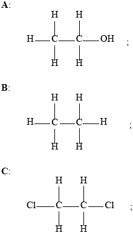
1,2-dichloroethane;
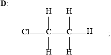
Accept condensed formulas.
Penalize missing hydrogens only once.
add bromine water/bromine;
pentane no change/stays brown and pent-1-ene decolourizes bromine water/bromine;
OR
add acidified \({\text{KMn}}{{\text{O}}_{\text{4}}}\);
pentane no change/stays purple and pent-1-ene decolourizes acidified \({\text{KMn}}{{\text{O}}_{\text{4}}}\);
Accept any correct colour change.
Do not accept ‘clear’ instead of ‘colourless’.
E: primary and F: secondary;
G: primary;
G / E: only one alkyl group/2 H atoms attached to the carbon atom attached to the Cl / only one carbon atom attached to the carbon atom attached to the Cl;
F: two alkyl groups/1 H atom attached to the carbon atom attached to the Cl / two carbon atoms attached to the carbon atom attached to the Cl;
Initiation:
\({\text{C}}{{\text{l}}_{\text{2}}}\xrightarrow{{{\text{UV}}/h/f/hv/heat}}{\text{2Cl}} \bullet \);
Reference to UV/hf/hν/heat must be included.
Propagation:
\({\text{Cl}} \bullet + {\text{C}}{{\text{H}}_{\text{4}}} \to {\text{C}}{{\text{H}}_{\text{3}}} \bullet + {\text{HCl}}\);
\({\text{C}}{{\text{H}}_{\text{3}}} \bullet + {\text{C}}{{\text{l}}_{\text{2}}} \to {\text{C}}{{\text{H}}_{\text{3}}}{\text{Cl}} + {\text{Cl}} \bullet \);
Termination:
\({\text{Cl}} \bullet + {\text{Cl}} \bullet \to {\text{C}}{{\text{l}}_{\text{2}}}{\text{ / C}}{{\text{H}}_{\text{3}}} \bullet + {\text{ Cl}} \bullet \to {\text{C}}{{\text{H}}_{\text{3}}}{\text{Cl / C}}{{\text{H}}_{\text{3}}} \bullet + {\text{C}}{{\text{H}}_{\text{3}}} \bullet \to {{\text{C}}_{\text{2}}}{{\text{H}}_6}\);
Allow representation of radical without \( \bullet \) (e.g. Cl, CH3) if consistent throughout mechanism.
If representation of radical (i.e. \( \bullet \)) is inconsistent, penalize once only.
Examiners report
Although this was the least popular Section B question it tended to be well done by those candidates who attempted it. Part (a) was generally well answered with most candidates able to achieve at least 2 out of the 3 marks. Candidates could state the trend in melting points of the first five members of the alkenes but did not always explain the trend thoroughly.
In part (b) candidates tended to be careless with the use of terminology and used structural or molecular formula rather than general formula when describing a feature of a homologous series. Many candidates also stated that compounds in a homologous series differ by \({\text{C}}{{\text{H}}_{\text{2}}}\)-group but it is successive members that differ by the \({\text{C}}{{\text{H}}_{\text{2}}}\)-group. Greater care in the use of chemical terminology is needed.
The structures in part (c) were well deduced but some candidates were very careless with naming compound C, not taking care with IUPAC nomenclature.
In part (d) candidates were able to identify the bromine test for distinguishing between the alkane and alkene but often did not correctly identify the colour change associated with pent-1-ene and incorrectly suggested that the colour of the bromine changed to clear when it should be colourless.
Part (e) was well done with the exception of identifying structure G as a primary halogenoalkane. Many candidates incorrectly identified it as a tertiary halogenalkane.
Candidates were able to explain with equations the free radical mechanism for the reaction between methane and chlorine. Candidates could only achieve the mark for the initiation step if reference was made to UV with the correct equation. Occasionally candidates incorrectly showed ions rather than radicals in the equations.
Calcium carbide, CaC2, is an ionic solid.
Describe the nature of ionic bonding.
State the electron configuration of the Ca2+ ion.
When calcium compounds are introduced into a gas flame a red colour is seen; sodium compounds give a yellow flame. Outline the source of the colours and why they are different.
Suggest two reasons why solid calcium has a greater density than solid potassium.
Outline why solid calcium is a good conductor of electricity.
Calcium carbide reacts with water to form ethyne and calcium hydroxide.
CaC2(s) + H2O(l) → C2H2(g) + Ca(OH)2(aq)
Estimate the pH of the resultant solution.
Markscheme
electrostatic attraction AND oppositely charged ions
[1 mark]
1s22s22p63s23p6
OR
[Ar]
[1 mark]
«promoted» electrons fall back to lower energy level
energy difference between levels is different
Accept “Na and Ca have different nuclear charge” for M2.
[2 marks]
Any two of:
stronger metallic bonding
smaller ionic/atomic radius
two electrons per atom are delocalized
OR
greater ionic charge
greater atomic mass
Do not accept just “heavier” or “more massive” without reference to atomic mass.
[2 marks]
delocalized/mobile electrons «free to move»
[1 mark]
pH > 7
Accept any specific pH value or range of values above 7 and below 14.
[1 mark]
Examiners report
A hydrocarbon has the empirical formula \({{\text{C}}_{\text{3}}}{{\text{H}}_{\text{7}}}\). When 1.17 g of the compound is heated to 85 °C at a pressure of 101 kPa it occupies a volume of \({\text{400 c}}{{\text{m}}^{\text{3}}}\).
(i) Calculate the molar mass of the compound, showing your working.
(ii) Deduce the molecular formula of the compound.
\({{\text{C}}_{\text{5}}}{{\text{H}}_{{\text{12}}}}\) exists as three isomers. Identify the structure of the isomer with the lowest boiling point and explain your choice.
Ethanol is a primary alcohol that can be oxidized by acidified potassium dichromate(VI). Distinguish between the reaction conditions needed to produce ethanal and ethanoic acid.
Ethanal:
Ethanoic acid:
Determine the oxidation number of carbon in ethanol and ethanal.
Ethanol:
Ethanal:
Deduce the half-equation for the oxidation of ethanol to ethanal.
Deduce the overall redox equation for the reaction of ethanol to ethanal with acidified potassium dichromate(VI) by combining your answer to part (c) (iii) with the following half-equation:
\[{\text{C}}{{\text{r}}_{\text{2}}}{\text{O}}_{\text{7}}^{2 - }{\text{(aq)}} + {\text{14}}{{\text{H}}^ + }{\text{(aq)}} + {\text{6}}{{\text{e}}^ - } \to {\text{2C}}{{\text{r}}^{3 + }}{\text{(aq)}} + {\text{7}}{{\text{H}}_{\text{2}}}{\text{O(l)}}\]
Describe two characteristics of a reaction at equilibrium.
Describe how a catalyst increases the rate of a reaction.
State and explain the effect of a catalyst on the position of equilibrium.
Ethanoic acid reacts with ethanol to form the ester ethyl ethanoate.
\[{\text{C}}{{\text{H}}_{\text{3}}}{\text{COOH(l)}} + {\text{C}}{{\text{H}}_{\text{3}}}{\text{C}}{{\text{H}}_{\text{2}}}{\text{OH(l)?????C}}{{\text{H}}_{\text{3}}}{\text{COOC}}{{\text{H}}_{\text{2}}}{\text{C}}{{\text{H}}_{\text{3}}}{\text{(l)}} + {{\text{H}}_{\text{2}}}{\text{O(l)}}\]
The esterification reaction is exothermic. State the effect of increasing temperature on the value of the equilibrium constant (\({K_{\text{c}}}\)) for this reaction.
Markscheme
(i) \({\text{temperature}} = 358{\text{ K}}\);
\(M = \frac{{mRT}}{{pV}}/1.17 \times 8.31 \times \frac{{358}}{{(0.40 \times 101)}}\);
\({\text{(}}M = {\text{) }}86.2{\text{ (gmo}}{{\text{l}}^{ - 1}}{\text{)}}\);
Award [1 max] for correct final answer without working.
(ii) \({{\text{C}}_6}{{\text{H}}_{14}}\);
\({\text{C(C}}{{\text{H}}_3}{{\text{)}}_4}\);
Accept correct name 2,2-dimethylpropane.
Do not penalize missing H atoms.
weakest London/dispersion/van der Waals’/vdW/instantaneous induced dipoleinduced dipole forces because of smallest surface area/contact
OR
weakest London/dispersion/van der Waals’/vdW/ instantaneous induced dipoleinduced dipole forces because of least distortion of the electron cloud
OR
weakest London/dispersion/van der Waals’/vdW/ instantaneous induced dipoleinduced dipole forces because polarizability of electrons (in electron cloud) is less;
Accept other words to that effect but student must mention a correct IMF and a correct reason.
Ethanal: distill off product as it forms;
Accept distillation.
Ethanoic acid: (heat under) reflux / use excess oxidizing agent;
Ethanol: –2/–II;
Ethanal: –1/–I;
Do not accept 2– or 1–, but penalize only once.
\({\text{C}}{{\text{H}}_3}{\text{C}}{{\text{H}}_2}{\text{OH}} \to {\text{C}}{{\text{H}}_3}{\text{CHO}} + {\text{2}}{{\text{H}}^ + } + {\text{2}}{{\text{e}}^ - }\);
Half-equation required. Do not accept \({C_2}{H_5}OH + 2[O] \to C{H_3}CHO + {H_2}O\).
Accept e for \({e^ - }\).
\({\text{3C}}{{\text{H}}_3}{\text{C}}{{\text{H}}_2}{\text{OH(aq)}} + {\text{C}}{{\text{r}}_2}{\text{O}}_7^{2 - }{\text{(aq)}} + {\text{8}}{{\text{H}}^ + }{\text{(aq)}} \to {\text{2C}}{{\text{r}}^{{\text{3}} + }}{\text{(aq)}} + {\text{3C}}{{\text{H}}_3}{\text{CHO(l)}} + {\text{7}}{{\text{H}}_2}{\text{O(l)}}\)
correct reactants and products;
correct balancing;
M2 can only be scored if M1 correct.
Ignore state symbols.
rate of forward process/reaction = rate of backward/reverse process/reaction;
concentrations of reactants and products remain constant;
no change in macroscopic properties;
closed/isolated system / constant matter/energy;
provides alternative pathway (of lower energy);
lowers activation energy (of the reaction) / more particles with \(E \geqslant {E_{\text{a}}}\);
no effect (on position of equilibrium);
increases rate of forward and reverse reactions (equally);
decreases;
Examiners report
This was the least popular question however many who chose it were successful in parts. Part (a) that required a calculation of \({M_{\text{r}}}\) was quite well done. However (b) that asked for the isomer of \({{\text{C}}_{\text{5}}}{{\text{H}}_{{\text{12}}}}\) with the lowest boiling point was not well answered. Identification of the methods to produce ethanal or ethanoic acid was done well by the strong candidates and others just guessed. Deduction of oxidation numbers and then writing of redox equations was not well answered. However (d) and (e) about equilibrium were answered well by many candidates although there were again some very poor answers.
This was the least popular question however many who chose it were successful in parts. Part (a) that required a calculation of \({M_{\text{r}}}\) was quite well done. However (b) that asked for the isomer of \({{\text{C}}_{\text{5}}}{{\text{H}}_{{\text{12}}}}\) with the lowest boiling point was not well answered. Identification of the methods to produce ethanal or ethanoic acid was done well by the strong candidates and others just guessed. Deduction of oxidation numbers and then writing of redox equations was not well answered. However (d) and (e) about equilibrium were answered well by many candidates, although there were again some very poor answers.
This was the least popular question however many who chose it were successful in parts. Part (a) that required a calculation of \({M_{\text{r}}}\) was quite well done. However (b) that asked for the isomer of \({{\text{C}}_{\text{5}}}{{\text{H}}_{{\text{12}}}}\) with the lowest boiling point was not well answered. Identification of the methods to produce ethanal or ethanoic acid was done well by the strong candidates and others just guessed. Deduction of oxidation numbers and then writing of redox equations was not well answered. However (d) and (e) about equilibrium were answered well by many candidates, although there were again some very poor answers.
This was the least popular question however many who chose it were successful in parts. Part (a) that required a calculation of \({M_{\text{r}}}\) was quite well done. However (b) that asked for the isomer of \({{\text{C}}_{\text{5}}}{{\text{H}}_{{\text{12}}}}\) with the lowest boiling point was not well answered. Identification of the methods to produce ethanal or ethanoic acid was done well by the strong candidates and others just guessed. Deduction of oxidation numbers and then writing of redox equations was not well answered. However (d) and (e) about equilibrium were answered well by many candidates, although there were again some very poor answers.
This was the least popular question however many who chose it were successful in parts. Part (a) that required a calculation of \({M_{\text{r}}}\) was quite well done. However (b) that asked for the isomer of \({{\text{C}}_{\text{5}}}{{\text{H}}_{{\text{12}}}}\) with the lowest boiling point was not well answered. Identification of the methods to produce ethanal or ethanoic acid was done well by the strong candidates and others just guessed. Deduction of oxidation numbers and then writing of redox equations was not well answered. However (d) and (e) about equilibrium were answered well by many candidates, although there were again some very poor answers.
This was the least popular question however many who chose it were successful in parts. Part (a) that required a calculation of \({M_{\text{r}}}\) was quite well done. However (b) that asked for the isomer of \({{\text{C}}_{\text{5}}}{{\text{H}}_{{\text{12}}}}\) with the lowest boiling point was not well answered. Identification of the methods to produce ethanal or ethanoic acid was done well by the strong candidates and others just guessed. Deduction of oxidation numbers and then writing of redox equations was not well answered. However (d) and (e) about equilibrium were answered well by many candidates, although there were again some very poor answers.
This was the least popular question however many who chose it were successful in parts. Part (a) that required a calculation of \({M_{\text{r}}}\) was quite well done. However (b) that asked for the isomer of \({{\text{C}}_{\text{5}}}{{\text{H}}_{{\text{12}}}}\) with the lowest boiling point was not well answered. Identification of the methods to produce ethanal or ethanoic acid was done well by the strong candidates and others just guessed. Deduction of oxidation numbers and then writing of redox equations was not well answered. However (d) and (e) about equilibrium were answered well by many candidates, although there were again some very poor answers.
This was the least popular question however many who chose it were successful in parts. Part (a) that required a calculation of \({M_{\text{r}}}\) was quite well done. However (b) that asked for the isomer of \({{\text{C}}_{\text{5}}}{{\text{H}}_{{\text{12}}}}\) with the lowest boiling point was not well answered. Identification of the methods to produce ethanal or ethanoic acid was done well by the strong candidates and others just guessed. Deduction of oxidation numbers and then writing of redox equations was not well answered. However (d) and (e) about equilibrium were answered well by many candidates, although there were again some very poor answers.
This was the least popular question however many who chose it were successful in parts. Part (a) that required a calculation of \({M_{\text{r}}}\) was quite well done. However (b) that asked for the isomer of \({{\text{C}}_{\text{5}}}{{\text{H}}_{{\text{12}}}}\) with the lowest boiling point was not well answered. Identification of the methods to produce ethanal or ethanoic acid was done well by the strong candidates and others just guessed. Deduction of oxidation numbers and then writing of redox equations was not well answered. However (d) and (e) about equilibrium were answered well by many candidates, although there were again some very poor answers.
This was the least popular question however many who chose it were successful in parts. Part (a) that required a calculation of \({M_{\text{r}}}\) was quite well done. However (b) that asked for the isomer of \({{\text{C}}_{\text{5}}}{{\text{H}}_{{\text{12}}}}\) with the lowest boiling point was not well answered. Identification of the methods to produce ethanal or ethanoic acid was done well by the strong candidates and others just guessed. Deduction of oxidation numbers and then writing of redox equations was not well answered. However (d) and (e) about equilibrium were answered well by many candidates, although there were again some very poor answers.
Molten sodium chloride can be electrolysed using graphite electrodes.
Draw the essential components of this electrolytic cell and identify the products that form at each electrode.
Product formed at positive electrode (anode):
Product formed at negative electrode (cathode):
State the half-equations for the oxidation and reduction processes and deduce the overall cell reaction, including state symbols.
Oxidation half-equation:
Reduction half-equation:
Overall cell reaction:
Explain why solid sodium chloride does not conduct electricity.
Markscheme
Cell showing:
container, liquid, electrodes and power supply;
No labels are required, but do not award mark if incorrect labels are used (e.g. sodium chloride solution). A line must be drawn on the container to indicate the presence of a liquid. If power supply is a battery then do not penalize electrodes incorrectly assigned as + or –.
Positive electrode (anode):
chlorine (gas) / \({\text{C}}{{\text{l}}_2}{\text{(g)}}\)
and
Negative electrode (cathode):
sodium (liquid) / Na(l);
Ignore state symbols in (i) but do not award mark for Cl.
Oxidation half-equation:
\({\text{2C}}{{\text{l}}^ - } \to {\text{C}}{{\text{l}}_2} + {\text{2}}{{\text{e}}^ - }/{\text{C}}{{\text{l}}^ - } \to \frac{1}{2}{\text{C}}{{\text{l}}_2}{{\text{e}}^ - }\)
and
Reduction half-equation:
\({\text{N}}{{\text{a}}^ + } + {{\text{e}}^ - } \to {\text{Na}}/{\text{2N}}{{\text{a}}^ + } + {\text{2}}{{\text{e}}^ - } \to {\text{2Na}}\);
Allow e instead of \({e^ - }\).
Overall cell reaction:
\({\text{2NaCl(l)}} \to {\text{2Na(l)}} + {\text{C}}{{\text{l}}_2}{\text{(g)}}/{\text{NaCl(l)}} \to {\text{Na(l)}} + \frac{1}{2}{\text{C}}{{\text{l}}_2}{\text{(g)}}\);
Award [1] for oxidation and reduction half-equations.
Award [1] for overall cell reaction, including correct state symbols.
Accept Na+(l) + Cl–(l) instead of NaCl(l) as a reactant.
Penalize equilibrium arrows once only.
ions not free to move when solid / ions in rigid lattice / OWTTE;
Examiners report
In part (a)(i) Some students mixed up electrolytic cells with voltaic cells and salt bridges were often seen. Others mixed up the products at the cathode and anode. For the anode, Cl was sometimes given instead of \({\text{C}}{{\text{l}}_{\text{2}}}\) meaning that the mark was not awarded. Also occasionally the electrolyte was incorrectly given as an aqueous solution.
In part (ii) The most common mistake here involved the incorrect set of state symbols. Very few candidates realised that sodium would be a liquid. Also there were equilibrium arrows incorrectly used in the redox equations.
In part (b) many candidates did not refer to ions in their answer and instead referred to the lack of delocalised electrons.
Consider the following equilibrium.
\[\begin{array}{*{20}{l}} {{\text{2S}}{{\text{O}}_2}{\text{(g)}} + {{\text{O}}_2}{\text{(g)}} \rightleftharpoons {\text{2S}}{{\text{O}}_3}{\text{(g)}}}&{\Delta {H^\Theta } = - 198{\text{ kJ}}\,{\text{mo}}{{\text{l}}^{ - 1}}} \end{array}\]
Deduce the equilibrium constant expression, \({K_{\text{c}}}\), for the reaction.
State and explain the effect of increasing the temperature on the yield of sulfur trioxide.
State the effect of a catalyst on the value of \({K_{\text{c}}}\).
State and explain the effect of a catalyst on the position of equilibrium.
Define oxidation in terms of oxidation numbers.
Describe using a labelled diagram, the essential components of an electrolytic cell.
Explain why solid sodium chloride does not conduct electricity but molten sodium chloride does.
Molten sodium chloride undergoes electrolysis in an electrolytic cell. For each electrode deduce the half-equation and state whether oxidation or reduction takes place. Deduce the equation of the overall cell reaction including state symbols.
Electrolysis has made it possible to obtain reactive metals such as aluminium from their ores, which has resulted in significant developments in engineering and technology. State one reason why aluminium is preferred to iron in many uses.
Outline two differences between an electrolytic cell and a voltaic cell.
Markscheme
\({\text{(}}{K_{\text{c}}} = {\text{)[S}}{{\text{O}}_{\text{3}}}{{\text{]}}^{\text{2}}}{\text{/[}}{{\text{O}}_{\text{2}}}{\text{][S}}{{\text{O}}_{\text{2}}}{{\text{]}}^{\text{2}}}\);
yield (of \({\text{S}}{{\text{O}}_{\text{3}}}\)) decreases;
forward reaction is exothermic / reverse/backwards reaction is endothermic / equilibrium shifts to absorb (some of) the heat;
Do not accept exothermic reaction or Le Châtelier’s Principle.
Do not allow ECF.
no effect;
no effect;
the rates of both the forward and reverse reactions increase equally;
increase in the oxidation number;
Annotated diagram of cell showing:
power supply/battery;
electrolyte;
cathode/negative electrode and anode/positive electrode;

(solid) ions in a lattice / ions cannot move;
(molten) ions mobile / ions free to move;
reduction occurs at the cathode/negative electrode and oxidation occurs at the anode/positive electrode;
Cathode/negative electrode: \({\text{N}}{{\text{a}}^ + } + {{\text{e}}^ - } \to {\text{Na}}\);
Anode/positive electrode: \({\text{2C}}{{\text{l}}^ - } \to {\text{C}}{{\text{l}}_2} + {\text{2}}{{\text{e}}^ - }/{\text{C}}{{\text{l}}^ - } \to \frac{1}{2}{\text{C}}{{\text{l}}_2} + {{\text{e}}^ - }\);
Award [1 max] if the two electrodes are not labelled/labelled incorrectly for the two half-equations.
Overall cell reaction: \({\text{N}}{{\text{a}}^ + }{\text{(1)}} + {\text{C}}{{\text{l}}^ - }{\text{(1)}} \to {\text{Na(1)}} + \frac{1}{2}{\text{C}}{{\text{l}}_2}{\text{(g)}}\)
Award [1] for correct equation and [1] for correct state symbols.
Allow NaCl(l) instead of Na+(l) and Cl–(l).
Al does not corrode/rust / Al is less dense/better conductor/more malleable;
Accept Al is a lighter (metal compared to Fe).
Accept converse argument.
electrolytic cell converts electrical energy to chemical energy and voltaic cell converts chemical energy to electrical energy / electrolytic cell uses electricity to carry out a (redox) chemical reaction and voltaic cell uses a (redox) chemical reaction to produce electricity / electrolytic cell requires a power supply and voltaic cell does not;
electrolytic cell involves a non-spontaneous (redox) reaction and voltaic cell involves a spontaneous (redox) reaction;
in an electrolytic cell, cathode is negative and anode is positive and vice-versa for a voltaic cell / electrolytic cell, anode is positive and voltaic cell, anode is negative / electrolytic cell, cathode is negative and voltaic cell, cathode is positive;
voltaic cell has two separate solutions and electrolytic cell has one solution / voltaic cell has salt bridge and electrolytic cell has no salt bridge;
electrolytic cell, oxidation occurs at the positive electrode/anode and voltaic cell, oxidation occurs at the negative electrode/anode and vice-versa;
Examiners report
Nearly all candidates deduced the equilibrium constant expression for the reaction given in (a) (i).
there were many good and complete answers here for (a) (ii). Some candidates did not state that the forward reaction was exothermic or the reverse reaction was endothermic, when trying to decide the effect of an increase in temperature on the yield of \({\text{S}}{{\text{O}}_{\text{3}}}\).
In (a) (iii) most candidates correctly stated that the catalyst would not have any effect on the value of \({K_{\text{c}}}\).
In part (iv) many candidates correctly stated that the catalyst would not have any effect on the position of equilibrium, but some did not explain why.
In (b) (i) some candidates defined oxidation as the loss of electrons but not in terms of oxidation numbers, as required by the question.
Some candidates described a voltaic cell instead of an electrolytic cell in (b) (ii). In some cases the electrodes were wrongly labelled or wrongly connected to the battery and the electrolyte was missing.
A large number of candidates stated that solid sodium chloride did not conduct electricity because it did not contain electrons in (iii). However some gave the correct answer indicating the free/moving ions as the particles responsible for the conductivity.
Part (b) (iv) was generally well answered. Most candidates lost a mark because they did not give the correct state symbols in the overall reaction.
Most candidates gave a correct answer as to why aluminium is preferred to iron in many uses in (b) (v).
There were very good answers indicating the main differences between an electrolytic cell and a voltaic cell in (vi).
Sodium oxide, \({\text{N}}{{\text{a}}_{\text{2}}}{\text{O}}\), is a white solid with a high melting point.
Explain why solid sodium oxide is a non-conductor of electricity.
Molten sodium oxide is a good conductor of electricity. State the half-equation for the reaction occurring at the positive electrode during the electrolysis of molten sodium oxide.
State the acid-base nature of sodium oxide.
State the equation for the reaction of sodium oxide with water.
Markscheme
in the solid state ions are in fixed positions/there are no moveable ions / OWTTE;
Do not accept answer that refers to atoms or molecules.
\({\text{2}}{{\text{O}}^{2 - }} \to {{\text{O}}_2} + {\text{4}}{{\text{e}}^ - }/{{\text{O}}^{2 - }} \to \frac{1}{2}{{\text{O}}_2} + {\text{2}}{{\text{e}}^ - }\);
Accept e instead of e–.
basic;
Allow alkaline
\({\text{N}}{{\text{a}}_2}{\text{O}} + {{\text{H}}_2}{\text{O}} \to {\text{2NaOH}}/{\text{N}}{{\text{a}}_2}{\text{O}} + {{\text{H}}_2}{\text{O}} \to {\text{2N}}{{\text{a}}^ + } + {\text{2O}}{{\text{H}}^ - }\);
Do not accept \( \rightleftharpoons \)
Examiners report
This was expected to be a high-scoring question but this was not found in practice. In Part (a) there were many references to delocalised/mobile electrons and also molecules and atoms. It did not appear that the structural properties of ionic substances are well understood.
There were many attempts in (b) which involved the sodium ion rather than the oxide and those who chose oxide often had difficulty in producing a balanced equation.
The best answered part of this question was Part (c) though a significant percentage described it as a weak base.
The best answered part of this question was Part (c) though a significant percentage described it as a weak base.
Calcium nitrate contains both covalent and ionic bonds.
Nitrogen also forms oxides, which are atmospheric pollutants.
State the formula of both ions present and the nature of the force between these ions.
Ions:
Nature of force:
State which atoms are covalently bonded.
Outline the source of these oxides.
State one product formed from their reaction with water.
State one environmental problem caused by these atmospheric pollutants.
Markscheme
\({\text{C}}{{\text{a}}^{2 + }}\) and \({\text{NO}}_3^ - \);
electrostatic (attraction);
Do not accept ionic.
nitrogen/N and oxygen/O;
Do not accept nitrate/NO3–.
Accept atoms in nitrate/NO3–.
produced by high temperature combustion;
Accept combustion/jet/car engines / car exhaust/emissions / lightning / action of bacteria/microorganisms.
Do not accept combustion/burning, cars, planes, jets, factories, power plants etc.
nitric acid/\({\text{HN}}{{\text{O}}_{\text{3}}}\) / nitrous acid/nitric(III) acid/\({\text{HN}}{{\text{O}}_{\text{2}}}\);
Accept “forms acidic solutions / acid rain”.
acid deposition/rain / respiratory problems / corrosion problems / decomposition of ozone layer / photochemical smog / acidification/pollution of lakes / damage to plants/ trees;
Accept “acid rain” in either part (ii) or part (iii) but not both.
Do not accept air pollution.
Examiners report
This question was surprisingly very poorly answered. In part (a), it was distressing to see a large number of candidates who could not write the correct charge or formula of nitrate ion. In addition, the terminology appears to have confused a number of candidates and for the nature of force, ionic bonding was often stated which was incorrect, as electrostatic attraction was required. In (a) (ii), again candidates failed to answer the question and nitrate was commonly given which was not accepted. The question specifically asked for the atoms involved.
This question was surprisingly very poorly answered. In part (a), it was distressing to see a large number of candidates who could not write the correct charge or formula of nitrate ion. In addition, the terminology appears to have confused a number of candidates and for the nature of force, ionic bonding was often stated which was incorrect, as electrostatic attraction was required. In (a) (ii), again candidates failed to answer the question and nitrate was commonly given which was not accepted. The question specifically asked for the atoms involved.
In part (b), the Aim 8 component of AS 3.3.2 was assessed and this was very poorly answered overall. Inevitably, owing to some overlap in assessment statements these concepts would be more familiar to those studying the Environmental Chemistry option, but undoubtedly studying other options assists in other areas, such as organic chemistry. In (b) (i), many candidates gave generic answers such as cars or factories which did not score. In (ii), many incorrect answers were given such as nitrogen oxides, hydrogen or ozone. In (iii), acid rain was frequently seen and many referred to depletion of the ozone layer. However it was extremely disappointing that many candidates gave the greenhouse effect or global warming or air pollution as the answer, which of course scored no marks.
In part (b), the Aim 8 component of AS 3.3.2 was assessed and this was very poorly answered overall. Inevitably, owing to some overlap in assessment statements these concepts would be more familiar to those studying the Environmental Chemistry option, but undoubtedly studying other options assists in other areas, such as organic chemistry. In (b) (i), many candidates gave generic answers such as cars or factories which did not score. In (ii), many incorrect answers were given such as nitrogen oxides, hydrogen or ozone. In (iii), acid rain was frequently seen and many referred to depletion of the ozone layer. However it was extremely disappointing that many candidates gave the greenhouse effect or global warming or air pollution as the answer, which of course scored no marks.
In part (b), the Aim 8 component of AS 3.3.2 was assessed and this was very poorly answered overall. Inevitably, owing to some overlap in assessment statements these concepts would be more familiar to those studying the Environmental Chemistry option, but undoubtedly studying other options assists in other areas, such as organic chemistry. In (b) (i), many candidates gave generic answers such as cars or factories which did not score. In (ii), many incorrect answers were given such as nitrogen oxides, hydrogen or ozone. In (iii), acid rain was frequently seen and many referred to depletion of the ozone layer. However it was extremely disappointing that many candidates gave the greenhouse effect or global warming or air pollution as the answer, which of course scored no marks.
Ethane-1,2-diol, HOCH2CH2OH, has a wide variety of uses including the removal of ice from aircraft and heat transfer in a solar cell.
Ethane-1,2-diol can be formed according to the following reaction.
2CO (g) + 3H2 (g) \( \rightleftharpoons \) HOCH2CH2OH (g)
(i) Deduce the equilibrium constant expression, Kc, for this reaction.
(ii) State how increasing the pressure of the reaction mixture at constant temperature will affect the position of equilibrium and the value of Kc.
Position of equilibrium:
Kc:
(iii) Calculate the enthalpy change, ΔHθ, in kJ, for this reaction using section 11 of the data booklet. The bond enthalpy of the carbon–oxygen bond in CO (g) is 1077kJmol-1.
(iv) The enthalpy change, ΔHθ, for the following similar reaction is –233.8 kJ.
2CO(g) + 3H2(g) \( \rightleftharpoons \) HOCH2CH2OH (l)
Deduce why this value differs from your answer to (a)(iii).
Determine the average oxidation state of carbon in ethene and in ethane-1,2-diol.
Ethene:
Ethane-1,2-diol:
Explain why the boiling point of ethane-1,2-diol is significantly greater than that of ethene.
Ethane-1,2-diol can be oxidized first to ethanedioic acid, (COOH)2, and then to carbon dioxide and water. Suggest the reagents to oxidize ethane-1,2-diol.
Markscheme
(i)
\(\ll {K_{\text{C}}} = \gg \frac{{\left[ {{\text{HOC}}{{\text{H}}_{\text{2}}}{\text{C}}{{\text{H}}_{\text{2}}}{\text{OH}}} \right]}}{{{{\left[ {{\text{CO}}} \right]}^{\text{2}}} \times {{\left[ {{{\text{H}}_{\text{2}}}} \right]}^{\text{3}}}}}\)
(ii)
Position of equilibrium: moves to right OR favours product
Kc: no change OR is a constant at constant temperature
(iii)
Bonds broken: 2C≡O + 3(H-H) / 2(1077kJmol-1) + 3(436kJmol-1) / 3462 «kJ»
Bonds formed: 2(C-O) + 2(O-H) + 4(C-H) + (C-C) / 2(358kJmol-1) + 2(463kJmol-1) + 4(414kJmol-1) + 346kJmol-1 / 3644 «kJ»
«Enthalpy change = bonds broken - bonds formed = 3462 kJ - 3644 kJ =» -182 «kJ»
Award [3] for correct final answer.
Award [2 max] for «+»182 «kJ».
(iv)
in (a)(iii) gas is formed and in (a)(iv) liquid is formed
OR
products are in different states
OR
conversion of gas to liquid is exothermic
OR
conversion of liquid to gas is endothermic
OR
enthalpy of vapourisation needs to be taken into account
Accept product is «now» a liquid.
Accept answers referring to bond enthalpies being means/averages.
Ethene: –2
Ethane-1,2-diol: –1
Do not accept 2–, 1– respectively.
ethane-1,2-diol can hydrogen bond to other molecules «and ethene cannot»
OR
ethane-1,2-diol has «significantly» greater van der Waals forces
Accept converse arguments.
Award [0] if answer implies covalent bonds are broken
hydrogen bonding is «significantly» stronger than other intermolecular forces
acidified «potassium» dichromate«(VI)»/H+ AND K2Cr2O7/H+ AND Cr2O72-
OR
«acidified potassium» manganate(VII)/ «H+» KMnO4 /«H+» MnO4-
Accept Accept H2SO4 or H3PO4 for H+.
Accept “permanganate” for “manganate(VII)”.
Examiners report
Iron has three main naturally occurring isotopes which can be investigated using a mass spectrometer.
A sample of iron has the following isotopic composition by mass.

Calculate the relative atomic mass of iron based on this data, giving your answer to two decimal places.
Calculate the number of electrons in the ion \(^{{\text{56}}}{\text{F}}{{\text{e}}^{2 + }}\).
Describe the bonding in iron and explain the electrical conductivity and malleability of the metal.
Markscheme
\(\frac{{(54 \times 5.95) + (56 \times 91.88) + (57{\text{ }}2.17)}}{{100}}\);
55.90;
Award [2] for correct final answer.
Answer must be to 2 d.p.
24;
metallic (bonding);
positive ions/cations and delocalized/sea of electrons;
electrostatic attraction between the two;
Award [2 max] for description of bonding
Conductivity:
electrons delocalised/free to move;
Malleability:
atoms/ions/cations can move without breaking bonds / atoms/ions/cations can slide
past each other;
Examiners report
Most candidates could correctly calculate the relative atomic mass although a few lost a mark by giving their answers to 1 or 3 decimal places.
Most candidates correctly calculated the number of electrons, but the most frequent incorrect answers were 28 and 54.
The explanation of iron‟s properties was well answered in terms of metallic bonding and most candidates correctly described its electrical conductivity as due to free flowing electrons. However, only a few could explain malleability in terms of the layers of ions being able to slide over each other.
The following equation represents a combustion reaction of propane, \({{\text{C}}_{\text{3}}}{{\text{H}}_{\text{8}}}{\text{(g)}}\) when the oxygen supply is limited.
\[{{\text{C}}_3}{{\text{H}}_8}{\text{(g)}} + {\text{3}}\frac{1}{2}{{\text{O}}_2}{\text{(g)}} \to {\text{3CO(g)}} + {\text{4}}{{\text{H}}_2}{\text{O(g)}}\]
Define the term average bond enthalpy.
(i) Determine \(\Delta H\), the enthalpy change of the reaction, in \({\text{kJ}}\,{\text{mo}}{{\text{l}}^{ - 1}}\), using average bond enthalpy data from Table 10 of the Data Booklet. The bond enthalpy for the carbon-oxygen bond in carbon monoxide, CO, is \({\text{1072 kJ}}\,{\text{mo}}{{\text{l}}^{ - 1}}\).
(ii) The CO molecule has dative covalent bonding. Identify a nitrogen-containing positive ion which also has this type of bonding.
Markscheme
energy needed to break (1 mol of) a bond in a gaseous molecule/state/phase;
average calculated from a range of similar compounds / OWTTE;
Do not accept similar bonds instead of similar compounds.
M2 can be scored independently.
(i) Bonds breaking:
2 \( \times \) (C−C) + 8 \( \times \) (C−H) + 3.5 \( \times \) (O=O)
\( = (2)(347) + (8)(413) + (3.5)(498)\)
\( = {\text{5741(kJ}}\,{\text{mo}}{{\text{l}}^{ - 1}}{\text{)}}\);
Bonds forming:
3 \( \times \) (CO) + 8 \( \times \) (O−H)
\( = (3)(1072) + (8)(464) = 6928{\text{ (kJ}}\,{\text{mo}}{{\text{l}}^{ - 1}}{\text{)}}\);
Enthalpy change:
\((5741 - 6928 = ) - 1187{\text{ (kJ}}\,{\text{mo}}{{\text{l}}^{ - 1}}{\text{)}}\);
Award [3] for correct final answer.
(ii) \({\text{NH}}_{\text{4}}^ + \)/ammonium / \({{\text{N}}_{\text{2}}}{\text{H}}_5^ + \) /hydrazinium / \({\text{C}}{{\text{H}}_{\text{3}}}{\text{NH}}_3^ + \) /methylammonium / methanaminium / \({{\text{H}}_{\text{2}}}{\text{NO}}_3^ + \) /nitrooxonium;
Examiners report
The definition of average bond enthalpy in part (a), proved challenging even though it has appeared on recent examination papers and very few scored two marks. A good number of candidates omitted gaseous and did not state that it is the energy needed to break 1 mol of a bond in a gaseous molecule and many did not understand that it is the average calculated from a range of similar compounds.
In Part (b) (i), the typical errors were using the incorrect bond enthalpies from the Data Booklet and using the sum of the bond enthalpies of bond forming (products) minus bond breaking (reactants) instead of the reverse. In Part (b) (ii), instead of NH4+, candidates identified a range of incorrect answers including \({\text{NH}}_3^ + \), NF, \({\text{C}}{{\text{N}}^ - }\), \({\text{NO}}_3^ - \), N2 and even NaCl, although the question asked for a nitrogen containing positive ion.
Electrolysis is an important industrial process used to obtain very reactive elements from their common ores.
Molten magnesium chloride can be electrolysed using inert graphite electrodes at 800 °C.
Describe, using a labelled diagram, the essential components of this electrolytic cell.
Molten magnesium chloride can be electrolysed using inert graphite electrodes at 800 °C.
Deduce the half-equations, including state symbols, for the reactions occurring at each electrode. (The melting points of MgCl2 and Mg are 714 °C and 649 °C respectively.)
Positive electrode (anode):
Negative electrode (cathode):
Outline why solid magnesium chloride does not conduct electricity.
Aluminium can also be obtained by electrolysis. Suggest one reason why aluminium is often used instead of iron by engineers.
Markscheme
Cell showing:

molten electrolyte/MgCl2(l), electrodes and battery/DC supply;
correct labelling of positive electrode/anode/+ and negative electrode/cathode/–;
Positive electrode (anode):
\(2{\text{C}}{{\text{l}}^ - }{\text{(l)}} \to {\text{C}}{{\text{l}}_2}{\text{(g)}} + 2{{\text{e}}^ - }/{\text{C}}{{\text{l}}^ - }{\text{(l)}} \to \frac{1}{2}{\text{C}}{{\text{l}}_2}{\text{(g)}} + {{\text{e}}^ - }\);
Negative electrode (cathode):
\({\text{M}}{{\text{g}}^{2 + }}{\text{(l)}} + 2{{\text{e}}^ - } \to {\text{Mg(l)}}\);
Accept e instead of e–.
Award [1 max] for correct half-equations given at the wrong electrode.
Penalize use of reversible arrows once only.
correct state symbols in both equations;
ions are not free to move when solid / ions in rigid lattice / OWTTE;
aluminium/Al is less dense (compared to iron/Fe) / Al is more ductile or malleable/ aluminium forms a protective oxide layer / Al does not corrode / iron/Fe rusts /OWTTE;
Do not accept “Al is lighter” OR “less expensive” OR “Al can be recycled”.
Examiners report
There were very few carefully drawn correct diagrams as well as too many diagrams showing half-cells. The importance of the solution being molten was not appreciated. The equations did pick up marks, but it was extremely rare for candidates to access the mark for the correct state symbols. Far too many associated electrical conductivity in molten compounds with mobile electrons. The awareness that mobile ions are responsible for conductivity was poorly understood. The difference between "lightness" and density is still confused.
There were very few carefully drawn correct diagrams as well as too many diagrams showing half-cells. The importance of the solution being molten was not appreciated. The equations did pick up marks, but it was extremely rare for candidates to access the mark for the correct state symbols. Far too many associated electrical conductivity in molten compounds with mobile electrons. The awareness that mobile ions are responsible for conductivity was poorly understood. The difference between "lightness" and density is still confused.
There were very few carefully drawn correct diagrams as well as too many diagrams showing half-cells. The importance of the solution being molten was not appreciated. The equations did pick up marks, but it was extremely rare for candidates to access the mark for the correct state symbols. Far too many associated electrical conductivity in molten compounds with mobile electrons. The awareness that mobile ions are responsible for conductivity was poorly understood. The difference between "lightness" and density is still confused.
There were very few carefully drawn correct diagrams as well as too many diagrams showing half-cells. The importance of the solution being molten was not appreciated. The equations did pick up marks, but it was extremely rare for candidates to access the mark for the correct state symbols. Far too many associated electrical conductivity in molten compounds with mobile electrons. The awareness that mobile ions are responsible for conductivity was poorly understood. The difference between "lightness" and density is still confused.
Chlorine occurs in Group 7, the halogens.
Two stable isotopes of chlorine are \(^{{\text{35}}}{\text{Cl}}\) and \(^{{\text{37}}}{\text{Cl}}\) with mass numbers 35 and 37 respectively.
Chlorine has an electronegativity value of 3.2 on the Pauling scale.
Chloroethene, H2C=CHCl, the monomer used in the polymerization reaction in the manufacture of the polymer poly(chloroethene), PVC, can be synthesized in the following two-stage reaction pathway.
\[\begin{array}{*{20}{l}} {{\text{Stage 1:}}}&{{{\text{C}}_2}{{\text{H}}_4}{\text{(g)}} + {\text{C}}{{\text{l}}_2}{\text{(g)}} \to {\text{ClC}}{{\text{H}}_2}{\text{C}}{{\text{H}}_2}{\text{Cl(g)}}} \\ {{\text{Stage 2:}}}&{{\text{ClC}}{{\text{H}}_2}{\text{C}}{{\text{H}}_2}{\text{Cl(g)}} + {\text{HC=CHCl(g)}} + {\text{HCl(g)}}} \end{array}\]
Define the term isotopes of an element.
Calculate the number of protons, neutrons and electrons in the isotopes 35Cl and 37Cl.

Using the mass numbers of the two isotopes and the relative atomic mass of chlorine from Table 5 of the Data Booklet, determine the percentage abundance of each isotope.
Percentage abundance 35Cl:
Percentage abundance 37Cl:
Define the term electronegativity.
Using Table 7 of the Data Booklet, explain the trends in electronegativity values of the Group 7 elements from F to I.
State the balanced chemical equation for the reaction of potassium bromide, KBr(aq), with chlorine, Cl2(aq).
Describe the colour change likely to be observed in this reaction.
Determine the enthalpy change, \(\Delta H\), in \({\text{kJ}}\,{\text{mo}}{{\text{l}}^{ - 1}}\), for stage 1 using average bond enthalpy data from Table 10 of the Data Booklet.
State whether the reaction given in stage 1 is exothermic or endothermic.
Draw the structure of poly(chloroethene) showing two repeating units.
Suggest why monomers are often gases or volatile liquids whereas polymers are solids.
Markscheme
atoms of same element / atoms with same number of protons/atomic number/Z;
Do not allow elements instead of atoms in second alternative.
(but) different numbers of neutrons/mass number/A;

Allow [1 max] for 17 p, 17 e for both if n’s are omitted or incorrect.
Allow [1 max] for 35Cl: 18 n and 37Cl: 20 n if p’s and e’s are omitted.
\(({\text{for}}{{\text{ }}^{{\text{35}}}}{\text{Cl}}:x\% ){\text{ }}35x + 3700 - 37x = 3545\);
Allow other alternative mathematical arrangements.
\(^{{\text{35}}}{\text{Cl}} = 77.5\% \) and \(^{{\text{37}}}{\text{Cl}} = 22.5\% \);
Award [1 max] for correct percentages if no correct working is shown.
ability of atom/nucleus to attract bonding/shared pair of electrons / attraction of nucleus for bonding/shared pair of electrons / OWTTE;
Do not allow element instead of atom/nucleus.
increasing atomic radii (down the group) / OWTTE;
so reduced attraction (for the bonding electrons) / OWTTE;
screening/shielding effect of inner electrons / OWTTE;
Allow more energy levels/electron shells for M1.
Do not accept decrease in nuclear charge.
\({\text{2KBr(aq)}} + {\text{C}}{{\text{l}}_2}{\text{(aq)}} \to {\text{2KCl(aq)}} + {\text{B}}{{\text{r}}_2}{\text{(aq)}}\);
Ignore state symbols.
Allow ionic equation.
colourless/pale yellow/green to yellow/orange/brown;
Start and end colours must both be mentioned.
Bonds breaking:
1 \( \times \) (C=C) \( + \) 4 \( \times \) (C–H) \( + \) 1 \( \times \) (Cl–Cl)
\( = (1)(612) + (4)(413) + (1)(243)/ = ( + )2507{\text{ (kJ}}\,{\text{mo}}{{\text{l}}^{ - 1}}{\text{)}}\);
Bonds forming:
1 \( \times \) (C–C) \( + \) 4 \( \times \) (C–H) \( + \) 2 \( \times \) (Cl–Cl)
\( = (1)(347) + (4)(413) + (2)(346)/ = - 2691{\text{ (kJ}}\,{\text{mo}}{{\text{l}}^{ - 1}}{\text{)}}\);
Enthalpy change:
\((2507 - 2691 = ){\text{ }} - 184{\text{ (kJ}}\,{\text{mo}}{{\text{l}}^{ - 1}}{\text{)}}\);
OR
Bonds breaking:
1 \( \times \) (C=C) \( + \) 1 \( \times \) (Cl–Cl)
\( = (1)(612) + (1)(243)/ = ( + )855{\text{ (kJ}}\,{\text{mo}}{{\text{l}}^{ - 1}}{\text{)}}\);
Bonds forming:
1 \( \times \) (C–C) \( + \) 2 \( \times \) (C–Cl)
\( = (1)(347) + (2)(346)/ = - 1039{\text{ (kJ}}\,{\text{mo}}{{\text{l}}^{ - 1}}{\text{)}}\);
Enthalpy change:
\((855 - 1039 = ){\text{ }} - 184{\text{ (kJ}}\,{\text{mo}}{{\text{l}}^{ - 1}}{\text{)}}\);
Award [3] for correct final answer.
exothermic;
Do not award mark unless based on some value for part (iii).
representation of PVC showing two repeating units;
For example,

Brackets not necessary but continuation bonds must be given.
No penalty if chlorines are not on same side.
No penalty if chlorines are on two middle C atoms or on two end C atoms.
monomers are smaller molecules / monomers have smaller mass / smaller surface area than polymers;
weaker/fewer intermolecular/London/dispersion/van der Waals’ forces (of attraction);
Allow reverse argument.
Allow abbreviation for London/dispersion as FDL or for van der Waals’ as vdW.
Award zero if reference is made to breaking of bonds.
Examiners report
This was by far the most popular choice of question in Section B. Again, part a) (i) proved challenging as many candidates failed to refer to atoms in their definition and scored only 1 mark out of 2.
In a) (ii) most candidates could state the numbers of protons, neutrons and electrons in the isotopes of chlorine. Those who got this wrong gave answers which indicated a complete lack of understanding of atomic structure.
In a) (iii) some candidates remembered the percentage abundance of chlorine isotopes but could not do the calculation.
Part b) (i) required another definition. Again, many candidates lost marks for inarticulate responses.
The explanation in b) (ii) of trends in electronegativity values was reasonably well done, with most candidates scoring at least one mark out of two.
However, writing a balanced equation in b) (iii) was poorly done with many candidates not knowing the formula of KCl, and not knowing what products would be formed. This is clearly on the syllabus in 3.3.1.
Almost no-one knew the colours of aqueous chlorine and aqueous bromine in b) (iv).
In part c) (ii) the calculation of \(\Delta H\) using bond enthalpies was done well. Some candidates failed to use the C=C bond enthalpy value and some did not recall that bond breaking is endothermic and bond formation exothermic.
Nearly everyone scored a mark in c) (iii) as follow-through marks were awarded.
Drawing two repeating units of poly(chloroethene) presented difficulties in c) (iv). Some candidates tried to draw the monomers joined through the chlorine atoms.
In c) (v) most candidates scored at least one out of two for explaining why monomers have a much lower melting point than polymers.
2-methylbutan-2-ol, \({{\text{(C}}{{\text{H}}_{\text{3}}}{\text{)}}_{\text{2}}}{\text{C(OH)C}}{{\text{H}}_{\text{2}}}{\text{C}}{{\text{H}}_{\text{3}}}\), is a liquid with a smell of camphor that was formerly used as a sedative. One way of producing it starts with 2-methylbut-2-ene.
2-chloro-2-methylbutane contains some molecules with a molar mass of approximately \({\text{106 g}}\,{\text{mo}}{{\text{l}}^{ - 1}}\) and some with a molar mass of approximately \({\text{108 g}}\,{\text{mo}}{{\text{l}}^{ - 1}}\).
Draw the structure of 2-methylbut-2-ene.
State the other substances required to convert 2-methylbut-2-ene to 2-methylbutan-2-ol.
Explain whether you would expect 2-methylbutan-2-ol to react with acidified potassium dichromate(VI).
Explain why 2-methylbut-2-ene is less soluble in water than 2-methylbutan-2-ol.
Outline why there are molecules with different molar masses.
Markscheme
 ;
;
Accept condensed formula such as (CH3)2CCHCH3.
water/\({{\text{H}}_{\text{2}}}{\text{O}}\);
Accept steam.
(concentrated) sulfuric acid/\({{\text{H}}_{\text{2}}}{\text{S}}{{\text{O}}_{\text{4}}}\) (catalyst);
Accept phosphoric acid/H3PO4.
Award [2] for HBr and NaOH, (2 stage process via the halogenoalkane).
not react;
tertiary alcohol (not easily oxidized);
2-methylbutan-2-ol has hydroxyl/OH group;
Do not accept “hydroxide group”.
Allow 2-methylbutan-2-ol is an alcohol.
2-methylbutan-2-ol can form H-bonds (to water) / 2-methylbut-2-ene cannot form H-bonds (to water);
chlorine can be \(^{{\text{35}}}{\text{Cl}}\)/Cl–35 or \(^{{\text{37}}}{\text{Cl}}\)/Cl–37;
Accept “chlorine can exist as two isotopes”.
Answer must refer to chlorine rather than isotopes in general.
Examiners report
This was the second most popular question answered in Section B. This question was focussed on organic chemistry and attempted by many candidates.
Most candidates were able to draw the correct structure of 2-methylbut-2-ene in part (a). In part (b), water and sulfuric acid were stated correctly as the reagents. In part (c), most candidates knew that tertiary alcohols do not react. In part (d), the most common mistake was some candidates thinking that the hydroxyl group in an alcohol was a hydrogen bond. Some other candidates could not write that the alcohol forms hydrogen bonds with water. In part (e), many candidates got \({{\text{S}}_{\text{N}}}{\text{1}}\), though an odd few candidates identified the mechanism as \({{\text{S}}_{\text{N}}}{\text{2}}\). In part (e) (ii), the mechanisms proved a problem for several candidates. The use of curly arrows in reaction mechanisms continues to be poorly understood, the arrow often pointing in the wrong direction. Candidates must take care to accurately draw the position of the curly arrows illustrating the movement of electrons. Some candidates forgot to include the lone pair for the curly arrow going from the lone pair on O to \({{\text{C}}^ + }\). Some candidates had the lone pair incorrectly located on the H and others had the curly arrow going to an atom instead of between the O and the \({{\text{C}}^ + }\). Part (iii) was well answered.
Part (f) proved challenging for candidates and very few referred to chlorines isotopes. In addition, the majority of candidates did not state that the same rate could be applied as the isotopes have the same chemical properties. In part (g), many candidates scored three out of five marks. Some candidates forgot to state that the sample is converted to the gaseous state for the vaporization stage. Many candidates although knew about detection but only few stated that the ions hit the counter and an electrical signal is generated.
This was the second most popular question answered in Section B. This question was focussed on organic chemistry and attempted by many candidates.
Most candidates were able to draw the correct structure of 2-methylbut-2-ene in part (a). In part (b), water and sulfuric acid were stated correctly as the reagents. In part (c), most candidates knew that tertiary alcohols do not react. In part (d), the most common mistake was some candidates thinking that the hydroxyl group in an alcohol was a hydrogen bond. Some other candidates could not write that the alcohol forms hydrogen bonds with water. In part (e), many candidates got \({{\text{S}}_{\text{N}}}{\text{1}}\), though an odd few candidates identified the mechanism as \({{\text{S}}_{\text{N}}}{\text{2}}\). In part (e) (ii), the mechanisms proved a problem for several candidates. The use of curly arrows in reaction mechanisms continues to be poorly understood, the arrow often pointing in the wrong direction. Candidates must take care to accurately draw the position of the curly arrows illustrating the movement of electrons. Some candidates forgot to include the lone pair for the curly arrow going from the lone pair on O to \({{\text{C}}^ + }\). Some candidates had the lone pair incorrectly located on the H and others had the curly arrow going to an atom instead of between the O and the \({{\text{C}}^ + }\). Part (iii) was well answered.
Part (f) proved challenging for candidates and very few referred to chlorines isotopes. In addition, the majority of candidates did not state that the same rate could be applied as the isotopes have the same chemical properties. In part (g), many candidates scored three out of five marks. Some candidates forgot to state that the sample is converted to the gaseous state for the vaporization stage. Many candidates although knew about detection but only few stated that the ions hit the counter and an electrical signal is generated.
This was the second most popular question answered in Section B. This question was focussed on organic chemistry and attempted by many candidates.
Most candidates were able to draw the correct structure of 2-methylbut-2-ene in part (a). In part (b), water and sulfuric acid were stated correctly as the reagents. In part (c), most candidates knew that tertiary alcohols do not react. In part (d), the most common mistake was some candidates thinking that the hydroxyl group in an alcohol was a hydrogen bond. Some other candidates could not write that the alcohol forms hydrogen bonds with water. In part (e), many candidates got \({{\text{S}}_{\text{N}}}{\text{1}}\), though an odd few candidates identified the mechanism as \({{\text{S}}_{\text{N}}}{\text{2}}\). In part (e) (ii), the mechanisms proved a problem for several candidates. The use of curly arrows in reaction mechanisms continues to be poorly understood, the arrow often pointing in the wrong direction. Candidates must take care to accurately draw the position of the curly arrows illustrating the movement of electrons. Some candidates forgot to include the lone pair for the curly arrow going from the lone pair on O to \({{\text{C}}^ + }\). Some candidates had the lone pair incorrectly located on the H and others had the curly arrow going to an atom instead of between the O and the \({{\text{C}}^ + }\). Part (iii) was well answered.
Part (f) proved challenging for candidates and very few referred to chlorines isotopes. In addition, the majority of candidates did not state that the same rate could be applied as the isotopes have the same chemical properties. In part (g), many candidates scored three out of five marks. Some candidates forgot to state that the sample is converted to the gaseous state for the vaporization stage. Many candidates although knew about detection but only few stated that the ions hit the counter and an electrical signal is generated.
This was the second most popular question answered in Section B. This question was focussed on organic chemistry and attempted by many candidates.
Most candidates were able to draw the correct structure of 2-methylbut-2-ene in part (a). In part (b), water and sulfuric acid were stated correctly as the reagents. In part (c), most candidates knew that tertiary alcohols do not react. In part (d), the most common mistake was some candidates thinking that the hydroxyl group in an alcohol was a hydrogen bond. Some other candidates could not write that the alcohol forms hydrogen bonds with water. In part (e), many candidates got \({{\text{S}}_{\text{N}}}{\text{1}}\), though an odd few candidates identified the mechanism as \({{\text{S}}_{\text{N}}}{\text{2}}\). In part (e) (ii), the mechanisms proved a problem for several candidates. The use of curly arrows in reaction mechanisms continues to be poorly understood, the arrow often pointing in the wrong direction. Candidates must take care to accurately draw the position of the curly arrows illustrating the movement of electrons. Some candidates forgot to include the lone pair for the curly arrow going from the lone pair on O to \({{\text{C}}^ + }\). Some candidates had the lone pair incorrectly located on the H and others had the curly arrow going to an atom instead of between the O and the \({{\text{C}}^ + }\). Part (iii) was well answered.
Part (f) proved challenging for candidates and very few referred to chlorines isotopes. In addition, the majority of candidates did not state that the same rate could be applied as the isotopes have the same chemical properties. In part (g), many candidates scored three out of five marks. Some candidates forgot to state that the sample is converted to the gaseous state for the vaporization stage. Many candidates although knew about detection but only few stated that the ions hit the counter and an electrical signal is generated.
This was the second most popular question answered in Section B. This question was focussed on organic chemistry and attempted by many candidates.
Most candidates were able to draw the correct structure of 2-methylbut-2-ene in part (a). In part (b), water and sulfuric acid were stated correctly as the reagents. In part (c), most candidates knew that tertiary alcohols do not react. In part (d), the most common mistake was some candidates thinking that the hydroxyl group in an alcohol was a hydrogen bond. Some other candidates could not write that the alcohol forms hydrogen bonds with water. In part (e), many candidates got \({{\text{S}}_{\text{N}}}{\text{1}}\), though an odd few candidates identified the mechanism as \({{\text{S}}_{\text{N}}}{\text{2}}\). In part (e) (ii), the mechanisms proved a problem for several candidates. The use of curly arrows in reaction mechanisms continues to be poorly understood, the arrow often pointing in the wrong direction. Candidates must take care to accurately draw the position of the curly arrows illustrating the movement of electrons. Some candidates forgot to include the lone pair for the curly arrow going from the lone pair on O to \({{\text{C}}^ + }\). Some candidates had the lone pair incorrectly located on the H and others had the curly arrow going to an atom instead of between the O and the \({{\text{C}}^ + }\). Part (iii) was well answered.
Part (f) proved challenging for candidates and very few referred to chlorines isotopes. In addition, the majority of candidates did not state that the same rate could be applied as the isotopes have the same chemical properties. In part (g), many candidates scored three out of five marks. Some candidates forgot to state that the sample is converted to the gaseous state for the vaporization stage. Many candidates although knew about detection but only few stated that the ions hit the counter and an electrical signal is generated.
Some reactions of but-2-ene are given below.

Deduce the full structural formula of compound A.
Apply IUPAC rules to name compound A.
Describe the colour change observed when excess but-2-ene reacts with bromine to form compound A.
State the names of the reagents D and E.
(i) Outline two reasons why the polymerization of alkenes is of economic importance.
(ii) Identify the structure of the repeating unit of poly(but-2-ene).
Compound C, \({{\text{C}}_{\text{4}}}{{\text{H}}_{\text{9}}}{\text{OH}}\), can also be formed directly from compound B, \({\text{C}}{{\text{H}}_{\text{3}}}{\text{CHBrC}}{{\text{H}}_{\text{2}}}{\text{C}}{{\text{H}}_{\text{3}}}\).
(i) State the reagent and the conditions required for this reaction.
(ii) State the name of the type of reaction occurring in this conversion.
Compound C can be oxidized by acidified potassium dichromate(VI) to form compound F.
(i) State the name of the functional group present in compound F.
(ii) Deduce the structural formula of an alcohol which is a structural isomer of compound C and cannot be oxidized by acidified potassium dichromate(VI).
Explain why but-2-ene is more volatile than compound C, \({{\text{C}}_{\text{4}}}{{\text{H}}_{\text{9}}}{\text{OH}}\).
Define the term average bond enthalpy.
Deduce the equation for the complete combustion of compound C.
Determine the enthalpy change, \(\Delta H\), in \({\text{kJ}}\,{\text{mo}}{{\text{l}}^{ - 1}}\), for the complete combustion of compound C when all reactants and products are in the gaseous state, using table 10 of the data booklet.
Markscheme
 ;
;
Accept bromine atoms cis to each other.
2,3-dibromobutane;
Do not penalize the incorrect use of spaces, comma or hyphen.
red/brown/orange/yellow to colourless/decolourized;
Do not accept clear.
Do not accept just “decolourized”.
water;
sulfuric acid / phosphoric acid;
Accept formulas instead of names.
(i) (synthesis of) plastics/polymers/organic materials not naturally available / synthetic materials;
wide range of uses/physical properties / versatile;
large industry / many tons of plastics consumed by society / OWTTE;
Do not accept “useful” for M2.
Award [1 max] if specific addition polymer and its use is given.
Penalize reference to condensation polymers once only.
(ii)  ;
;
Ignore n.
Brackets are not required for the mark, but continuation bonds are.
Do not penalize if methyl groups are trans to each other.
(i) aqueous sodium hydroxide/NaOH/potassium hydroxide/KOH and warm/heat/reflux;
(ii) (nucleophilic) substitution;
Accept (nucleophilic) displacement.
(i) carbonyl;
Accept ketone.
(ii)  ;
;
Accept condensed or full structural formula.
hydrogen bonding in compound C;
dipole-dipole forces in C / C is more polar;
C has greater molar mass/more dispersion/London/instantaneous induced dipole-induced dipole forces/van der Waal forces;
Accept converse argument.
Award [1 max] for stronger intermolecular forces.
energy required to break (1 mol of) a (covalent) bond in a gaseous molecule/state;
Accept energy released when (1 mol of) a (covalent) bond is formed in a gaseous molecule/state / energy change when (1 mol of) bonds are formed or broken in the gaseous molecule/state.
average value in similar compounds / OWTTE;
\({{\text{C}}_4}{{\text{H}}_9}{\text{OH(l)}} + {\text{6}}{{\text{O}}_2}{\text{(g)}} \to {\text{4C}}{{\text{O}}_{\text{2}}}{\text{(g)}} + {\text{5}}{{\text{H}}_{\text{2}}}{\text{O(l)}}\);
Ignore state symbols.
Bonds broken:
3C–C + 9C–H + 1C–O + 1O–H + 6O=O /
\(3 \times 347 + 9 \times 413 + 1 \times 358 + 1 \times 464 + 6 \times 498/8568{\text{ (kJ)}}\);
Bonds formed:
8C=O + 10O–H / \(8 \times 746 + 10 \times 464/10608{\text{ (kJ)}}\);
\(\Delta H = (8568 - 10608) = - 2040{\text{ (kJ}}\,{\text{mo}}{{\text{l}}^{ - 1}}{\text{)}}\);
Award [3] for correct final answer.
Award [2] for +2040 (kJ mol–1).
Examiners report
The few who opted for this option, showed a good knowledge. The drawing of structural formulae and naming was good. The reagent and conditions for the reaction was less well recalled. In 7ci, most students scored at least one mark, but lost the second. There was a lack of awareness of the importance of the system being aqueous in the conversion to the alcohol and a fully correct answer was very rare, as was the identification of the functional group. In the volatility question, most were aware of hydrogen bonding, but the fact that C also has greater other forces due to its greater mass was not present in most answers. The gaseous mark was often present, but the averaging over a range of compounds was not. With the calculation of enthalpy quite a few candidates benefitted from transferred error, from an incorrect equation.
The few who opted for this option, showed a good knowledge. The drawing of structural formulae and naming was good. The reagent and conditions for the reaction was less well recalled. In 7ci, most students scored at least one mark, but lost the second. There was a lack of awareness of the importance of the system being aqueous in the conversion to the alcohol and a fully correct answer was very rare, as was the identification of the functional group. In the volatility question, most were aware of hydrogen bonding, but the fact that C also has greater other forces due to its greater mass was not present in most answers. The gaseous mark was often present, but the averaging over a range of compounds was not. With the calculation of enthalpy quite a few candidates benefitted from transferred error, from an incorrect equation.
The few who opted for this option, showed a good knowledge. The drawing of structural formulae and naming was good. The reagent and conditions for the reaction was less well recalled. In 7ci, most students scored at least one mark, but lost the second. There was a lack of awareness of the importance of the system being aqueous in the conversion to the alcohol and a fully correct answer was very rare, as was the identification of the functional group. In the volatility question, most were aware of hydrogen bonding, but the fact that C also has greater other forces due to its greater mass was not present in most answers. The gaseous mark was often present, but the averaging over a range of compounds was not. With the calculation of enthalpy quite a few candidates benefitted from transferred error, from an incorrect equation.
The few who opted for this option, showed a good knowledge. The drawing of structural formulae and naming was good. The reagent and conditions for the reaction was less well recalled. In 7ci, most students scored at least one mark, but lost the second. There was a lack of awareness of the importance of the system being aqueous in the conversion to the alcohol and a fully correct answer was very rare, as was the identification of the functional group. In the volatility question, most were aware of hydrogen bonding, but the fact that C also has greater other forces due to its greater mass was not present in most answers. The gaseous mark was often present, but the averaging over a range of compounds was not. With the calculation of enthalpy quite a few candidates benefitted from transferred error, from an incorrect equation.
The few who opted for this option, showed a good knowledge. The drawing of structural formulae and naming was good. The reagent and conditions for the reaction was less well recalled. In 7ci, most students scored at least one mark, but lost the second. There was a lack of awareness of the importance of the system being aqueous in the conversion to the alcohol and a fully correct answer was very rare, as was the identification of the functional group. In the volatility question, most were aware of hydrogen bonding, but the fact that C also has greater other forces due to its greater mass was not present in most answers. The gaseous mark was often present, but the averaging over a range of compounds was not. With the calculation of enthalpy quite a few candidates benefitted from transferred error, from an incorrect equation.
The few who opted for this option, showed a good knowledge. The drawing of structural formulae and naming was good. The reagent and conditions for the reaction was less well recalled. In 7ci, most students scored at least one mark, but lost the second. There was a lack of awareness of the importance of the system being aqueous in the conversion to the alcohol and a fully correct answer was very rare, as was the identification of the functional group. In the volatility question, most were aware of hydrogen bonding, but the fact that C also has greater other forces due to its greater mass was not present in most answers. The gaseous mark was often present, but the averaging over a range of compounds was not. With the calculation of enthalpy quite a few candidates benefitted from transferred error, from an incorrect equation.
The few who opted for this option, showed a good knowledge. The drawing of structural formulae and naming was good. The reagent and conditions for the reaction was less well recalled. In 7ci, most students scored at least one mark, but lost the second. There was a lack of awareness of the importance of the system being aqueous in the conversion to the alcohol and a fully correct answer was very rare, as was the identification of the functional group. In the volatility question, most were aware of hydrogen bonding, but the fact that C also has greater other forces due to its greater mass was not present in most answers. The gaseous mark was often present, but the averaging over a range of compounds was not. With the calculation of enthalpy quite a few candidates benefitted from transferred error, from an incorrect equation.
The few who opted for this option, showed a good knowledge. The drawing of structural formulae and naming was good. The reagent and conditions for the reaction was less well recalled. In 7ci, most students scored at least one mark, but lost the second. There was a lack of awareness of the importance of the system being aqueous in the conversion to the alcohol and a fully correct answer was very rare, as was the identification of the functional group. In the volatility question, most were aware of hydrogen bonding, but the fact that C also has greater other forces due to its greater mass was not present in most answers. The gaseous mark was often present, but the averaging over a range of compounds was not. With the calculation of enthalpy quite a few candidates benefitted from transferred error, from an incorrect equation.
The few who opted for this option, showed a good knowledge. The drawing of structural formulae and naming was good. The reagent and conditions for the reaction was less well recalled. In 7ci, most students scored at least one mark, but lost the second. There was a lack of awareness of the importance of the system being aqueous in the conversion to the alcohol and a fully correct answer was very rare, as was the identification of the functional group. In the volatility question, most were aware of hydrogen bonding, but the fact that C also has greater other forces due to its greater mass was not present in most answers. The gaseous mark was often present, but the averaging over a range of compounds was not. With the calculation of enthalpy quite a few candidates benefitted from transferred error, from an incorrect equation.
The few who opted for this option, showed a good knowledge. The drawing of structural formulae and naming was good. The reagent and conditions for the reaction was less well recalled. In 7ci, most students scored at least one mark, but lost the second. There was a lack of awareness of the importance of the system being aqueous in the conversion to the alcohol and a fully correct answer was very rare, as was the identification of the functional group. In the volatility question, most were aware of hydrogen bonding, but the fact that C also has greater other forces due to its greater mass was not present in most answers. The gaseous mark was often present, but the averaging over a range of compounds was not. With the calculation of enthalpy quite a few candidates benefitted from transferred error, from an incorrect equation.
The few who opted for this option, showed a good knowledge. The drawing of structural formulae and naming was good. The reagent and conditions for the reaction was less well recalled. In 7ci, most students scored at least one mark, but lost the second. There was a lack of awareness of the importance of the system being aqueous in the conversion to the alcohol and a fully correct answer was very rare, as was the identification of the functional group. In the volatility question, most were aware of hydrogen bonding, but the fact that C also has greater other forces due to its greater mass was not present in most answers. The gaseous mark was often present, but the averaging over a range of compounds was not. With the calculation of enthalpy quite a few candidates benefitted from transferred error, from an incorrect equation.
Ethanedioic acid is a diprotic acid. A student determined the value of x in the formula of hydrated ethanedioic acid, \({\text{HOOC}}\)–\({\text{COOH}} \bullet {\text{x}}{{\text{H}}_{\text{2}}}{\text{O}}\), by titrating a known mass of the acid with a \({\text{0.100 mol}}\,{\text{d}}{{\text{m}}^{ - 3}}\) solution of \({\text{NaOH(aq)}}\).
0.795 g of ethanedioic acid was dissolved in distilled water and made up to a total volume of \({\text{250 c}}{{\text{m}}^{\text{3}}}\) in a volumetric flask.
\({\text{25 c}}{{\text{m}}^{\text{3}}}\) of this ethanedioic acid solution was pipetted into a flask and titrated against aqueous sodium hydroxide using phenolphthalein as an indicator.
The titration was then repeated twice to obtain the results below.

State the uncertainty of the volume of NaOH added in \({\text{c}}{{\text{m}}^{\text{3}}}\).
Calculate the average volume of NaOH added, in \({\text{c}}{{\text{m}}^{\text{3}}}\), in titrations 2 and 3, and then calculate the amount, in mol, of NaOH added.
(i) The equation for the reaction taking place in the titration is:
\({\text{HOOC}}\)−\({\text{COOH(aq)}} + {\text{2NaOH(aq)}} \to {\text{NaOOC}}\)−\({\text{COONa(aq)}} + {\text{2}}{{\text{H}}_{\text{2}}}{\text{O(l)}}\)
Determine the amount, in mol, of ethanedioic acid that reacts with the average volume of \({\text{NaOH(aq)}}\).
(ii) Determine the amount, in mol, of ethanedioic acid present in \({\text{250 c}}{{\text{m}}^{\text{3}}}\) of the original solution.
(ii) Determine the molar mass of hydrated ethanedioic acid.
(iv) Determine the value of x in the formula \({\text{HOOC}}\)−\({\text{COOH}} \bullet {\text{x}}{{\text{H}}_{\text{2}}}{\text{O}}\).
Identify the strongest intermolecular force in solid ethanedioic acid.
Deduce the Lewis (electron dot) structure of ethanedioic acid, HOOC−COOH.
Markscheme
\(( \pm )0.10{\text{ (c}}{{\text{m}}^{\text{3}}}{\text{)}}\);
Accept ±0.1 (cm3).
Accept (±)0.09 (cm3) (based on more accurate method of calculating propagation of uncertainties).
\(\left( {\frac{{12.70 + 12.50}}{2} = } \right)12.60{\text{ (c}}{{\text{m}}^{\text{3}}}{\text{)}}\);
\((0.01260 \times 0.100 = )1.26 \times {10^{ - 3}}{\text{ (mol)}}\);
Award [2] for correct final answer.
(i) \(\left( {\frac{{1.26 \times {{10}^{ - 3}}}}{2} = } \right)6.30 \times {10^{ - 4}}{\text{ (mol)}}\);
(ii) \((6.30 \times {10^{ - 4}} \times 10 = )6.30 \times {10^{ - 3}}{\text{ (mol)}}\);
(iii) \(\left( {\frac{{0.795}}{{6.30 \times {{10}^{ - 3}}}} = } \right)126{\text{ (gmo}}{{\text{l}}^{ - 1}})\);
(iv) \({M_{\text{r}}}{\text{(}}{{\text{C}}_2}{{\text{H}}_2}{{\text{O}}_4}{\text{)}} = 90.04\) and \({M_{\text{r}}}{\text{(}}{{\text{H}}_2}{\text{O)}} = 18.02\);
\({\text{x}} = 2\);
Accept integer values for Mr’s of 90 and 18 and any reasonable calculation.
Award [1 max] if no working shown.
hydrogen bonding;
 ;
;
Mark cannot be scored if lone pairs are missing on oxygens.
Accept any combination of lines, dots or crosses to represent electron pairs.
Examiners report
This beginning of this question to state the uncertainty and to calculate the average volume added were well done and most students could also calculate the number of moles added. However, many candidates began to lose marks from this point onwards. Some could identify the ratio and correctly state the moles of ethanedioic acid, but fewer realized they needed to multiply 10 to get back to the original solution. The next step to calculate the \({M_{\text{r}}}\) was only correctly completed by a handful of students. Those that were correct with the molar mass always could calculate the moles of water, many students just guessed an answer though.
The intermolecular force was correctly described as hydrogen bonding, however there were some instances when it seemed unclear whether students realized this was between molecules and instead they seemed to suggest it was a bond between hydrogen and oxygen in the molecule. Some candidates could correctly draw the Lewis structure but a number of those lost marks for omitting the lone pairs on oxygen.
This beginning of this question to state the uncertainty and to calculate the average volume added were well done and most students could also calculate the number of moles added. However, many candidates began to lose marks from this point onwards. Some could identify the ratio and correctly state the moles of ethanedioic acid, but fewer realized they needed to multiply 10 to get back to the original solution. The next step to calculate the \({M_{\text{r}}}\) was only correctly completed by a handful of students. Those that were correct with the molar mass always could calculate the moles of water, many students just guessed an answer though.
The intermolecular force was correctly described as hydrogen bonding, however there was some instances when it seemed unclear whether students realized this was between molecules and instead they seemed to suggest it was a bond between hydrogen and oxygen in the molecule. Some candidates could correctly draw the Lewis structure but a number of those lost marks for omitting the lone pairs on oxygen.
This beginning of this question to state the uncertainty and to calculate the average volume added were well done and most students could also calculate the number of moles added. However, many candidates began to lose marks from this point onwards. Some could identify the ratio and correctly state the moles of ethanedioic acid, but fewer realized they needed to multiply 10 to get back to the original solution. The next step to calculate the \({M_{\text{r}}}\) was only correctly completed by a handful of students. Those that were correct with the molar mass always could calculate the moles of water, many students just guessed an answer though.
The intermolecular force was correctly described as hydrogen bonding, however there was some instances when it seemed unclear whether students realized this was between molecules and instead they seemed to suggest it was a bond between hydrogen and oxygen in the molecule. Some candidates could correctly draw the Lewis structure but a number of those lost marks for omitting the lone pairs on oxygen.
This beginning of this question to state the uncertainty and to calculate the average volume added were well done and most students could also calculate the number of moles added. However, many candidates began to lose marks from this point onwards. Some could identify the ratio and correctly state the moles of ethanedioic acid, but fewer realized they needed to multiply 10 to get back to the original solution. The next step to calculate the \({M_{\text{r}}}\) was only correctly completed by a handful of students. Those that were correct with the molar mass always could calculate the moles of water, many students just guessed an answer though.
The intermolecular force was correctly described as hydrogen bonding, however there was some instances when it seemed unclear whether students realized this was between molecules and instead they seemed to suggest it was a bond between hydrogen and oxygen in the molecule. Some candidates could correctly draw the Lewis structure but a number of those lost marks for omitting the lone pairs on oxygen.
This beginning of this question to state the uncertainty and to calculate the average volume added were well done and most students could also calculate the number of moles added. However, many candidates began to lose marks from this point onwards. Some could identify the ratio and correctly state the moles of ethanedioic acid, but fewer realized they needed to multiply 10 to get back to the original solution. The next step to calculate the \({M_{\text{r}}}\) was only correctly completed by a handful of students. Those that were correct with the molar mass always could calculate the moles of water, many students just guessed an answer though.
The intermolecular force was correctly described as hydrogen bonding, however there was some instances when it seemed unclear whether students realized this was between molecules and instead they seemed to suggest it was a bond between hydrogen and oxygen in the molecule. Some candidates could correctly draw the Lewis structure but a number of those lost marks for omitting the lone pairs on oxygen.
Some physical properties of molecular substances result from the different types of forces between their molecules.
Explain why the hydrides of group 16 elements (H2O, H2S, H2Se and H2Te) are polar molecules.
The graph shows the boiling points of the hydrides of group 16 elements.

Explain the increase in the boiling point from H2S to H2Te.
Lewis structures show electron domains and are used to predict molecular geometry.
Deduce the electron domain geometry and the molecular geometry for the NH2− ion.
![]()
Markscheme
polar bonds «between H and group 16 element»
OR
difference in electronegativities «between H and group 16 element»
uneven distribution of charge/electron cloud
OR
non-linear/bent/V-shaped/angular shape «due to lone pairs»
OR
polar bonds/dipoles do not cancel out
M2:
Do not accept “net/overall dipole moment” without further explanation.
Accept “non-symmetrical «shape/distribution of charge»”.
[2 marks]
number of electrons increases
London/dispersion/instantaneous induced dipole-induced dipole forces increase
M1: Accept “Mr/Ar increases” or “molecules become larger in size/mass/surface area”.
[2 marks]
Electron domain geometry:
tetrahedral
Molecular geometry:
bent/V-shaped/angular
Both marks can be awarded for clear diagrams. Electron domain geometry requires a 3-D diagram showing the tetrahedral arrangement.
[2 marks]
Examiners report
Consider the following sequence of reactions.
\[{\text{RC}}{{\text{H}}_3}\xrightarrow{{reaction 1}}{\text{RC}}{{\text{H}}_2}{\text{Br}}\xrightarrow{{reaction 2}}{\text{RC}}{{\text{H}}_2}{\text{OH}}\xrightarrow{{reaction 3}}{\text{RCOOH}}\]
\({\text{RC}}{{\text{H}}_{\text{3}}}\) is an unknown alkane in which R represents an alkyl group.
The mechanism in reaction 2 is described as SN2.
Propan-1-ol has two structural isomers.
The alkane contains 81.7% by mass of carbon. Determine its empirical formula, showing your working.
Equal volumes of carbon dioxide and the unknown alkane are found to have the same mass, measured to an accuracy of two significant figures, at the same temperature and pressure. Deduce the molecular formula of the alkane.
(i) State the reagent and conditions needed for reaction 1.
(ii) State the reagent(s) and conditions needed for reaction 3.
Reaction 1 involves a free-radical mechanism. Describe the stepwise mechanism, by giving equations to represent the initiation, propagation and termination steps.
(i) State the meaning of each of the symbols in SN2.
(ii) Explain the mechanism of this reaction using curly arrows to show the movement of electron pairs, and draw the structure of the transition state.
(i) Deduce the structural formula of each isomer.
(ii) Identify the isomer from part (f) (i) which has the higher boiling point and explain your choice. Refer to both isomers in your explanation.
Markscheme
\({{\text{n}}_{\text{C}}} = \frac{{81.7}}{{12.01}} = 6.80\) and \({{\text{n}}_{\text{H}}} = \frac{{18.3}}{{1.01}} = 18.1\);
ratio of 1: 2.67 /1: 2.7;
\({{\text{C}}_3}{{\text{H}}_8}\);
No penalty for using 12 and 1.
\({{\text{C}}_{\text{3}}}{{\text{H}}_{\text{8}}}\);
(i) \({\text{B}}{{\text{r}}_2}\) /bromine;
UV/ultraviolet light;
Accept hf/hv/sunlight.
(ii) \({\text{C}}{{\text{r}}_2}{\text{O}}_7^{2 - }\) / \({\text{MnO}}_4^ - \) and acidified/\({{\text{H}}^ + }\) /\({{\text{H}}_3}{{\text{O}}^ + }\);
Accept names.
heat / reflux;
initiation:
\({\text{B}}{{\text{r}}_2} \to 2{\text{Br}} \bullet \);
propagation:
\({\text{Br}} \bullet + {\text{RC}}{{\text{H}}_3} \to {\text{HBr}} + {\text{RC}}{{\text{H}}_2} \bullet \);
\({\text{RC}}{{\text{H}}_2} \bullet + {\text{B}}{{\text{r}}_2} \to {\text{RC}}{{\text{H}}_2}{\text{Br}} + {\text{Br}} \bullet \);
termination:
\({\text{Br}} \bullet + {\text{Br}} \bullet \to {\text{B}}{{\text{r}}_2}\);
\({\text{RC}}{{\text{H}}_2} \bullet + {\text{Br}} \bullet \to {\text{RC}}{{\text{H}}_2}{\text{Br}}\);
\({\text{RC}}{{\text{H}}_2} \bullet + {\text{RC}}{{\text{H}}_2} \bullet \to {\text{RC}}{{\text{H}}_2}{\text{C}}{{\text{H}}_2}{\text{R}}\);
Award [1] for any termination step.
Accept radical with or without \( \bullet \) throughout.
Do not penalise the use of an incorrect alkane in the mechanism.
(i) substitution and nucleophilic and bimolecular/two species in rate-determining step;
Allow second order in place of bimolecular.
(ii) 
curly arrow going from lone pair/negative charge on O in OH– to C;
Do not allow curly arrow originating on H in OH–.
curly arrow showing Br leaving;
Accept curly arrow either going from bond between C and Br to Br in bromoethane or in the transition state.
representation of transition state showing negative charge, square brackets and partial bonds;
Do not penalize if HO and Br are not at 180o to each other.
Do not award M3 if OH----C bond is represented unless already penalised in M1.
Do not penalise the use of an incorrect alkyl chain in the mechanism.
(i) \({\text{C}}{{\text{H}}_3}{\text{OC}}{{\text{H}}_2}{\text{C}}{{\text{H}}_3}\);
\({\text{C}}{{\text{H}}_3}{\text{CHOHC}}{{\text{H}}_3}\);
Allow more detailed structural formulas.
(ii) \({\text{C}}{{\text{H}}_3}{\text{CHOHC}}{{\text{H}}_3}\) has higher boiling point due to hydrogen bonding;
\({\text{C}}{{\text{H}}_3}{\text{OC}}{{\text{H}}_2}{\text{C}}{{\text{H}}_3}\) has lower boiling point due to Van der Waals’/London/dispersion/dipole-dipole forces;
Hydrogen bonds in \({\text{C}}{{\text{H}}_3}{\text{CHOHC}}{{\text{H}}_3}\) are stronger;
Allow ecf if wrong structures suggested.
Examiners report
This was the least popular question in Section B but there was a generally pleasing level of performance. Most candidates scored at least 2 out of 3 marks for calculating the empirical formula. Several candidates correctly worked out the ratio but then rounded 2.7 to 3 to give an incorrect empirical formula of \({\text{C}}{{\text{H}}_{\text{3}}}\) instead of \({{\text{C}}_{\text{3}}}{{\text{H}}_{\text{8}}}\).
Many did manage to calculate a correct molecular formula even though their empirical formula was incorrect.
Free radical substitution was well known, however, there was some confusion about whether the reagent was supposed to be Br2(g), Br2(aq) or Br2 in CCl4. Most stated that UV was required.
In 5(d) most candidates scored at least 3 marks out of 4. A few used Cl2 instead of Br2.
Most knew the meaning of the symbols SN2, however, a few did not correctly state the meaning of the 2. The mechanism caused some problems and some of the common errors here were drawing the curly arrow from the H; forgetting to include any curly arrow to show Br leaving; writing the partial bond from the nucleophile as OH---C; or missing the negative charge from the transition state. Unfortunately, most candidates had a combination of these errors. Also, in most cases the partial bonds were drawn at angles less than 180 degrees which, although not penalised, is totally incorrect as attack by the nucleophile must be on the opposite side to the halogen leaving.
Part (f) proved to be very confusing for many candidates. The structural isomers of propan-1-ol were commonly drawn as propan-1-ol and propan-2-ol, which then caused enormous difficulties in 5(f)(ii) when they had to identify the isomer with the higher boiling point.
Those who were relying on ECF marks here often predicted the wrong isomer or found it very difficult to explain their prediction. The few candidates who drew the isomers correctly as an ether and an alcohol were generally able to score full marks by predicting and explaining the different boiling points.
Three compounds with similar relative molecular masses are butane, propanal and propan-1-ol.
List the three compounds in order of increasing boiling point (lowest first) and explain the differences in their boiling points.
Predict, with an explanation, which of the three compounds is least soluble or miscible in water.
When propan-1-ol is oxidized using a warm acidified solution of potassium dichromate(VI) two different organic products can be obtained. Deduce the name and structural formula for each of these two products.
Propan-2-ol is an isomer of propan-1-ol. Draw the structure of propan-2-ol.
Identify the class of alcohols that propan-2-ol belongs to and state the name of the organic product formed when it is oxidized by an acidified solution of potassium dichromate(VI).
Markscheme
butane \( < \) propanal\( < \) propan-1-ol;
butane has van der Waals/London/dispersion forces;
propanal has dipole-dipole attractive forces;
propan-1-ol has hydrogen bonding;
imf marks are independent of the order.
Treat references to bond breaking as contradictions if the imfs are correct.
butane is least soluble;
it cannot form hydrogen bonds/attractive forces with water molecules;
propanal and propanoic acid;

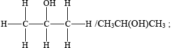
secondary (alcohol);
propanone / acetone;
Examiners report
For (a) (i) of those who attempted this question about half got the order correct. Those with it correct usually gave creditable explanations. With the weaker candidates the most common error was an explanation making reference to the breaking of covalent bonds rather than intermolecular forces.
In (a)(ii) most candidates identified butane as the compound but there were very few sound explanations
The oxidation products of propan-1-ol were generally given correctly by both name and structure.
The structure in (a)(iv) was usually drawn correctly.
Candidates were generally able to identify the class of alcohol and the name of the oxidation product in (a)(v), although this was sometimes referred to as propan-2-one.
Ethene, C2H4, and hydrazine, N2H4, are hydrides of adjacent elements in the periodic table.
The polarity of a molecule can be explained in terms of electronegativity.
The reaction between N2H4(aq) and HCl (aq) can be represented by the following equation.
\[{{\text{N}}_2}{{\text{H}}_4}({\text{aq)}} + 2{\text{HCl(aq)}} \to {{\text{N}}_2}{\text{H}}_6^{2 + }({\text{aq)}} + 2{\text{C}}{{\text{l}}^ - }({\text{aq)}}\]
(i) Draw Lewis (electron dot) structures for \({{\text{C}}_{\text{2}}}{{\text{H}}_{\text{4}}}\) and \({{\text{N}}_{\text{2}}}{{\text{H}}_{\text{4}}}\) showing all valence electrons.
(ii) State and explain the H–C–H bond angle in ethene and the H–N–H bond angle in hydrazine.
(i) Define the term electronegativity.
(ii) Compare the relative polarities of the C–H bond in ethene and the N–H bond in hydrazine.
(iii) Hydrazine is a polar molecule and ethene is non-polar. Explain why ethene is non-polar.
The boiling point of hydrazine is much higher than that of ethene. Explain this difference in terms of the intermolecular forces in each compound.
Hydrazine is a valuable rocket fuel.
The equation for the reaction between hydrazine and oxygen is given below.
\[{{\text{N}}_2}{{\text{H}}_4}({\text{g)}} + {{\text{O}}_2}({\text{g)}} \to {{\text{N}}_2}({\text{g)}} + 2{{\text{H}}_2}{\text{O(g)}}\]
Use the bond enthalpy values from Table 10 of the Data Booklet to determine the enthalpy change for this reaction.
State the name of the product and identify the type of reaction which occurs between ethene and hydrogen chloride.
(i) Identify the type of reaction that occurs.
(ii) Predict the value of the H–N–H bond angle in \({{\text{N}}_{\text{2}}}{\text{H}}_6^{2 + }\).
Markscheme
(i) 
Accept x’s, dots or lines for electron pairs
(ii) H–C–H:
any angle between 118° and 122°;
due to three negative charge centres/electron domains/electron pairs;
H–N–H:
any angle between 104° and 108°;
due to four negative charge centres/electron domains/electron pairs;
extra repulsion due to lone electron pairs;
Do not allow ECF for wrong Lewis structures.
(i) (relative) measure of an atoms attraction for electrons;
in a covalent bond / shared pair;
(ii) C–H is less polar as C is less electronegative / N–H bond is more polar as N is more electronegative / difference in electronegativity is greater for N-H than C-H;
(iii) bond polarities cancel in \({{\text{C}}_2}{{\text{H}}_4}\) / OWTTE;
weaker van der Waals’/London/dispersion/intermolecular forces in ethene;
stronger (intermolecular) hydrogen bonding in hydrazine;
If no comparison between strengths then [1 max].
bonds broken: 4 N–H, N–N, O=O / \( + {\text{2220 (kJ}}\,{\text{mo}}{{\text{l}}^{ - 1}}{\text{)}}\);
bonds formed: N\(\equiv\)N, 4O–H / \( - 2801{\text{ (kJ}}\,{\text{mo}}{{\text{l}}^{ - 1}}{\text{)}}\);
\( - 581{\text{ (kJ}}\,{\text{mo}}{{\text{l}}^{ - 1}}{\text{)}}\);
Award [3] for correct final answer.
chloroethane;
(electrophilic) addition;
Do not accept free radical/nucleophilic addition.
(i) acid-base/neutralization;
(ii) 109°/109.5°;
Examiners report
This was a popular question and was answered quite successfully. The Lewis structure for ethene was given correctly by the great majority of the candidates, but that of hydrazine by only about half of them. Incorrect answers had double bonds appearing between the 2 nitrogen atoms and lone pairs on nitrogen atoms not shown. Those who could draw the correct structure in (i) gave the correct bond angle, but the explanation was not given correctly by many. Only very few scored the five marks as many failed to mention the extra repulsion of the lone pair.
The definition of electronegativity was not well known and many forgot to mention covalent bond or got confused with ionization and electron affinity and talked about a mole of gaseous atoms.
In part (c) most knew that hydrogen bonding in hydrazine was stronger than the van der Waals’ forces in ethene and explained its higher boiling point. However, some candidates described hydrogen bonding as the bond between N and H in the molecule, and some omitted a comparison of the relative strengths.
The calculation for the enthalpy change produced some completely correct calculations but many candidates lost marks here for using the wrong bond energies, although ECF was applied to the structures drawn in part (a).
In (e) ‘addition’ was correctly identified as the reaction type by most but when asked in (f) to identify the final reaction type few recognised it as an acid-base reaction, however, the bond angle was given correctly by many.
In (e) ‘addition’ was correctly identified as the reaction type by most but when asked in (f) to identify the final reaction type few recognised it as an acid-base reaction, however, the bond angle was given correctly by many.
Boron is most often encountered as a component in borosilicate glass (heat resistant glass).
The naturally occurring element contains two stable isotopes, \(_{\;{\text{5}}}^{{\text{10}}}{\text{B}}\) and \(_{\;{\text{5}}}^{{\text{11}}}{\text{B}}\).
State the number of protons, neutrons and electrons in an atom of \(_{\;{\text{5}}}^{{\text{11}}}{\text{B}}\).

The relative atomic mass of boron is 10.8, to three significant figures. Calculate the percentage of \(_{\;{\text{5}}}^{{\text{10}}}{\text{B}}\) in the naturally occurring element.
Isotopes of boron containing 7 and 8 neutrons also exist. Suggest why releasing isotopes containing more neutrons than the stable isotope into the environment can be dangerous.
(i) State the formula of the compound that boron forms with fluorine.
(ii) Explain why this compound acts as a Lewis acid.
Markscheme
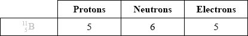 ;
\(10x + 11(100 - x) = 10.8 \times 100\);
\((x = )20\% \);
Award [2] for correct final answer.
Do not allow ECF.
radioactive/radioisotope(s)/give out radiation;
Accept answers that outline the effects of radioactive pollution of the environment.
Do not accept “unstable”.
(i) \({\text{B}}{{\text{F}}_3}\);
(ii) incomplete valence shell / electron deficient / OWTTE;
capable of accepting an electron pair;
Examiners report
This question in general was well answered. Most candidates were able to identify the elementary particles of atomic boron with an encouraging number of students calculating the proportions of the two isotopes. A significant number did leave the question blank however although it should be a familiar example. Most candidates were able to state the formula of boron trifluoride and describe the action of Lewis acids although only a minority could explain its behaviour in terms of boron’s incomplete octet.
This question in general was well answered. Most candidates were able to identify the elementary particles of atomic boron with an encouraging number of students calculating the proportions of the two isotopes. A significant number did leave the question blank however although it should be a familiar example. Most candidates were able to state the formula of boron trifluoride and describe the action of Lewis acids although only a minority could explain its behaviour in terms of boron’s incomplete octet.
This question in general was well answered. Most candidates were able to identify the elementary particles of atomic boron with an encouraging number of students calculating the proportions of the two isotopes. A significant number did leave the question blank however although it should be a familiar example. Most candidates were able to state the formula of boron trifluoride and describe the action of Lewis acids although only a minority could explain its behaviour in terms of boron’s incomplete octet.
This question in general was well answered. Most candidates were able to identify the elementary particles of atomic boron with an encouraging number of students calculating the proportions of the two isotopes. A significant number did leave the question blank however although it should be a familiar example. Most candidates were able to state the formula of boron trifluoride and describe the action of Lewis acids although only a minority could explain its behaviour in terms of boron’s incomplete octet.
Brass is a copper containing alloy with many uses. An analysis is carried out to determine the percentage of copper present in three identical samples of brass. The reactions involved in this analysis are shown below.
\[\begin{array}{*{20}{l}} {{\text{Step 1: Cu(s)}} + {\text{2HN}}{{\text{O}}_3}{\text{(aq)}} + {\text{2}}{{\text{H}}^ + }{\text{(aq)}} \to {\text{C}}{{\text{u}}^{2 + }}{\text{(aq)}} + {\text{2N}}{{\text{O}}_2}{\text{(g)}} + {\text{2}}{{\text{H}}_2}{\text{O(l)}}} \\ {{\text{Step 2: 4}}{{\text{I}}^ - }{\text{(aq)}} + {\text{2C}}{{\text{u}}^{2 + }}{\text{(aq)}} \to {\text{2CuI(s)}} + {{\text{I}}_2}{\text{(aq)}}} \\ {{\text{Step 3: }}{{\text{I}}_2}{\text{(aq)}} + {\text{2}}{{\text{S}}_2}{\text{O}}_3^{2 - }{\text{(aq)}} \to {\text{2}}{{\text{I}}^ - }{\text{(aq)}} + {{\text{S}}_4}{\text{O}}_6^{2 - }{\text{(aq)}}} \end{array}\]
(a) (i) Deduce the change in the oxidation numbers of copper and nitrogen in step 1.
Copper:
Nitrogen:
(ii) Identify the oxidizing agent in step 1.
(b) A student carried out this experiment three times, with three identical small brass nails, and obtained the following results.
\[{\text{Mass of brass}} = 0.456{\text{ g}} \pm 0.001{\text{ g}}\]

(i) Calculate the average amount, in mol, of \({{\text{S}}_{\text{2}}}{\text{O}}_3^{2 - }\) added in step 3.
(ii) Calculate the amount, in mol, of copper present in the brass.
(iii) Calculate the mass of copper in the brass.
(iv) Calculate the percentage by mass of copper in the brass.
(v) The manufacturers claim that the sample of brass contains 44.2% copper by mass. Determine the percentage error in the result.
(c) With reference to its metallic structure, describe how brass conducts electricity.
Markscheme
(a) (i) Copper:
0 to +2 / increases by 2 / +2 / 2+;
Allow zero/nought for 0.
Nitrogen:
+5 to +4 / decreases by 1 / –1 / 1–;
Penalize missing + sign or incorrect notation such as 2+, 2+ or II, once only.
(ii) nitric acid/\({\text{HN}}{{\text{O}}_{\text{3}}}\) / \({\text{NO}}_3^ - \)/nitrate;
Allow nitrogen from nitric acid/nitrate but not just nitrogen.
(b) (i) \(0.100 \times 0.0285\);
\(2.85 \times {10^{ - 3}}{\text{ (mol)}}\);
Award [2] for correct final answer.
(ii) \(2.85 \times {10^{ - 3}}{\text{ (mol)}}\);
(iii) \(63.55 \times 2.85 \times {10^{ - 3}} = 0.181{\text{ g}}\);
Allow 63.5.
(iv) \(\left( {\frac{{0.181}}{{0.456}} \times 100 = } \right){\text{ }}39.7\% \);
(v) \(\left( {\frac{{44.2 - 39.7}}{{44.2}} \times 100 = } \right){\text{ }}10.2\% \);
Allow 11.3% i.e. percentage obtained in (iv) is used to divide instead of 44.2%.
(c) Brass has:
delocalized electrons / sea of mobile electrons / sea of electrons free to move;
No mark for just “mobile electrons”.
Examiners report
There were several G2 comments on this question, all of which claimed that the question was difficult for SL candidates especially as a three-step reaction process was involved. Certainly some of the weaker candidates struggled with this question, but with the application of ECF marks, most candidates should have been able to score the majority of marks in the question. What was more worrying was the large number of candidates who scored zero or close to zero marks on Q.1, which meant they had little idea of a titration from their exposure to laboratory work in the programme as a whole.
In (a) (i), most candidates showed a reasonable understanding of oxidation numbers, but relatively few scored full marks as they did not read the question which asked explicitly for the change in oxidation numbers. A number also incorrectly wrote 5+ going to 4+ instead of +5 going to +4 i.e. they mixed up charges with oxidation numbers. In the oxidizing agent question in part (ii), the most common mistake was candidates writing nitrogen, instead of the nitric acid, which is the agent involved. In (b), candidates typically either did very well or scored almost no marks at all. In (i), a number of candidates did not convert to dm3 and some did not use the average volume in their calculations, again failing to read the question carefully. (c) however was well answered, though some candidates made reference to the ions as charge carriers rather than giving a description of delocalized electrons. Other candidates stated just mobile electrons instead of stating sea of mobile electrons which was required for the mark.
Two groups of students (Group A and Group B) carried out a project* on the chemistry of some group 7 elements (the halogens) and their compounds.
* Adapted from J Derek Woollins, (2009), Inorganic Experiments and Open University, (2008), Exploring the Molecular World.
In the first part of the project, the two groups had a sample of iodine monochloride (a corrosive brown liquid) prepared for them by their teacher using the following reaction.
\[{{\text{I}}_{\text{2}}}{\text{(s)}} + {\text{C}}{{\text{l}}_{\text{2}}}{\text{(g)}} \to {\text{2ICl(l)}}\]
The following data were recorded.

The students reacted ICl(l) with CsBr(s) to form a yellow solid, \({\text{CsIC}}{{\text{l}}_{\text{2}}}{\text{(s)}}\), as one of the products. \({\text{CsIC}}{{\text{l}}_{\text{2}}}{\text{(s)}}\) has been found to produce very pure CsCl(s) which is used in cancer treatment.
To confirm the composition of the yellow solid, Group A determined the amount of iodine in 0.2015 g of \({\text{CsIC}}{{\text{l}}_{\text{2}}}{\text{(s)}}\) by titrating it with \({\text{0.0500 mol}}\,{\text{d}}{{\text{m}}^{ - 3}}{\text{ N}}{{\text{a}}_{\text{2}}}{{\text{S}}_{\text{2}}}{{\text{O}}_{\text{3}}}{\text{(aq)}}\). The following data were recorded for the titration.

(i) State the number of significant figures for the masses of \({{\text{I}}_{\text{2}}}{\text{(s)}}\) and ICl(l).
\({{\text{I}}_{\text{2}}}{\text{(s)}}\):
ICl (l):
(ii) The iodine used in the reaction was in excess. Determine the theoretical yield, in g, of ICl(l).
(iii) Calculate the percentage yield of ICl(l).
(iv) Using a digital thermometer, the students discovered that the reaction was exothermic. State the sign of the enthalpy change of the reaction, \(\Delta H\).
Although the molar masses of ICl and \({\rm{B}}{{\rm{r}}_2}\) are very similar, the boiling point of ICl is 97.4 °C and that of \({\rm{B}}{{\rm{r}}_2}\) is 58.8 °C. Explain the difference in these boiling points in terms of the intermolecular forces present in each liquid.
(i) Calculate the percentage of iodine by mass in \({\text{CsIC}}{{\text{l}}_{\text{2}}}{\text{(s)}}\), correct to three significant figures.
(ii) State the volume, in \({\text{c}}{{\text{m}}^{\text{3}}}\), of \({\text{0.0500 mol}}\,{\text{d}}{{\text{m}}^{ - 3}}{\text{ N}}{{\text{a}}_{\text{2}}}{{\text{S}}_{\text{2}}}{{\text{O}}_{\text{3}}}{\text{(aq)}}\) used in the titration.
(iii) Determine the amount, in mol, of \({\text{0.0500 mol}}\,{\text{d}}{{\text{m}}^{ - 3}}{\text{ N}}{{\text{a}}_{\text{2}}}{{\text{S}}_{\text{2}}}{{\text{O}}_{\text{3}}}{\text{(aq)}}\) added in the titration.
(iv) The overall reaction taking place during the titration is:
\[{\text{CsICl(s)}} + {\text{2N}}{{\text{a}}_2}{{\text{S}}_2}{{\text{O}}_3}{\text{(aq)}} \to {\text{NaCl(aq)}} + {\text{N}}{{\text{a}}_2}{{\text{S}}_4}{{\text{O}}_6}{\text{(aq)}} + {\text{CsCl(aq)}} + {\text{NaI(aq)}}\]
Calculate the amount, in mol, of iodine atoms, I, present in the sample of \({\text{CsIC}}{{\text{l}}_{\text{2}}}{\text{(s)}}\).
(v) Calculate the mass of iodine, in g, present in the sample of \({\text{CsIC}}{{\text{l}}_{\text{2}}}\)
(vi) Determine the percentage by mass of iodine in the sample of \({\text{CsIC}}{{\text{l}}_{\text{2}}}{\text{(s)}}\), correct to three significant figures, using your answer from (v).
Markscheme
(i) I2(s): four/4 and ICl(l): three/3;
(ii) \(n{\text{(C}}{{\text{l}}_2}{\text{)}} = {\text{ }}\left( {\frac{{2.24}}{{2 \times 35.45}} = } \right){\text{ }}0.0316/3.16 \times {10^{ - 2}}{\text{ (mol)}}\);
Allow answers such as 3.2 \( \times \) 10–2/0.032/3.15 \( \times \) 10–2/0.0315 (mol).
\(n{\text{(ICl)}} = 2 \times 0.0316/0.0632/6.32 \times {10^{ - 2}}{\text{ (mol)}}\);
Allow answers such as 6.4 \( \times \) 10–2/0.064/6.3 \( \times \) 10–2/0.063 (mol).
\(m{\text{(ICl)}} = (0.0632 \times 162.35 = ){\text{ }}10.3{\text{ (g)}}\);
Allow answers in range 10.2 to 10.4 (g).
Award [3] for correct final answer.
(iii) \(\left( {\frac{{8.60}}{{10.3}} \times 100 = } \right){\text{ }}83.5\% \);
Allow answers in the range of 82.5 to 84.5%.
(iv) negative/–/minus/ < 0;
Br2 has London/dispersion/van der Waals’ forces/vdW and ICl has (London/dispersion/van der Waals’ forces/vdW and) dipole–dipole forces;
dipole–dipole forces are stronger than London/dispersion/van der Waals’/vdW forces;
Allow induced dipole-induced dipole forces for London forces.
Allow interactions instead of forces.
Do not allow ICl polar and Br2 non-polar for M1.
Name of IMF in both molecules is required for M1 and idea of dipole-dipole stronger than vdW is required for M2.
(i) \(\left( {\frac{{126.90}}{{330.71}} \times 100} \right) = 38.4\% \);
(ii) \((25.25 - 1.05) = 24.20{\text{ (c}}{{\text{m}}^{\text{3}}}{\text{)}}\);
Accept 24.2 (cm3) but not 24 (cm3).
(iii) \(\left( {\frac{{24.20 \times 5.00 \times {{10}^{ - 2}}}}{{1000}}} \right) = 1.21 \times {10^{ - 3}}/0.00121{\text{ (mol)}}\);
(iv) \((0.5 \times 1.21 \times {10^{ - 3}}) = 6.05 \times {10^{ - 4}}/0.000605{\text{ (mol)}}\);
Accept alternate method e.g. (0.384/126.9 \( \times \) 0.2015) = 6.10 \( \times \) 10–4/0.000610 (mol).
(v) \((126.90 \times 6.05 \times {10^{ - 4}}) = 7.68 \times {10^{ - 2}}/0.0768{\text{ (g)}}\);
Accept alternate method e.g. (6.10 \( \times \) 10–4 \( \times \) 126.9) or (0.2015 \( \times \) 0.384) = 7.74 \( \times \) 10–2/0.00774 (g).
(vi) \(\left( {\frac{{7.68 \times {{10}^{ - 2}}}}{{0.2015}} \times 100} \right) = 38.1\% \);
Answer must be given to three significant figures.
Examiners report
This was a data based question based on quantitative chemistry. Majority of candidates were able to gain almost full marks with some candidates failing to recognise that chlorine is the limiting reagent in part (a) (ii). Some candidates calculated percentage experimental error instead of percentage yield whereas some other candidates did not pay attention to significant digits.
In part (b), explaining the difference in the boiling points of Br2 and ICl in terms of the intermolecular forces presented a challenge to many candidates. Explanations were vague or unclear and in some cases incorrect in terms of the intermolecular forces present.
In part (c), calculations of moles of iodine occasionally saw the erroneous use of Avogadro’s constant.
Define the term average bond enthalpy.
Deduce the balanced chemical equation for the complete combustion of butan-1-ol.
Determine the standard enthalpy change, in \({\text{kJ}}\,{\text{mo}}{{\text{l}}^{ - 1}}\), for the complete combustion of butan-1-ol, using the information from Table 10 of the Data Booklet.
Based on the types of intermolecular force present, explain why butan-1-ol has a higher boiling point than butanal.
Markscheme
energy required to break (1 mol of) a bond in a gaseous molecule/state;
Accept energy released when (1 mol of) a bond is formed in a gaseous molecule/state / enthalpy change when (1 mol of) bonds are formed or broken in the gaseous molecule/state.
average values obtained from a number of similar bonds/compounds / OWTTE;
\({\text{C}}{{\text{H}}_3}{{\text{(C}}{{\text{H}}_2}{\text{)}}_3}{\text{OH(l)}} + {\text{6}}{{\text{O}}_2}{\text{(g)}} \to {\text{4C}}{{\text{O}}_2}{\text{(g)}} + {\text{5}}{{\text{H}}_2}{\text{O(l)}}\);
Allow C4H9OH or C4H10O for CH3(CH2)3OH.
Ignore state symbols.
Bonds broken:
(6)(O=O) \( + \) (3)(C–C) \( + \) (1)(O–H) \( + \) (1)(C–O) \( + \) (9)(C–H) /
\(\left( {(6)(498) + (3)(347) + (1)(464) + (1)(358) + (9)(413) = } \right){\text{ }}8568{\text{ (kJ}}\,{\text{mo}}{{\text{l}}^{ - 1}}{\text{)}}\);
Bonds formed:
(8)(C=O) \( + \) (10)(O–H) / \(\left( {(8)(746) + (10)(464) = } \right){\text{ }}10608{\text{ (kJ}}\,{\text{mo}}{{\text{l}}^{ - 1}}{\text{)}}\);
\(\Delta H{\text{ = }}(8568 - 10608 = ){\text{ }} - 2040{\text{ (kJ}}\,{\text{mo}}{{\text{l}}^{ - 1}}{\text{)}}\);
Award [3] for correct final answer.
Award [2] for +2040 (kJ\(\,\)mol–1).
hydrogen bonding in butan-1-ol;
stronger than dipole-dipole attractions in butanal;
Accept converse argument.
Do not penalize dipole-dipole bonding instead of dipole-dipole attractions.
Examiners report
Again this definition proved very challenging even though it has appeared on recent examination papers and very few scored both marks. Gaseous was often omitted and few stated that the average values are obtained from a number of similar bonds (again similar was often omitted).
In part (b) many of the better candidates were able to write the correct balanced combustion reaction. Some had an incorrect coefficient for oxygen and others wrote incorrect products which were often hydrocarbons.
In part (c) there were some fully correct responses, but many did lose marks. Common mistakes included using the O–O bond energy value instead of O=O. Others mixed up the signs.
In part (d) it was pleasing that nearly all candidates knew that hydrogen bonding occurs in butan-1-ol, but only the best students mentioned the dipole-dipole interactions in butanal. Generally butanal was described as having van der Waal’s or dispersion forces.
Ammonia, \({\text{N}}{{\text{H}}_{\text{3}}}\), is a base according to both the Brønsted–Lowry and the Lewis theories of acids and bases.
The equation for the reaction between sodium hydroxide, NaOH, and nitric acid, \({\text{HN}}{{\text{O}}_{\text{3}}}\), is shown below.
\[\begin{array}{*{20}{l}} {{\text{NaOH(aq)}} + {\text{HN}}{{\text{O}}_3}{\text{(aq)}} \to {\text{NaN}}{{\text{O}}_3}{\text{(aq)}} + {{\text{H}}_2}{\text{O(l)}}}&{{\text{ }}\Delta H = - 57.6{\text{ kJ}}\,{\text{mo}}{{\text{l}}^{ - 1}}} \end{array}\]
Distinguish between the terms strong base and weak base, and state one example of each.
State the equation for the reaction of ammonia with water.
Explain why ammonia can act as a Brønsted–Lowry base.
Explain why ammonia can also act as a Lewis base.
(i) When ammonium chloride, \({\text{N}}{{\text{H}}_{\text{4}}}{\text{Cl(aq)}}\), is added to excess solid sodium carbonate, \({\text{N}}{{\text{a}}_{\text{2}}}{\text{C}}{{\text{O}}_{\text{3}}}{\text{(s)}}\), an acid–base reaction occurs. Bubbles of gas are produced and the solid sodium carbonate decreases in mass. State one difference which would be observed if nitric acid, \({\text{HN}}{{\text{O}}_{\text{3}}}{\text{(aq)}}\), was used instead of ammonium chloride.
(ii) Deduce the Lewis structures of the ammonium ion, \({\text{NH}}_4^ + \), and the carbonate ion, \({\text{CO}}_3^{2 - }\).
Ammonium ion\(\quad \quad \quad \quad \quad \quad \quad \quad \quad \quad \quad \quad \quad \quad \quad \)Carbonate ion
(iii) Predict the shapes of \({\text{NH}}_4^ + \) and \({\text{CO}}_3^{2 - }\).
\({\text{NH}}_4^ + \):
\({\text{CO}}_3^{2 - }\):
(i) Sketch and label an enthalpy level diagram for this reaction.
(ii) Deduce whether the reactants or the products are more energetically stable, stating your reasoning.
(iii) Calculate the change in heat energy, in kJ, when \({\text{50.0 c}}{{\text{m}}^{\text{3}}}\) of \({\text{2.50 mol}}\,{\text{d}}{{\text{m}}^{ - 3}}\) sodium hydroxide solution is added to excess nitric acid.
When 5.35 g ammonium chloride, \({\text{N}}{{\text{H}}_{\text{4}}}{\text{Cl(s)}}\), is added to \({\text{100.0 c}}{{\text{m}}^{\text{3}}}\) of water, the temperature of the water decreases from 19.30 °C to 15.80 °C. Determine the enthalpy change, in \({\text{kJ}}\,{\text{mo}}{{\text{l}}^{ - 1}}\), for the dissolving of ammonium chloride in water.
Markscheme
a strong base: base/electrolyte (assumed to be almost) completely/100% dissociated/ionized (in solution/water) / OWTTE and a weak base: base/electrolyte partially dissociated/ionized (in solution/water) / OWTTE;
example of a strong base: any group I hydroxide / \({\text{Ba(OH}}{{\text{)}}_2}\);
example of a weak base: \({\text{N}}{{\text{H}}_3}\) / \({\text{C}}{{\text{H}}_3}{\text{N}}{{\text{H}}_2}\) / any reasonable answer;
\({\text{N}}{{\text{H}}_3} + {{\text{H}}_2}{\text{O}} \rightleftharpoons {\text{NH}}_4^ + + {\text{O}}{{\text{H}}^ - }\);
accepts a proton/\({{\text{H}}^ + }\) / OWTTE;
donates an electron pair;
(i) more vigorous reaction / more gas bubbles / OWTTE;
more heat released;
solid decreases more quickly;
(ii) 
Accept any combination of lines, dots or crosses to represent electron pairs.
(iii) NH4+:
tetrahedral;
CO32–:
trigonal/triangular planar;
(i) enthalpy on y-axis;
Do not accept energy.
reactants higher than products;
\(\Delta H\) labelled;

Accept appropriate formulas for reactants and products.
Arrow heads not needed.
57.6 is acceptable as an alternative to \(\Delta H\).
(ii) products are more stable as they are at a lower enthalpy level / energy has been given off by the reactants / reaction is exothermic / OWTTE;
(iii) \(n{\text{(NaOH)}} = 0.125{\text{ mol}}\);
change in heat energy \( = ( - 57.6 \times 0.125) = - 7.20{\text{ (kJ)}}\) / heat released \( = (57.6 \times 0.125) = 7.20{\text{ (kJ)}}\);
\(q = (mc\Delta T = ){\text{ }}100.0 \times 4.18 \times 3.50/1463{\text{ J}}/1460{\text{ J}}\);
\(n{\text{(N}}{{\text{H}}_{\text{4}}}{\text{Cl)}} = \frac{{5.35}}{{53.5}}/0.100{\text{ mol}}\);
\(\Delta H = + 14.6/14.6{\text{ (kJ mo}}{{\text{l}}^{ - 1}}{\text{)}}\);
Accept q = 105.35 \( \times \) 4.18 \( \times \) 3.50 / 1541 J.
Accept \(\Delta H\) = +15.4 / 15.4 (kJ\(\,\)mol–1)
Examiners report
Part (a) was answered well although some mentioned “dissolving” instead of “dissociating”.
In (b), the equation was well done.
In (b), the equation was well done as was (ii).
Inevitably, many omitted “pair” in (iii).
Part (c)(i) was generally correct. In (c)(ii) the carbonate ion was legitimately examined under AS 4.2.7; it was not well known – there were too many carbons with expanded octets and oxygens where the lone pairs had been missed. (In the HL specification, the carbonate ion‘s delocalization is considered.) In (iii), however, the shapes were well known.
If there was to be an error made in (d)(i), it was to omit “enthalpy” from the y-axis and some unaccountably put the correct chemicals on the line and then reversed the names products and reactants. The calculations in (d)(iii) inevitably depended on an ability to calculate and think logically.
The calculations in (e) inevitably depended on an ability to calculate and think logically.
In some countries, ethanol is mixed with gasoline (petrol) to produce a fuel for cars called gasohol.
Define the term average bond enthalpy.
Use the information from Table 10 of the Data Booklet to determine the standard enthalpy change for the complete combustion of ethanol.
\[{\text{C}}{{\text{H}}_{\text{3}}}{\text{C}}{{\text{H}}_{\text{2}}}{\text{OH(g)}} + {\text{3}}{{\text{O}}_{\text{2}}}{\text{(g)}} \to {\text{2C}}{{\text{O}}_{\text{2}}}{\text{(g)}} + {\text{3}}{{\text{H}}_{\text{2}}}{\text{O(g)}}\]
The standard enthalpy change for the complete combustion of octane, \({{\text{C}}_{\text{8}}}{{\text{H}}_{{\text{18}}}}\), is \( - 5471{\text{ kJ}}\,{\text{mo}}{{\text{l}}^{ - 1}}\). Calculate the amount of energy produced in kJ when 1 g of ethanol and 1 g of octane is burned completely in air.
Ethanol can be oxidized using acidified potassium dichromate, \({{\text{K}}_{\text{2}}}{\text{C}}{{\text{r}}_{\text{2}}}{{\text{O}}_{\text{7}}}\), to form two different organic products.
\({\text{C}}{{\text{H}}_{\text{3}}}{\text{C}}{{\text{H}}_{\text{2}}}{\text{OH}}\xrightarrow[{{{\text{H}}^ + }}]{{{\text{C}}{{\text{r}}_{\text{2}}}{\text{O}}_7^{2 - }}}\) A \(\xrightarrow[{{{\text{H}}^ + }}]{{{\text{C}}{{\text{r}}_{\text{2}}}{\text{O}}_7^{2 - }}}\) B
State the structural formulas of the organic products A and B and describe the conditions required to obtain a high yield of each of them.
Deduce and explain whether ethanol or A has the higher boiling point.
Ethene can be converted into ethanol by direct hydration in the presence of a catalyst according to the following equation.
\[{{\text{C}}_{\text{2}}}{{\text{H}}_{\text{4}}}{\text{(g)}} + {{\text{H}}_{\text{2}}}{\text{O(g)}} \rightleftharpoons {\text{C}}{{\text{H}}_{\text{3}}}{\text{C}}{{\text{H}}_{\text{2}}}{\text{OH(g)}}\]
For this reaction identify the catalyst used and state one use of the ethanol formed other than as a fuel.
State the name of one structural isomer of pentane.
Markscheme
energy required to break (1 mol of) a bond in a gaseous molecule/state;
Accept energy released when (1 mol of) a bond is formed in a gaseous molecule/state / enthalpy change when (1 mol of) bonds are made or broken in the gaseous molecule/state.
average values obtained from a number of similar bonds/compounds / OWTTE;
Bonds broken
\({\text{(1)(C}}–{\text{C)}} + {\text{(1)(O}}–{\text{H)}} + {\text{(5)(C}}–{\text{H)}} + {\text{(1)(C}}–{\text{O)}} + {\text{(3)(O=O)}}\)
\( = (1)(347) + (1)(464) + (5)(413) + (1)(358) + (3)(498) = 4728{\text{ (kJ)}}\);
Bonds formed
\({\text{(2}} \times {\text{2)(C=O)}} + {\text{(3}} \times {\text{2)(O}}–{\text{H)}}\)
\( = (4)(746) + (6)(464) = 5768{\text{ (kJ)}}\);
\(\Delta H = 4728 - 5768 = - 1040{\text{ kJ}}\,{\text{mo}}{{\text{l}}^{ - 1}}/ - 1040{\text{ kJ}}\);
Units needed for last mark.
Award [3] for final correct answer.
Award [2] for +1040 kJ.
\({M_{\text{r}}}{\text{(}}{{\text{C}}_{\text{2}}}{{\text{H}}_{\text{5}}}{\text{OH)}} = 46.08/46.1\) and \({M_{\text{r}}}{\text{(}}{{\text{C}}_{\text{8}}}{{\text{H}}_{{\text{18}}}}{\text{)}} = 114.26/114.3\);
1ethanol produces 22.57 kJ and 1octane produces 47.88 kJ;
Accept values ranges of 22.5–23 and 47.8–48 kJ respectively.
No penalty for use of Mr = 46 and Mr = 114.
A: \({\text{C}}{{\text{H}}_{\text{3}}}{\text{CHO}}\);
B: \({\text{C}}{{\text{H}}_{\text{3}}}{\text{COOH/C}}{{\text{H}}_{\text{3}}}{\text{C}}{{\text{O}}_{\text{2}}}{\text{H}}\);
Accept either full or condensed structural formulas but not the names or molecular formulas.
A: distillation;
B: reflux;
ethanol/; \({\text{C}}{{\text{H}}_{\text{3}}}{\text{C}}{{\text{H}}_{\text{2}}}{\text{OH}}\)
hydrogen bonding (in ethanol);
Award second point only if the first is obtained.
(concentrated) \({{\text{H}}_{\text{3}}}{\text{P}}{{\text{O}}_{\text{4}}}\)/(concentrated) phosphoric acid / \({{\text{H}}_{\text{2}}}{\text{S}}{{\text{O}}_{\text{4}}}\)/sulfuric acid;
dyes / drugs / cosmetics / solvent / (used to make) esters / (used in) esterification/disinfectant;
(2-)methylbutane / (2,2-)dimethylpropane;
Examiners report
The definition of average bond enthalpy given by most candidates was not complete in (a) (i). The word gaseous was missing and the fact that it is an average of values from bonds in similar compounds was very rarely mentioned.
In (ii) the calculation of the standard enthalpy change for the combustion of ethanol was done correctly by most candidates.
In (a) (iii) the amount of energy produced by 1g of ethanol and by 1g of octane was correctly calculated by some of the candidates.
Candidates gave correct formulas for the aldehyde and the carboxylic acid in (iv), but the conditions required to obtain a high yield were not correctly stated or were absent.
In (a) (v) most candidates correctly stated that ethanol would have a higher boiling point than ethanal because of the presence of hydrogen bonding in ethanol.
In (vi) the catalyst for the conversion of ethane into ethanol was not always identified.
In (b)(i) most candidates stated correctly that methylbutane would be a structural isomer of pentane.
The boiling points of the isomers of pentane, \({{\text{C}}_{\text{5}}}{{\text{H}}_{{\text{12}}}}\), shown are 10, 28 and 36 °C, but not necessarily in that order.

Identify the boiling points for each of the isomers A, B and C and state a reason for your answer.

State the IUPAC names of isomers B and C.
B:
C:
Both \({{\text{C}}_{\text{5}}}{{\text{H}}_{{\text{12}}}}\) and \({{\text{C}}_{\text{5}}}{{\text{H}}_{{\text{11}}}}{\text{OH}}\) can be used as fuels. Predict which compound would release a greater amount of heat per gram when it undergoes complete combustion. Suggest two reasons to support your prediction.
In many cities around the world, public transport vehicles use diesel, a liquid hydrocarbon fuel, which often contains sulfur impurities and undergoes incomplete combustion. All public transport vehicles in New Delhi, India, have been converted to use compressed natural gas (CNG) as fuel. Suggest two ways in which this improves air quality, giving a reason for your answer.
Markscheme

Award [1] if correct boiling points are assigned to 3 isomers.
increase in branching / more side chains / more spherical shape / reduced surface contact / less closely packed;
weaker intermolecular force/van der Waals’/London/dispersion forces;
Accept the opposite arguments
B: 2-methylbutane/methylbutane;
C: 2,2-dimethyl propane/dimethyl propane;
Do not penalize missing commas, hyphens or added spaces.
Do not accept 2-dimethylpropane, or 2,2-methylpropane.
\({{\text{C}}_5}{{\text{H}}_{12}}\);
Accept any two of the following explanations.
\({{\text{C}}_5}{{\text{H}}_{11}}{\text{OH}}\) has greater molar mass / produces less grams of \({\text{C}}{{\text{O}}_2}\) and \({{\text{H}}_2}{\text{O}}\) per gram of the compound / suitable calculations to show this;
\({{\text{C}}_5}{{\text{H}}_{11}}{\text{OH}}\) contains an O atom which contributes nothing to the energy released / partially oxidized / OWTTE;
analogous compounds such as butane and butan-1-ol show a lower value for the alcohol per mole in the data book / OWTTE;
the total bond strength in the pentanol molecule is higher than the total bond strength in pentane;
the total amount of energy produced in bond formation of the products per mole is the same;
fewer moles of pentanol in 1 g;
pentanol requires more energy to break intermolecular forces/hydrogen bonding / OWTTE;
Improvements [2]
less/no particulates/C/CO/VOC’s produced with CNG;
less/no SO2/SOx produced;
Reasons [1 max]
CO/SO2 toxic/poisonous;
SO2 causes acid rain;
CNG is likely to undergo complete/more combustion;
CNG has no/less sulfur impurities;
Examiners report
This question also featured on the G2 forms, as some teachers thought that the inclusion of Aim 8 type questions such as this would disadvantage candidates. However performance by the majority was very good. It should be noted that questions of this type will always be asked in future papers. In (a), most candidates correctly identified the boiling points although some reversed the order and a few had B with the highest boiling point. Explanations for this trend were not so well answered. Some candidates referred to breaking bonds in the carbon chain and several answers referred to the length of the carbon chain rather than the degree of branching.
The IUPAC names were generally well known, with the most common errors being the use of “pent” instead of “prop” and the omission of one of the locants, or “di” in “2,2-dimethylpropane”.
Many candidates scored 0 in part b) as they incorrectly suggested that pentan-1-ol would have a larger energy density than pentane. It is clear from the variety of wrong answers and reasons that candidates are not familiar with the ideas tested in this question. Many candidates referred to hydrogen bonds between molecules, as a reason for pentan-1-ol releasing more energy, only a few consulted their Data Booklet and made reference to this.
In c) there were 2 marks for improvements to air quality and 1 mark for a reason. Most candidates included the idea that there would be less carbon monoxide formed and that this was a poisonous gas. There were fewer references to oxides of sulfur, although many said that CNG has fewer S impurities rather than to say that less SO2/SOx is released, in this case as they had already scored their explanation mark they could not score for this and ended up with 2 marks out of 3. Some candidates did not centre their answer on what was being asked. Also, some candidates said that natural gas is a natural fuel while diesel is not, and that natural gas, when it burns does not produce carbon dioxide.
The alkenes are an example of a homologous series.
Bromine water, Br2(aq), can be used to distinguish between the alkanes and the alkenes.
The polymerization of the alkenes is one of the most significant reactions of the twentieth century.
State the name of the alkene shown.

Bromine water, Br2(aq), can be used to distinguish between the alkanes and the alkenes.
(i) Describe the colour change observed when the alkene shown in part (a) is added to bromine water.
(ii) Draw the structural formula and state the name of the product formed.
(i) Outline two reasons why the polymers of the alkenes are of economic importance.
(ii) State the type of polymerization reaction shown by the alkene in part (a).
(iii) Deduce the structure of the resulting polymer showing three repeating units.
(iv) Explain why monomers are often gases or volatile liquids, but polymers are solids.
Markscheme
methylpropene;
Accept 2-methylpropene.
(i) brown/orange/yellow to colourless / bromine is decolorised;
(ii) 1,2-dibromo-2-methylpropane / 1,2-dibromomethylpropane / 1-bromo-2-methylpropan-2-ol / 1-bromomethylpropan-2-ol;
Do not penalize missing commas, hyphens or added spaces.
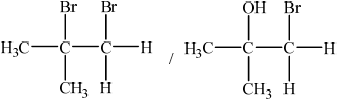;
Award [1] if structure and correct name are given for 2-bromo-2-methylpropan-1-ol
(i) synthesis of materials not naturally available/plastics;
chemically unreactive materials produced;
wide range of uses/physical properties / versatile;
cheap;
large industry;
uses a limited natural resource;
Award [2] for any two.
(ii) addition;
(iii)  ;
;
Must show continuation bonds.
Ignore bracket around the 6 carbons.
Must have 6 carbons joined to each other along chain.
(iv) monomers are smaller molecules / have smaller surface area than polymers;
Accept monomers have lower molecular mass.
with weaker intermolecular/Van der Waals’/London/dispersion forces;
Accept opposite argument for polymers.
Examiners report
This question was generally well answered and many high scores were seen. Naming the initial compound was generally well done though many stated methylprop-1-ene which is incorrect.
Most could describe the colour change with bromine correctly though some incorrectly used ‘clear’ instead of ‘colourless’ and many could draw the structure of the dibromoalkane formed. Most candidates stated that plastics were produced from alkenes and suggested versatility or low cost and so were able to score full marks.
Addition polymerisation was well recalled but a large number of candidates made mistakes with the structure of the polymer, a surprisingly large number had bromine appearing attached to the carbon chain. Most understood that larger molar mass was why polymers had higher boiling points than monomers but not all correctly attributed it to stronger van der Waals‟ forces between molecules.
Magnesium is a group 2 metal which exists as a number of isotopes and forms many compounds.
State the nuclear symbol notation, \({}_Z^AX\), for magnesium-26.
Mass spectroscopic analysis of a sample of magnesium gave the following results:
![]()
Calculate the relative atomic mass, Ar, of this sample of magnesium to two decimal places.
Magnesium burns in air to form a white compound, magnesium oxide. Formulate an equation for the reaction of magnesium oxide with water.
Describe the trend in acid-base properties of the oxides of period 3, sodium to chlorine.
In addition to magnesium oxide, magnesium forms another compound when burned in air. Suggest the formula of this compound
Describe the structure and bonding in solid magnesium oxide.
Magnesium chloride can be electrolysed.
Deduce the half-equations for the reactions at each electrode when molten magnesium chloride is electrolysed, showing the state symbols of the products. The melting points of magnesium and magnesium chloride are 922 K and 987 K respectively.
Anode (positive electrode):
Cathode (negative electrode):
Markscheme
\({}_{12}^{26}{\rm{Mg}}\)
«Ar =»\(\frac{{24 \times 78.60 + 25 \times 10.11 + 26 \times 11.29}}{{100}}\)
«= 24.3269 =» 24.33
Award [2] for correct final answer.
Do not accept data booklet value (24.31).
MgO(s) + H2O(l) → Mg(OH)2(s)
OR
MgO(s) + H2O(l) → Mg2+(aq) + 2OH–(aq)
Accept \( \rightleftharpoons \).
from basic to acidic
through amphoteric
Accept “alkali/alkaline” for “basic”.
Accept “oxides of Na and Mg: basic AND oxide of Al: amphoteric” for M1.
Accept “oxides of non-metals/Si to Cl acidic” for M2.
Do not accept just “become more acidic”
Mg3N2
Accept MgO2, Mg(OH)2, Mg(NOx)2, MgCO3.
«3-D/giant» regularly repeating arrangement «of ions»
OR
lattice «of ions»
Accept “giant” for M1, unless “giant covalent” stated.
electrostatic attraction between oppositely charged ions
OR
electrostatic attraction between Mg2+ and O2– ions
Do not accept “ionic” without description.
Anode (positive electrode):
2Cl– → Cl2(g) + 2e–
Cathode (negative electrode):
Mg2+ + 2e– → Mg(l)
Penalize missing/incorrect state symbols at Cl2 and Mg once only.
Award [1 max] if equations are at wrong electrodes.
Accept Mg (g).
Examiners report
Titanium is a transition metal.
TiCl4 reacts with water and the resulting titanium(IV) oxide can be used as a smoke screen.
Describe the bonding in metals.
Titanium exists as several isotopes. The mass spectrum of a sample of titanium gave the following data:
![]()
Calculate the relative atomic mass of titanium to two decimal places.
State the number of protons, neutrons and electrons in the \({}_{22}^{48}{\text{Ti}}\) atom.
![]()
State the full electron configuration of the \({}_{22}^{48}{\text{Ti}}\)2+ ion.
Explain why an aluminium-titanium alloy is harder than pure aluminium.
State the type of bonding in potassium chloride which melts at 1043 K.
A chloride of titanium, TiCl4, melts at 248 K. Suggest why the melting point is so much lower than that of KCl.
Formulate an equation for this reaction.
Suggest one disadvantage of using this smoke in an enclosed space.
Markscheme
electrostatic attraction
between «a lattice of» metal/positive ions/cations AND «a sea of» delocalized electrons
Accept mobile electrons.
Do not accept “metal atoms/nuclei”.
[2 marks]
\(\frac{{(46 \times 7.98) + (47 \times 7.32) + (48 \times 73.99) + (49 \times 5.46) + (50 \times 5.25)}}{{100}}\)
= 47.93
Answer must have two decimal places with a value from 47.90 to 48.00.
Award [2] for correct final answer.
Award [0] for 47.87 (data booklet value).
[2 marks]
Protons: 22 AND Neutrons: 26 AND Electrons: 22
[1 mark]
1s22s22p63s23p63d2
[1 mark]
titanium atoms/ions distort the regular arrangement of atoms/ions
OR
titanium atoms/ions are a different size to aluminium «atoms/ions»
prevent layers sliding over each other
Accept diagram showing different sizes of atoms/ions.
[2 marks]
ionic
OR
«electrostatic» attraction between oppositely charged ions
[1 mark]
«simple» molecular structure
OR
weak«er» intermolecular bonds
OR
weak«er» bonds between molecules
Accept specific examples of weak bonds such as London/dispersion and van der Waals.
Do not accept “covalent”.
[1 mark]
TiCl4(l) + 2H2O(l) → TiO2(s) + 4HCl(aq)
correct products
correct balancing
Accept ionic equation.
Award M2 if products are HCl and a compound of Ti and O.
[2 marks]
HCl causes breathing/respiratory problems
OR
HCl is an irritant
OR
HCl is toxic
OR
HCl has acidic vapour
OR
HCl is corrosive
Accept “TiO2 causes breathing problems/is an irritant”.
Accept “harmful” for both HCl and TiO2.
Accept “smoke is asphyxiant”.
[1 mark]
Examiners report
There are many oxides of silver with the formula AgxOy. All of them decompose into their elements when heated strongly.
After heating 3.760 g of a silver oxide 3.275 g of silver remained. Determine the empirical formula of AgxOy.
Suggest why the final mass of solid obtained by heating 3.760 g of AgxOy may be greater than 3.275 g giving one design improvement for your proposed suggestion. Ignore any possible errors in the weighing procedure.
Naturally occurring silver is composed of two stable isotopes, 107Ag and 109Ag.
The relative atomic mass of silver is 107.87. Show that isotope 107Ag is more abundant.
Some oxides of period 3, such as Na2O and P4O10, react with water. A spatula measure of each oxide was added to a separate 100 cm3 flask containing distilled water and a few drops of bromothymol blue indicator.
The indicator is listed in section 22 of the data booklet.
Deduce the colour of the resulting solution and the chemical formula of the product formed after reaction with water for each oxide.
![]()
Explain the electrical conductivity of molten Na2O and P4O10.
Outline the model of electron configuration deduced from the hydrogen line emission spectrum (Bohr’s model).
Markscheme
n(Ag) = «\(\frac{{3.275{\text{ g}}}}{{107.87{\text{ g}}\,{\text{mol}}}} = \)» 0.03036 «mol»
AND
n(O) = «\(\frac{{3.760{\text{ g}} - 3.275{\text{ g}}}}{{16.00{\text{ g}}\,{\text{mo}}{{\text{l}}^{ - 1}}}} = \frac{{0.485}}{{16.00}} = \)» 0.03031 «mol»
«\(\frac{{0.03036}}{{0.03031}} \approx 1\) / ratio of Ag to O approximately 1 : 1, so»
AgO
Accept other valid methods for M1.
Award [1 max] for correct empirical formula if method not shown.
[2 marks]
temperature too low
OR
heating time too short
OR
oxide not decomposed completely
heat sample to constant mass «for three or more trials»
Accept “not heated strongly enough”.
If M1 as per markscheme, M2 can only be awarded for constant mass technique.
Accept "soot deposition" (M1) and any suitable way to reduce it (for M2).
Accept "absorbs moisture from atmosphere" (M1) and "cool in dessicator" (M2).
Award [1 max] for reference to impurity AND design improvement.
[2 marks]
Ar closer to 107/less than 108 «so more 107Ag»
OR
Ar less than the average of (107 + 109) «so more 107Ag»
Accept calculations that gives greater than 50% 107Ag.
[1 mark]
![]()
Do not accept name for the products.
Accept “Na+ + OH–” for NaOH.
Ignore coefficients in front of formula.
[3 marks]
«molten» Na2O has mobile ions/charged particles AND conducts electricity
«molten» P4O10 does not have mobile ions/charged particles AND does not conduct electricity/is poor conductor of electricity
Do not award marks without concept of mobile charges being present.
Award [1 max] if type of bonding or electrical conductivity correctly identified in each compound.
Do not accept answers based on electrons.
Award [1 max] if reference made to solution.
[2 marks]
electrons in discrete/specific/certain/different shells/energy levels
energy levels converge/get closer together at higher energies
OR
energy levels converge with distance from the nucleus
Accept appropriate diagram for M1, M2 or both.
Do not give marks for answers that refer to the lines in the spectrum.
[2 marks]
Examiners report
PCl5(g) and Cl2(g) were placed in a sealed flask and allowed to reach equilibrium at 200 °C. The enthalpy change, ΔH, for the decomposition of PCl5(g) is positive.

Deduce the equilibrium constant expression, Kc, for the decomposition of PCl5(g).
Deduce, giving a reason, the factor responsible for establishing the new equilibrium after 14 minutes.
Deduce the Lewis (electron dot) structure and molecular geometry of PCl3.
![]()
Markscheme
«Kc» = \(\frac{{\left[ {{\text{PC}}{{\text{l}}_3}} \right]\left[ {{\text{C}}{{\text{l}}_2}} \right]}}{{\left[ {{\text{PC}}{{\text{l}}_5}} \right]}}\)
[1 mark]
decrease in temperature
endothermic «reaction» AND «equilibrium» shifts to the left/reactants
OR
endothermic «reaction» AND Kc decreases
OR
endothermic «reaction» AND concentration of PCl5 increased/concentration of PCl3 and Cl2 decreased
OR
«equilibrium» shifts in exothermic direction
Do not accept “temperature change”.
Accept “ΔH positive” in place of “endothermic”.
Accept “products” instead of “PCl3 and Cl2”.
[2 marks]
Lewis structure:
![]()
Molecular geometry:
trigonal/triangular pyramidal
Penalize missing lone pairs once only between this question and 4(b).
Accept any combination of lines, dots or crosses to represent electrons.
Do not apply ECF.
[2 marks]
Examiners report
Lewis (electron dot) structures are useful models.
Draw the Lewis (electron dot) structures of PF3 and PF4+ and use the VSEPR theory to deduce the molecular geometry of each species.
![]()
Predict with a reason, whether the molecule PF3 is polar or non-polar.
Markscheme
![]()
Accept any combination of dots, crosses and lines.
Ignore missing brackets and positive charge.
Penalize missing lone pairs once only.
Do not apply ECF for molecular geometry.
polar AND bond polarities/dipoles do not cancel out
OR
polar AND unsymmetrical distribution of charge
Apply ECF from part (a) molecular geometry.
Examiners report
Trends in physical and chemical properties are useful to chemists.
The Activity series lists the metal in order of reactivity.
![]()
Explain the general increasing trend in the first ionization energies of the period 3 elements, Na to Ar.
Explain why the melting points of the group 1 metals (Li → Cs) decrease down the group.
State an equation for the reaction of phosphorus (V) oxide, P4O10 (s), with water.
Describe the emission spectrum of hydrogen.
Identify the strongest reducing agent in the given list.
A voltaic cell is made up of a Mn2+/Mn half-cell and a Ni2+/Ni half-cell.
Deduce the equation for the cell reaction.
The voltaic cell stated in part (ii) is partially shown below.
Draw and label the connections needed to show the direction of electron movement and ion flow between the two half-cells.
![]()
Markscheme
increasing number of protons
OR
increasing nuclear charge
«atomic» radius/size decreases
OR
same number of shells
OR
similar shielding «by inner electrons»
«greater energy needed to overcome increased attraction between nucleus and electrons»
atomic/ionic radius increases
smaller charge density
OR
force of attraction between metal ions and delocalised electrons decreases
Do not accept discussion of attraction between valence electrons and
nucleus for M2.
Accept “weaker metallic bonds” for M2.
P4O10 (s) + 6H2O (l) → 4H3PO4 (aq)
Accept “P4O10 (s) + 2H2O (l) → 4HPO3 (aq)” (initial reaction).
«series of» lines
OR
only certain frequencies/wavelengths
convergence at high«er» frequency/energy/short«er» wavelength
M1 and/or M2 may be shown on a diagram.
Mn
Mn (s) + Ni2+ (aq) → Ni (s) + Mn2+ (aq)
wire between electrodes AND labelled salt bridge in contact with both electrolytes
anions to right (salt bridge)
OR
cations to left (salt bridge)
OR
arrow from Mn to Ni (on wire or next to it)
![]()
Electrodes can be connected directly or through voltmeter/ammeter/light bulb, but not a battery/power supply.
Accept ions or a specific salt as the label of the salt bridge.